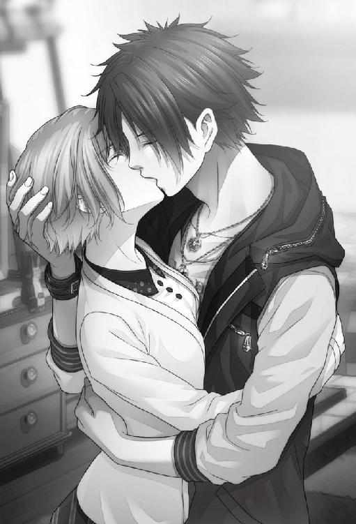

| KLAP！！ ～Kind Love And Punish～ (オトメイトノベル) | |
| 夏越ちか | |
| (2016) | |
CHAPTER:01
「山路を登りながら、こう考えた」という有名な本の冒頭があるが、そのとき山城暦の頭の中にあったのは、もっとシンプルかつ執念に近いものだった。
何しろ子どものころから教師になることが夢だったが、世間は厳しい就職難。何十通と受け続けた不採用通知の後でようやく手にした採用通知。藁にも縋るどころか飛びつくのは当然のことだった。
「ぜぇ......はぁ......」
しかし、いざ目的地を目指してみれば、なんと都心から数時間かかる山の中。進めども進めども見えるのは木々ばかり。挫けそうになる心を暦は、教師になれるのならば徒歩数時間が何だというのだ。そう、山の向こうに教師の仕事が待っている！ と心を奮い立たせる。
「ま、負けないんだから。そうよ......夢のため！ 私は教師になるんだ！ 頑張れ、山城暦......!!」
他に誰もいない山中に、暦の決意表明だけがこだまする。
そして更に時間が過ぎた頃──
「え？ な、なにこれ」
暦の前に鉄門が立ちはだかっていた。しかも家の前に設置されているような生半可なものではない。それはまるで厳重に守るための金庫のような代物だった。思わず暦は圧倒され、呆然と見上げた。
山道は一本きり。ならばこの門を通らないと学校には行けないはずだ。
「ん？ アンタ......誰っすか？」
ふいに声が聞こえ、門の傍から男が一人怪訝そうに歩いてくる。年は二十代後半くらいだろうか、これまた山の中に不似合いの、小綺麗な制服を着ていた。
「えーと、俺っちはここのガードマンっす。で、悪いんですけど、ここ関係者以外立ち入り禁止なんすわ。つーかアンタ。そもそもこの場所......どうやって知ったんすか？ 普通の人は近づけるわけねーんですが......」
「あ、それなら私......」
暦が鞄から封筒を出そうとすると、男は途端に身構えた。
「うぉっと、お姉さんストップっす！ 事と次第によっては不穏分子として処分しなきゃなんなくなる」
「へ？」
「つまり早い話が、実力行使でこの場所から消えてもらうっつーことですよ」
「き、消える......？」
それって、と暦が口を開こうとするが、男は片手をあげて頷いた。
「いやいや、心配無用っす。今パパパーっと消してさしあげるんで。記憶も何もすっかりね！」
「い、いやいやいやっ？ パパパーっは困ります！」
男の笑顔と軽い調子とは裏腹の、やけに物騒な言葉に、暦は安心どころか生命の危機を感じた。
「大丈夫。痛くはしないっす。それが俺っちの仕事なんで！」
「大丈夫じゃないですから！ あ、ああああのっ。ま、待ってください......！ 私その、別に怪しい者ではなくてですねっ？ ただ採用通知に従って来ただけの、しがない新人教師といいますか!? 今、鞄から通知書を出しますから！」
音を立てながら震える手で暦は一通の封筒を掲げる。見つめ合うこと数秒──男は笑みを浮かべた。
「なァーんだ！ 新しい先生だったんすね！ そんならそうと早く言ってくださいよ～。先生ってば、お人が悪い」
「あ、あはは......」
説明しかけた矢先に不穏分子にされたのだが、と言いたいところを暦はぐっとこらえる。
「いやあ、失礼しました！ ささ、中の方にどうぞどうぞ！ これから先生は学校に向かうんすよね？」
「はい、そのつもりです......」
暦は頭を下げたあと、ふと気になって手の中の封筒を軽くあげてみせた。
「あの......それにしても封筒見ただけでわかるんですか？」
「そりゃうちの謹製っすから。他で作れない代物っす。さ、脇のドアからどうぞ。学校の位置はですね〜。こっからすぐに大きな通りに出ると思うんで、そっからあとは道なりっす！ よっぽど運が悪いとか、超絶な方向音痴じゃなきゃ、すぐに行けるかと思いますんで！」
「あ、ありがとうございます」
暦は今一度、男に頭を下げてドアから入り込んだ。
「うわぁ......」
思わず暦は感嘆の声をあげた。何しろ山奥の聞いたこともない場所だったから、どれだけ寂れているのかと覚悟していたのだが、目の前に広がる景色は、よく見慣れた〝街並み〟だった。
鉄門の先がこんな風景だとはきっと誰も想像がつかないだろう。
「もっと忍者の村みたいなものを想像してた......って、それはさすがに言い過ぎか」
普通に車道もあるし、商店街もある。というか、これだけ都心から離れた山奥なのに逆に発展しすぎのような気もする。暦には、考えれば考えるほど不思議に思えてくる〝街並み〟だった。
「それにしても関係者以外は立ち入り禁止とはすごいな......。特殊な施設とか？ う～ん......そこらへんも学校に行けば説明してもらえるのかな」
辺りを見渡しながら暦は通りを渡った。コンビニエンスストアやカフェも立ち並んでおり、青空を背景に浮かぶアドバルーンがいくつか、ビルの合間に見える。ちらほらと人も出ている。しかし都心に比べればやはり数は多くないようだ。
「ん？ なんで歩道にだるまが置いてあるの。オブジェ？」
提灯の形をした信号機を眺め、脇にある【人間専用】という標識に目をこらす。なぜ、わざわざ【人間専用】などと書く必要があるのだろう。
不思議に思いながら渡ろうとすると、脇から「危ない！」と叫び声が投げつけられた。本能的に立ち止まった暦の鼻先を掠めるように何かが横切り、頬にチリリと痛みが奔る。
「なっ......？」
視線だけ何とか動かすと道路を駆けていくのは一台の車──ではなく牛車だった。ただしあんなハイスピードで駆けていく牛車を、暦は見たことも聞いたこともない。そのうえ見間違いでなければ車輪が激しく燃えていた。
「えええっ？」
暦は驚き、思わず通りがかった女性を引き止めた。
「く、車が燃えてます！」
「え？ ああ、そうね」
「大変、消防車呼ばないと！」
「必要ないわよ。いつものことだし」
言いながら女性が暦を眺める。その様子は先ほど会った門番と同じ反応だった。
「ひょっとして外から来たの？」
「は、はい。そうですけど......」
「なるほどね。ふふ、だったら早く慣れちゃうことね。今のは【カシャ】よ」
「カシャ？」
聞き返した暦に対し、女性は「轢かれないように気をつけなさい」と言って離れていく。通りを振り返れば、燃え盛った車はもうどこにも見当たらない。走り去ってしまったようだ。
「ど......どうなってるの？」
本当に消防車を呼ばなくていいのかは気になったが、これではもはやどうすることもできない。仕方なく暦は歩き始めた。
（なんだか怪しい......なにがって言われても困るけど）
やや不審に思っていると、しばらくして大通りが二股にわかれた場所にぶつかった。
「道なりに、って言われたけど......どっちなんだろ」
左右の道を見比べ、標識を探すが見当たらない。門番は「よっぽど運が悪いとか、超絶な方向音痴じゃなきゃ、すぐに行けるかと思いますんで！」と言っていたが、あの時なぜ突っ込まなかったのか。
暦は独りごちた後、無言のまま左の道を進む。特に理由はない。単なる勘だった。
ところが道は寂れた家屋がひしめき合う裏通りに変化し、人の気配も無くなっていくばかり。
「やってしまった......右だったとは......」
これは超絶方向音痴決定、ということなのだろうか。暦ががっくりと肩を落としかけた時だった。
「ねえ、そこの彼女〜？」
「......はい？」
背後からの声に振り返ると、そこには一七、八歳くらいの四人の青年が立っていた。
しかし暦の表情は怪訝なものに変わる。なぜなら彼らは少々──柄が悪そうに見えたのだ。
（いやいや、見た目で判断しちゃ駄目だよ。もしかして何か困ってるのかもしれないし！）
心の中で思い直し、暦は笑顔を浮かべた。
「どうかしましたか？」
「どうもしないけど。お姉さんさあ。大人しく荷物こっちに渡してくれる？」
「え？」
意味がわからず聞き返すと、笑顔のまま一人が言った。
「聞こえなかった？ 荷物置いて消えろって言ってんの」
「え、えーと」
先ほど自分の決め付けを反省したのに、わずか数秒で彼ら自身から覆されてしまう。
（どうしよう......不良に目をつけられてしまった）
「オラ、さっさとしろっつーの」
もしかしなくとも、これが世に言う恐喝というものだろうか。東京にいた時にだって一度も経験無いのに、などと暦が頭の片隅で思っていると、無言の様子に焦れた不良たちがじりじりと近づいてくる。
隙をついて逃げられないかと周囲を見渡すが、ただでさえ土地勘が無いうえに、彼らは数名。暦を逃さないとばかりに周到に散らばっている。
「あっれぇ、もしかして逃げようとか思ってる？」
「な、なんでそれをっ？」
思わず声に出す暦に対して不良たちは、顔を見合わせニヤニヤ笑い出した。
「逃げてもいいけど時間の無駄でしょ」
「ほらほら、お姉さんってば怖い目にあわないとわかんないの？」
「う、うぅ......」
ここは財布も何もかも差し出す他はなさそうだ。
兎にも角にも暦自身が何としてでも死守したいのは採用通知書だ。目の前の彼らはきっと書類には興味がないだろう。暦は片手を鞄の中に入れて通知書を掴むと、荷物をそのまま不良たちに渡そうとしたそのとき、
「──おい。何してんだ、テメーら」
ふいに不機嫌極まりない声が投げ掛けられる。
すると周りを取り囲んでいた不良たちが、合わせたように肩を揺らした。
（え？ ......誰？）
そこには眉間にしわを寄せ、怠そうに睨む黒髪の青年がいた。
「み、美作......」
「美作ァ？ おい。いつ呼び捨てにして良いつった。美作さん、だろ？」
「うっ......み、美作さん」
美作と呼ばれた青年は一歩も近づいていないというのに、なぜか不良たちは下がりだす。そのおかげで暦も下がらざるを得ない。
「で、何やってんだって、聞いてんだよ？」
「い、いや、これは......この女に世間の厳しさを教えてやろうと思ってっていうか！」
「ふーん」
（あれ......不良がみんなおびえてる？）
青年が出現した途端、不良たちがすっかり萎縮している。暦の中に一つの光明が見えた。ひょっとすると彼に助けてもらえるかもしれない。
（よし......！）
「あ、あの！ 助け──」
「まあほどほどにしとけよ？ じゃあな」
「えっ、ま......待ってください！ 困ってるんです。助けてくれませんか!?」
暦の必死の求めに、青年は視線を向けてはくれたものの、怪訝そうに目を細めただけだった。
「あ？ なんでだよ。てめーは俺の知り合いか」
「違います、けど......」
「だったら助ける義理はねえ。こっちはこれから買い物なんだよ。そんじゃあな」
あっさり背中を向けられてしまう。
「そ、そんな......」
「へ......へへっ、運が悪かったな。ほら、さっさと荷物を置いていきな！」
「お姉さんもさあ、ケガしたくないだろ？」
勢いを取り戻した不良たちを見て、暦は観念することにした。
「わかりました......」
「そうそう。初めっから大人しくしてればいいんだよ」
「最初から腰の低～い態度だったら、俺たちだって手荒な真似はしないんだよ」
一人が高らかに笑いながら言った途端、周囲が息を呑んだ。
「ぎゃーははは............は？」
目の前に立っていた不良が、背後から頭をわしづかみにされたかと思うと、そのまま宙に吊り上げられる。驚いて声が出ないまま暦が見上げていると、地を這うような声が響いた。
「......低い？ 何が、低いって......？」
「バ、バカ！ 美作の前で低いって言葉は......!!」
「おい、何が低いのかって聞いてんだよ？」
「い、いや違うんだ美作さん。別に俺たちはアンタの鼻が......」
「バカ！ 鼻のことは言うな！」
「誰の鼻が低いって、このクソがぁぁぁ！」
「ぐはぁぁぁ!?」
空気が唸り、宙吊りの不良が背後へと投げ飛ばされる。
（えええっ......!?）
口を開けたまま固まる暦の真横に、腕が突き出されたかと思うとまた一人背後へと弾かれる。逃げ惑う集団の中心で狂ったように暴れだした姿を、暦はただ呆然と見ている他ない。
あっという間に電柱に向かって別の一人が叩きつけられた。
「こ、こいつは重度の低鼻コンプレックスなんだよ！ 低いとかそういう言葉は──！」
「誰が低鼻だぁぁ!!」
叫びと共に青年の右足が高くあがる。回転を利かせた蹴りが一人のみぞおちに入り、うめき声を上げて地面に倒れる。しかし青年はすでにノビている者の襟首を掴み上げ、周囲に睨みを利かせたかと思うと、怒気をはらむ声で叫んだ。
「どいつもこいつも俺の鼻を馬鹿にしやがって......。いい加減にしねーと殴るぞクソがぁぁ！」
「も、もう殴ってい......ごはぁっ」
「鼻が陥没してるとか、言いすぎなんだよ!! 俺だって傷つくんだぞバカ野郎ー!!」
「ぐあっ！ そ、こまで言ってな......」
「す、すごい......」
一分も経たないうちに不良たちは全員、虫の息となって地面に倒れ伏し、暦の前には、最高潮に機嫌の悪そうな青年だけがただ一人、立っていた。
「はぁ、はぁ......はっ！ ああ、くそ。またやっちまった......」
どこか苛ついた様子で青年は息をつく。汗を乱暴に袖で拭う姿と目が合った。
「......なんだよ、なんか文句あんのか」
「そ、そんな、文句なんて......！ むしろ助かりました......あの、ありがとうございます」
暦は慌てて頭を下げたが、返ってきたのは不機嫌な声だった。
「別に助けたつもりねーし。てか、おまえのせいだからな」
「え？」
「おまえが絡まれるから悪いんだ！ 余計な体力使わせやがって......！ 大体、こんなバカども相手しねーで、さっさと逃げりゃいいじゃねぇか。どんくさい女だな！」
「ご、ごめんなさいっ」
怒鳴られて身体をすくませると、はっとしたように青年の表情が揺れる。
「ちっ。......とにかく次からは絡まれたりすんなよ？ ......じゃあな」
「あ、あの！ よければお名前と連絡先を。今度改めてお礼をします！」
「......燈真。美作燈真だ。礼なんていらねえよ、さっさと消えな」
それだけ言い残すと、今度こそ青年は通りの角へと姿を消した。
「美作燈真......」
しばらく姿を消した角を見つめていた暦だったが、ふと気付いて腕時計を確認し、ぎょっとした。
「......嘘、もうこんな時間!? 早く学校に行かないと！」
こんなに全力で走り続けたのはいつぶりだろうか。暦は荒い息を繰り返し、朱塗りの鳥居が跨った橋の向こうに建つ、奇妙な木造校舎を見上げた。
堀の真ん中に据えられた石柱には獅子の像が置かれ、側面に「黄泉比良坂幽魔専門高等学校」と刻まれた札がはめこまれている。
「つ、着いた......ここまで長かった。私、頑張った！」
山道から始まり、変な門番と出会い、道なりに行けば着くという道に迷い、燃える車に轢かれかけ、不良に絡まれ、低鼻コンプレックスの青年に助けてもらい、ようやくここまで辿り着いたのだ。
一歩踏み出そうとして、暦はよろめいた。膝が笑っている。今から校長に会うのに満身創痍もいいところだ。
「おやおや......声がすると思って来てみれば、貴女でしたか」
突然かけられた声に暦が顔を上げると、髪をゆるく後ろで縛った背の高い男性が、校舎の入り口に立っていた。口元には微かに笑みを湛え、実に優美な足取りで歩いてくる。
「ふふ、どうやらここに来るまでに冒険をされたようですね」
腕が伸びたかと思うと、「失礼」と声を掛けられ、頭のてっぺんを優しく払われる。ぱらりと落ちたのは葉っぱと小枝だった。
「うっ......ええと、あなたは......？」
「私は出雲紫苑。ここ黄泉比良坂幽魔専門高等学校にて教員をしている者です。まあ有り体に言いますと、今後貴女の同僚となる身です。どうぞよろしくお願いしますね」
名前を名乗った男性に暦は頭を下げた。
「あ。そ、そうだったんですね。わざわざお出迎えしてもらってすみません......。山城暦と申します。未熟者ですが、よろしくお願いします！」
「ふふ。そんなに深く頭を下げないでください。これから一緒に働く仲間なんですから」
「は、はい！」
物腰の柔らかな紫苑の言葉に、暦の緊張が少しほぐれる。
「あの、お約束の時間から大分経ってしまい本当に失礼いたしました。社会人として時間厳守もできないなんて恥ずかしい限りです」
「ここに来るまでの距離を考えれば妥当な時間じゃないですか。こちらとしては来てくれるだけで御の字ですよ」
暦の硬い調子を紫苑はおかしそうに眺めつつ、手のひらで校舎を示した。
「それでは校長先生へのご挨拶に向かいましょうか。きっとあの方も頭を長くして、待っているでしょうから」
（頭？ 首じゃなく？）
建物の外観も学校として変わっていたが、内装も想像を上回るものだった。紫苑の後ろに付いて歩きながら、暦はぽかんと口を開け、辺りを見渡す。
「街でも変わったデザインが多いと思ったんですが」
目に留まった壁の一つを指さし、前を歩く紫苑に尋ねた。
「これは雲のデザインですか」
「霞です。日本の伝統模様の一つですよ」
紫苑の解説に頷きながら視線を進行方向に戻す。
（うわ。なんだろう、あのおっきいこけし......）
「ふふ、気になりますか？」
暦が驚く様子に、目ざとく気が付いたのか紫苑が笑う。
「ええと、巨大過ぎませんか？」
天井すれすれの高さのこけしが、男子の制服と女子の制服を着て向き合っている。一体何の意味があるのか。ただの飾りなのだろうか。
「こちらの匠は少々センスが独自的ですからね......。人間界のそれと比べると、多くの部分が変わって見えるでしょう」
「は、はぁ......、ニンゲンカイですか」
【人間界】で良いのだろうかと、暦は首をかしげた。先ほどの横断歩道の件といい、わざわざ口に出す意味がわからない。ここは人間界なのだから。
「そうだ。ここに来るまでに関所があったかと思いますが──」
「関所？ 門番さんがいた鉄門のことですか」
「そうです。一応説明しておきますが、この土地への出入りは基本あそこからお願いします。無理に壁を乗り越えて出入りすると、結界に阻まれて大怪我をしますので......」
「け、結界？ それに大けがって......」
からかわれているのだろうかと紫苑を見上げるが、彼はどこまでも真面目な顔だった。
「高圧電流みたいなものがありまして。危険ですので、関所以外からの出入りは絶対にしないでください」
「は、はぁ？ あ......そ、そうだ。校長先生ってどんな方なんですか？」
不穏な話題を切り替え、暦は校長について尋ねた。
「あの方は......そうですね。一言で言えば色々と大きい人でしょうか」
「色々と大きい？」
（身長のことかな？ あ、わかった！ 器が大きいってことだ！）
「ふっ。会ってみればわかりますよ」
そうこうしているうちに、二人は職員室の前に辿り着いた。
「さて、着きましたよ。こちらに校長先生がいらっしゃいます。......心の準備はよろしいですか？」
「は、はい。お願いします！」
「......失礼します。採用者をお連れしました」
ノックと共に紫苑が扉を開く。暦は考えを振り払い、背筋を伸ばした。
「失礼します！」
頭を下げてから部屋に入ると、中は思ったよりも手狭な印象を受ける職員室だった。デスクの向こうから人物がゆっくり立ち上がる。
「おお、待ってましたぞ。よくぞこのような山奥へと......！」
「山城暦です！ この度はご採用いただきありがとうございました」
「かっかっか！ 長旅で疲れただろう。まあ楽にしたまえ」
「は、はいっ」
「うむ、私がこの学校の校長......！【ぬらりひょん】であーる！」
目の前には白ひげを口元にたくわえ、着物を着た老翁が一人、暦を興味深そうに見つめていた。
（............器......器が............いや、器というか......）
「頭が大きい!!?」
部屋の中が一瞬静まる。
「......ぷっ、ふふふ。いいリアクションですね。ええ、確かに大きな頭です」
暦の背後で紫苑が噴き出した。暦ははっと我に返ると、再び慌てて頭を下げた。
「あわわ、す、すみません私、思わず......!! 失礼いたしましたっ」
「いやいや、何も気にすることはない。どうあってもそれは事実だからの。それにぬらりひょんにとって、頭が大きいというのは褒め言葉だ。それだけ驚いてくれるのは、むしろ嬉しいことだ」
「は、はぁ......」
微笑むと顔全体にシワが走る。一体いくつくらいあるのだろうか。
（というか......ぬらりひょん？ まさか本名のわけがないし、かといって妖怪なわけないし......。あだ名だったりとか──）
「あだ名ではありませんよ？」
「こ、心を読まれた!?」
驚いて振り返ると、どこか愉快そうな表情を湛えて紫苑は暦を見ていた。
「ふふ。さらに補足するとあの方の名前は、正真正銘【ぬらりひょん】ですよ」
暦はめまぐるしい勢いで考えを巡らし始めた。
（受けた学校の校長の顔は全て見たはずなのに......）
出願した学校の校長の顔は全て確認しているはずだ。いや、校長だけじゃない。暦はどの学校も全てパンフレットを取り寄せ、校風やカリキュラムを調べあげてから教員採用試験に臨んだ。
けれど、どうしてもこの学校のことは思い出せない。風変わりな校舎も、やや奇抜な校長も、一度見れば絶対に忘れない自信があるというのに。
（こんなインパクトのある校長がいる学校は受けた記憶がない。ということは......？）
黙ったままの暦を、穏やかにぬらりひょんは見つめている。何か言い出すのを待っているようだ。暦はごくりと唾を飲み込んだ。
「......すみません。ひとつだけ質問をしてよいでしょうか」
「ひとつと言わずになんでも聞くと良い。ああ、お茶はどうだね。歩き続けて疲れているだろう。それから出雲先生、案内ありがとう」
「どういたしまして。では、私はこれで」
「......は、はい」
ぎこちなく頷く暦に紫苑が少し表情を和らげた。
「大丈夫ですよ。これから先、大変なことも多いと思いますが......どうか、頑張ってくださいね」
扉の向こうにその姿が消えていくと、暦はぬらりひょんを見た。それから採用通知書を取り出し、差しだす。
「今さらで恐縮なんですが、もしかしてこの通知って、間違いだったりしますか？」
ぬらりひょんはちらりと封筒を眺めた。
「いいや、間違っておらん。これは確かに君に出したものだ」
「でも......」
「まずはいろいろと順を追って話したほうがいいだろう。少し長くなるからそこにかけなさい」
椅子を勧められ、暦はありがたく座ることにした。山の中を歩き続け、町の中をさまよったのでへとへとだった。
「さて。どこから話すべきかな。......第一に、さっきも言ったが、私は【ぬらりひょん】だ」
老翁の言葉に暦は口ごもった。
「それは......少々変わった名前とかではなく、あの、ぬらりひょん？ つまり──妖怪の？」
自ら尋ねながらも、暦は少し恥ずかしくなった。そして当然否定されるに違いないという思いもあった。
ある日突然誰かに「私は妖怪です」と言われて、「はい、そうですか」と即座に頷けるわけがない。普通の神経を持ち、普通に育った人間ならまずこう思う。
──何を言ってるんだろう、と。
けれど予想に反し、ぬらりひょんは頷いた。
「そのとおり。私は......人間ではない。君とは違う生き物なんだ」
曇りも淀みも無い、真っ直ぐな瞳だった。
「............なっ!?」
そんな馬鹿なと言いかけた暦の頭に、ここに辿り着くまでの出来事がよぎった。関所を潜った先にあった奇妙な街並み。道路を猛スピードで走り抜けていった燃え盛る牛車。驚いていた暦に対し、通りを歩いていた女性が言った言葉が脳内に揺らめき浮かぶ。
『ひょっとして外から来たの？』
『なるほどね。ふふ、だったら早く慣れちゃうことね。今のは【カシャ】よ』
頭の中で変換できなかった単語が弾ける。あれは火車だ。
「......嘘。本当な、の？」
混乱しかける頭を振り、暦はぬらりひょんを見た。
「あ、あの、通りを歩いていた時に【火車】と呼ばれるものと遭遇したんです。車が燃えてるのに驚いてるのは私だけでした。それに出雲先生は、先ほど人間界という単語を使ってました。なぜわざわざそう表現するのだろうと思ったんです......つまり、ここにいる人たちは、みんな妖怪なんですか？」
「ふむ──妖怪か。その呼び名も間違いではないが、正式名称は幽魔【ＵＭＡ】と言うのだよ」
「ユーマ？」
「そうだ。そして関所を境に結界が張られたこの土地が【逢魔県】。日本の四八個目の県であり、幽魔たちが生活する小さな世界なのだよ」
「よ、四八個目の県!?」
日本の都道府県は四七。小学校の社会の授業で教わって以来、その事実が覆ったことはない。なのに実はもう一つ謎の県が存在し、そこに住む者たちは幽魔という人ではない者たちだという。
「きみが驚くのも無理はない。ここは本来、秘匿された土地。その存在を知る人間もごく一部だ。そしてこの逢魔県は、ある目的のために創られた土地なのだよ」
黙ったまま続きを待つ暦の様子に、ぬらりひょんが微笑んだ。
「日本各地で不思議な存在の伝承を聞いたことがあるだろう。本来、幽魔はどこにでもいる。ただし逢魔県の外にいる幽魔たちは成熟した幽魔たちでね。この逢魔県は未熟な幽魔たちを【調教】するのために存在するんだよ」
「調教？」
言葉の意味なら当然暦も知っているが、極めて特殊なこの場所で、一体どんな意味を持つのかがわからなかった。
「かつては多く存在していた幽魔も、時代を経るにつれその数は激減した。残る者たちも人間たちが社会を発展させていくごとに身を隠すことが容易でなくなった。今や人間との共存は不可避となっている。だが......わしらのような熟練の幽魔とは違い、力の未熟な幽魔たちは人間との関わり合いの中で、その力を【暴走】させてしまうことがある」
「暴走......ですか」
「主に過度な感情の昂ぶりや、人間と必要以上に接触することが原因だ。暴走が一度起これば、幽魔自身でコントロールはできず、周囲に危険をもたらしてしまう。もし人間界で暴走を起こしたなら、我ら幽魔は人間にとって危険な存在として【処分】されてしまう」
「そ、そんな！」
「ゆえに、この学校では暴走を未然に防ぐためのトレーニング──【調教】を施しているのだ。そして課程を乗り切った暁には、人間界で自由に過ごすためのいわば【免許】が授けられる」
にわかには信じられないといった表情で、暦は椅子の背にもたれかかった。
一息に説明をしたためか、ぬらりひょんも微苦笑を浮かべながら、暦と同じように椅子に背を預ける。暦はただただ唖然とするばかりだった。
恐らくぬらりひょんは本当のことを言っているのだろうと感じた。
大体において、この老翁から見れば暦など小娘もいいところ。その小娘一人に対し騙したいことがあるなら、こんな大掛かりなことはしなくてもいくらだって方法があるはずだ。
「......君には、未熟な我が校の生徒たちの【調教】を手伝ってもらいたい。立派な調教師としてね」
「え？ ちょ、超・教師ですか？」
「ふふふ。そうとぼけたくなるのもわかるが......調教師だよ。未熟な幽魔たちを鍛え上げる、な」
「ま、待ってください！ 私は教師として採用されたんじゃ......。だ、大体さっきのお話も矛盾してます！ 秘匿されて、ごく一部の人間にしか知られてないなら、どうして私がこの学校に応募できたんですか？ と言いますか応募した記憶がまるでないです！」
「む......そのことか。それには実は仕掛けがあるんじゃよ」
ぬらりひょんは懐から封筒を取り出した。それは色が違うものの、暦が持っていた採用通知と同じデザインの封筒だった。
「ひとつ聞くが......君に今、【これ】は見えているかね？」
「は、はい。もちろん見えてますけど......」
「ふむ。では......」
ぬらりひょんが指を弾く。すると、ぱちんという音とともに手の中にあった封筒が無くなっていた。
「これはどうかな？ まだ見えるかな？」
「み......見えないです」
「ではもう一回」
ぬらりひょんが再び指を弾くと、彼の手に封筒が浮かび上がった。
「ではこれに触ってみてくれるかな」
半信半疑のまま暦は身を乗り出し、封筒に指先を近づけた。しかしそのまま指は封筒をすり抜けてしまった。
「あ、あれ......なんで......!?」
慌てて真横から眺めるが、確かに封筒は見えている。けれどその実体が無い。ぬらりひょんが封筒を揺らすと、音を立てて膝の上に落ちた。恐る恐る拾い上げれば今度こそ封筒の感触があった。
「そんな......」
「今のはいわゆる妖力。我々、幽魔の持つ特殊な力......といったほうが早いかな。そしてこれらを見ること、感じることができるのは、資質のある人間のみ──当然、応募用紙にも妖力を施している。つまり君がここへ応募できたのは、適性を持ったごく一部の人間だという何よりの証拠だ」
ぬらりひょんが肩をすくめてみせた。
「もしまだ幽魔の存在について納得がいかなければ、ここにポピュラーな幽魔を呼ぼうか？ 一反木綿とか、塗り壁とか......一つ目小僧はどうかな？」
「い、いいですいいです！ 遠慮します！ それにあなたの言うことが仮に全部本当だったとしても、私は調教なんてできません！」
「だが、履歴書にあるように君の実家は神社だろう？ 血筋に陰陽師がいたという話だし......うむ！ なんとかなる！」
「......な、なりませんよ！ なんで勝手に決めちゃうんですかっ」
「かっかっか！ まあ、そう難しく考えずに。ここに来たのも何かの縁！ 運命！ あかしっくれこーどに刻まれた汝が定め！」
「私の人生を無理やりここに結び付けようとしないでください......!!」
暦は椅子から立ち上がった。
逢魔県やら幽魔やらの事実を知らされてただでさえ混乱しているというのに、幽魔に調教を施せと言われ、冷静でいられるわけがない。
「それに私には夢があるんです......ちゃんと普通の学校で教師として働くっていう夢が！ だからその、申し訳ないのですが──」
「断ると？ ここにしか採用されなかったのに？」
「そ、それは......」
「ふーむ。いらぬ心配かもしれんが、今の時期から新規に募集をしている学校がそうそううまく転がっているかのう？」
「うっ!?」
「そうなると一年間の職歴空白......いやはや、それが次の場所に響かなければいいのう」
職歴空白──
痛恨の一撃を受け、暦の頭の中で「無職」という単語がぐるぐる回り出す。
「う、うううっ？」
「かっかっか！ そう白目をむくでない。つまりだな、我々は君の力を欲している。だが君は普通の、人間界の学校に勤めたい。ならばこういう条件はどうだろうか？ ......一年。見事に調教師としての仕事を勤め上げたならば、都内の高校に私が口利きしてあげよう」
「え......ほ、本当ですか？」
「まあそれくらいはの。あくまでここで一年勤めることが条件だが......その件については、大船に乗ったつもりでいてくれて構わんよ」
答えを待つためにぬらりひょんが黙る。暦は職員室の中を見渡した。ここで辞退をすれば無職確定。当然生活にも困る。何よりまた辛い就職活動を開始しなければならない。
とはいえここは普通ではない。四八個目の県であり、幽魔と呼ばれる人ではない者たちの学校。そのうえ詳細は不明だが......未熟な幽魔たちの力を抑える調教ということもやらなければいけないらしい。
できるわけがない。頭の片隅でもう一人の暦が囁く。
やっぱり自分には無理だ、と思いかけた暦は、教師になるために努力をしてきた日々を思い出した。そしてことごとく不採用通知を手にしたことも。
なりたい人間が誰でも、教師になれるわけではない。
ならばチャンスが何であれその一端を掴んだら、放してはいけないのではないか。
挑戦もせずに辞退をすればいつか必ず悔やむ。
（そうだよ......不安要素をあげたらキリなんて無い......）
ならば今この場所で、自分にできることを全力でしてみるしかない。
「どうかな？」
暦は息を吸い込んだ。足が震えているが、これは歩き疲れているだけ。そうでないなら武者震いということにすればいい。そう自分に言い聞かせ、暦はぬらりひょんに向き直った。
「が、がんばり......ます！」
「おお......そうかそうか！ よくぞ決断してくれた。本当にうれしいぞ！ かっかっか！」
破顔した老翁がすっくと立ち上がり、机に向かう。
「では早速、諸々の手続きをしてしまおうではないか！ さあこちらにおいで！」
賽は投げられた。
ここが少し変わった場所であろうとなんだろうと挑戦してみよう。そして一年後、念願の普通の教師になる。と暦は決意するのだった。
初日の昼休みを知らせるチャイムが鳴ると同時に、黄泉比良坂幽魔専門高等学校──通称、黄泉校はあらゆる教室から一斉に生徒たちを吐き出し、校舎はたちまち賑やかになる。
金箔の襖で囲まれた食堂の一角で、暦は頬杖をつきながら学生たちを眺めていた。
トレイを持って列に並び、本日の日替わり定食を確かめている彼らの見た目は、人間とほぼ変わりないが、幽魔という種族だ。
「せーんせ。どうしたの、ぼーっとして」
「あ、石見さん」
声をかけてきたのは暦が担当するクラスの女子生徒だった。
「あはは、石見さんなんて呼ばないで、楓でいいよ」
「じゃあ......楓さんって呼ぶね」
呼び捨てすることに気後れしたのは、彼女の実年齢が暦の数十倍を超えているからだ。
幽魔が非常に長命だということを、暦は受け持ったクラスの生徒たちの自己紹介で初めて知った。
「ふふっ。それで何か考え事？」
「考え事っていうか......」
「わかった。あれでしょ」
「あれ？」
「恋煩い。さっそく誰かを好きになっちゃった？」
「......え」
「で、誰なの？ 食堂で眺めてるってことはうちのクラスじゃないってこと？ 隣のクラスのろくろ首くん？ まあちょっと首が伸びるけど確かにイケてる顔よね。それとも影のあるねずみ男？ あいつはあんまりお薦めしないわよ」
暦は軽く吹き出した。
「違うって、そんなんじゃないの。自分の高校生活を思い出してただけ」
「なぁんだ、つまらない」
「そうだよ。せっかくなら俺と恋のアバンチュールでもしない？」
「え......うわっ」
耳元で囁かれ、暦は思わず声を上げる。慌てて振り返ると、そこには男子生徒が立っていた。
優美な動作でそのまま暦の隣に座ると、はだけた制服の隙間から香水の香りがふわりと立ち上る。彼の名前は駿河明人、種族は河童だ。逢魔県に来るまで河童という存在がこんなに華やかな存在だと、暦は当然知らなかった。
「食堂でご飯を食べるなら俺を是非とも誘ってほしかったな」
「なんであんたを誘わなくちゃいけないのよ」
楓が突っ込みを入れる。
「久しぶりの人間の女性だよ。俺の恋の相手にならなくてどうするっていうのさ」
「私は教師として来ただけで、別に駿河くんの......」
「ああ、先生。明人って呼んでよ。その可愛い唇で」
明人が暦に体を寄せ、指先で顎をとらえた。
「いい？ あ・き......」
「この発情河童!!」
鈍い音と共に明人の顔が二重三重にブレる。
「皿が！」と悲鳴を上げる明人の真上を見ると、明人の頭にトレイを叩きつけた幽魔の姿があった。
「美作くん」
「まーたあんたか」
「またも何もクラスの担任なんだけど......」
暦が言うと、燈真は「けっ」と呟いて楓の隣に座る。なんと逢魔県に来た時に街で出会った燈真も黄泉校の生徒で、なおかつ暦の受け持ちの生徒だった。
教室で出席簿を見ながら名前を読み上げた時には互いに驚いたし、燈真から天狗の一族だと自己紹介された時にはもっと驚いた。
「ちょっと、なんであんたもここに来るわけ？」
「うっせー。他に席がねえんだよ。俺は飯を食いたいだけだ」
そう怠そうに言うと、燈真は弁当箱の蓋を開ける。
「わあ、美味しそうなオムライス」
思わず暦は覗き込む。綺麗な焼色をした黄色のオムライスにケチャップがかかり、脇にはタコ型のウィンナーとキュウリとチーズの串刺しがあった。
「やっぱり食費を浮かすならお弁当が一番だよね」
学生時代とは違い、仕送りのない一人暮らしを初めてすることになり、暦はいかに生活費がかさむかを実感している今日このごろだった。
「先生、料理できるの？」
「実は簡単なものしか作れない......」
「んじゃ、燈真に料理を教わったらいいじゃん」
楓の背後から新たな声が聞こえ、皆の視線が移動する。
「よーっす。なんか楽しい集いしてんじゃん。混ぜてよ」
片手を上げたのは近江亮。その人懐っこい笑顔は、暦が教師初日で緊張に陥っていた時も助けてくれた。彼は日本に存在しない外来の狼男だ。
ぬらりひょんの話によると稀に海の向こうから幽魔が渡って来ることもあるという。
「燈真くんのオムライスって美味しいよね。口の中が大爆発」
亮の横から口を開いたのは金髪の男子生徒。カミル＝セッツェリン。彼も外来の幽魔で、なんと吸血鬼だ。
「それ口内が大惨事じゃないのよ、カミル。ていうか燈真って料理できたんだ」
楓が意外そうな顔で見ると、燈真は苦々しい表情を浮かべた。
「悪いかよ」
「なんでもっと早く教えてくれなかったのかと思って」
「あ？ なんでだよ」
「私のお弁当も作ってきてほしいから」
「アホか！」
「ふっ、やめておきなよ、楓。この天狗が作った弁当なんて食べたら、お前までペチャ鼻になるよ」
「......今なんつった、発情河童」
「ペチャ鼻天狗って言ったんだよ」
音を立てて燈真と明人が椅子から立ち上がる。
「んだとコラ......ッ!? 鼻のことは言うんじゃねーよ、この隠れハゲ！」
「ハ......!? お、俺はハゲじゃない！ 河童の皿があるってだけだ！」
「ちょっと二人とも......」
暦が慌てて二人を制止しようとするが、なぜか楓たちは落ち着き払って昼ごはんを食べ始めている。
「先生、止めたって無駄無駄。この天狗と河童は仲が悪くて、いつも喧嘩してるの」
「毎度飽きないよなあ、二人とも。オレと楓みたいに常に新しいネタを探すとかすればいいのに」
「あのね、亮。あんたと私と違って二人は漫才コンビ組んでないから。あ、先生、今度オオカミニンギョの新ネタを披露するから乞うご期待☆」
「え、えーと」
隣では一触即発の雰囲気が漂い、楓と亮からは漫才の話を振られる中、暦はカミルが食べているものに目を奪われた。
「え、カミルくんのそれって昼ご飯？」
「そうだけど」
「ゼリーで足りるの？」
カミルが手にしていたのは、やけに毒々しい青色のゼリーだった。
「うん。これは勇者がよく使用する中回復のゼリーだから」
「へ、へえ......」
暦の目には、そのゼリーが中回復できそうには映らなかった。
「いよーし、表出ろやエロ河童！ 地平線の彼方まで吹っ飛ばしてやるからよォ！」
「そっちこそ、川底に沈めてあげるから覚悟しなよ......！」
わずか数秒目を離した隙に、燈真たちは更に険悪な雰囲気になっている。
「こら、二人ともやめなさい！」
「俺は悪くねえ！」
「俺だって悪くないよ、先生！」
「どっちもどっちです！ おとなしくご飯を食べないと......」
「なに？ 先生にお仕置きされちゃう？ 俺は大歓迎だよ」
明人が暦の手を取り、指先に素早くキスをする。
「うえっ、てめえには理性ってのがねえのか」
「ふ、理性？ それって美味しいの？ それに美しい女性に対して、常に緩急つけた攻めの態度こそ俺のスタイルだよ」
「要するにとにかく口説きまくるってことでしょ」
呆れた楓の口調に亮も苦笑いを浮かべている。暦は慌てて明人から手を引き剥がした。相手のペースに乗ってはいけない。
「と、とにかくおとなしくしないと、明日の授業は二人交互に当てていくからね」
「げっ。それはまじで勘弁」
「うーん、そういうお仕置きなら遠慮したいかな」
おとなしく席に座った二人に、やれやれと暦はため息をつくのだった。
着任してから一週間後のある日。午後の授業が開始された。五時間目は体育の授業。生徒たちが校庭でドッジボールを始めている。
黄泉校は高等学校という名前こそついているが、あくまで人間界を知る専門学校。教える教科は人間界の政治・経済、文化、生活様式、地理、歴史などだ。そして週に二度、体育の授業が組み込まれていた。
ちなみに幽魔たちには体操服に着替えるという概念がないらしく、全員が制服のままだ。
「よっしゃあ、行くぜぇ！」
燈真がキャッチしたボールを持って、勢い良く飛び上がる。その跳躍力は人間とはかけ離れており、もはや飛翔と表現して遜色ない。慌てて他の生徒たちが後方へ下がる。ボールが突風と共に敵陣に突っ込んでいく。腕にあたった生徒が一人、そのままコートの外へと弾き飛ばされた。
「だ、大丈夫っ？」
声をかけると飛ばされた生徒がふらふら立ち上がり、片手を上げる。ほっとしてから暦はホイッスルを吹いた。
暦がクラスを持ってまだ一週間程だが、生徒たちを観察した結果、どうやら幽魔にも人間同様に種族差があり、そしてさらに個体差があることがわかった。その中で天狗の燈真は幽魔の能力が抜群に秀でている存在だった。他の生徒たちも本能で感じているのか、彼に一目置いている節がある。
「反撃」
燈真に向かってカミルが何かを肩に担いで構える。黒光りする長い筒──バズーカだ。
「ちょ、カミルく──」
鈍い音と白煙を立ててバズーカが発動し、ボールが勢いよく発射される。
「カミル、てめえっ」
燈真が止めようとするが、ボールは片隅に立っている男子に直進していく。
しかし慌てる素振りもなく、興味なさそうに男子はボールに向かって息を吐きかけた。途端、ボールと生徒の間に真白な氷の壁ができる。壁に触れると同時にボールは氷に包み込まれ、動きを止めた。
「......す、周防くん」
ため息をついた暦に周防と呼ばれた生徒は顔を上げ、唇を歪める。陽の光に透ける髪は白く、金と紫の双眸が冷たい光を放っていた。
周防壮介、彼の種族は雪女。女しか生まれないとされる雪女の中で、極めて珍しい男の雪女だ。
男女問わず人間を美貌で惹き寄せると伝承にあるだけに、壮介の容姿は儚げで美しい。
しかし──
「あっぶなーい。ボクに当たったらどーしてくれちゃうわけ？ カミル、当てるならバカで丈夫な燈真にしてよね」
「ご愛嬌」
「壮介、おまえな......！ つかカミル、ご愛嬌じゃねえぞ！」
すかさず燈真が突っ込みを入れる。
「ねえ、センセー、ボクこれ以上ここにいると溶けちゃうかも。超デリケートな雪女だし。センセーみたいに単純で図太い人ならともかく、体育の授業はボクにとって苦痛でしょうがないんだけどー」
その見た目からおよそかけ離れて、口が超絶に悪かった。
「てことで、ちょっと休憩ー」
そう言うと壮介はさっさとコートから出てしまう。
「こら！」
コート内に氷漬けにされたボールが残されてしまう。仕方なく暦がボールに向かおうとすると、氷の塊に近寄った生徒が一人。小首を傾げたまま氷を眺め、何箇所かコンコンと拳で軽く叩き始める。
「えっと......播磨くん？」
暦が声をかけると播磨と呼ばれた生徒は振り返り、柔和な笑顔を見せた。
「教員殿、少し下がっていてくれるかのう」
愛らしい姿にやや不釣り合いな口調で言うや否や、腰に差した刀を鞘ごと抜き取る。そのまま素早い動作で氷に打ち込んだかと思うと、たちまち表面にヒビが入り、砕け散った。
暦は足元に転がってきたボールを拾い上げる。
「すごい！ 播磨くん、ありがとう」
「なんの。カミルにも困ったものじゃが、壮介も困り者じゃな」
播磨奏。彼の種族は猫又だ。しっぽが二股にわかれた猫の幽魔じゃよ、と自己紹介で教えてくれた。見た目は十代にしか見えないが、なんと齢六○○。もはや年齢としての概念を超えており、正直実感が持てない。
「せんせー！ ボールパース！」
楓の声に暦は慌ててボールを投げてコートから出た。再びゲームが開始されると、コートに活気が戻る。
「なかなか順調そうですね」
「うひゃっ？」
いつのまにか紫苑が背後に立っていた。心を読んだり気配がなかったり、相変わらず不思議な同僚だと暦は認識している。
「どうです、教師を勤めて一週間ほどですが」
「見てのとおりです、出雲先生。ペースを掴もうと必死です」
「いずれ嫌でも掴めてきますよ。ああ、それから私のことは紫苑と呼んでください。苗字があまり好きじゃないんです」
暦は頷きかけたが、突然くぐもった声が聞こえ、口を閉ざした。
声がしたコートの方に目を向けると亮が身体を折り曲げている。足元にはボールが転がっていた。
くぐもった声の主はどうやら彼のようだ。
「亮くん、まさか怪我をしたの？」
「待ちなさい。あれは......」
「え？」
近寄ろうとした暦の腕を紫苑が捉えた瞬間──亮が叫び声を上げた。
途端、むき出しだった腕と足が脈打つように太くなり、全身が毛皮で覆われる。暦は言葉を失うものの、亮の異変から目を離せなかった。断続的に唸る口元から見えているのは鋭い牙だろうか。
「ちょっと、亮！ しっかりしなさいってば！」
楓が声を掛けるが、聞こえていないのか亮は苦しげに腕を振り回している。見開いた目はギラついていて、いつもの様子と明らかに違った。
他の生徒たちは亮から距離を取り始めている。どの顔も緊張を帯びていた。
「一体どうなって......」
ひときわ高く空に向かって亮が叫ぶ。いや、違う。あれは──狼の遠吠えだ。
亮の足元の砂が円状に凹んだかと思うと周囲へ風が吹き抜ける。
その圧の衝撃はあっという間に暦たちまで届く。暦はたまらず腕で顔を覆った。
「くっ！ 紫苑先生、あれって！」
「あれが幽魔特有の状態──【暴走】です。暴走は彼らが意図的に幽魔になるのではなく、力の不順により起こる現象──その反動ゆえか、こうして暴走に陥った者は理性を保つことが難しくなってしまうのです」
「でもどうして急に......」
「原因は後で考えなさい」
黄泉校は妖力を上手に制御できない未熟な幽魔たちが集う場所。いつどこでどんなふうに暴走が起きるかなど誰もわからない。冷静な紫苑の言葉が暦にそう教えてくる。
「どうすればいいんですかっ!!」
叫んだ暦に紫苑は薄く笑った。
「もちろん鎮めるんです。我々調教師の一番大切な仕事ですよ。さ、これをどうぞ」
紫苑は腰につけていた鞭を外し、暦へ差し出した。
「霊力を織り込んだ特殊な鞭です。暴走した幽魔をこれで調教してください」
「今ここでですか！」
「当然。難しいことは考えなくて結構。貴女は彼に向かってただその鞭を振るうだけでいいのです。私は他の生徒を避難させます」
それだけ言うと紫苑は暦から離れ、生徒たちに向かっていく。
「そ、そんな......」
鞭を振るえと言われ、いきなり取り掛かれるわけもない。暦が鞭を持ったまま呆然と立ちすくんでいると亮と目があった。
ふいに、周囲の音が消え、自分の全神経が亮に向かうのがわかった。暦は息を止めたまま右足を小さく引いた。しかし少しの動きも見逃さないかのように、きょろりと亮の片目が動く。
──まずい。
脳内に瞬時に浮かんだ言葉はそれだった。
「りょ......」
あっという間に間合いを詰められ、亮の腕が振り上がる。殴られたら大怪我どころじゃすまない。暦の本能が最大の警鐘を鳴らす。
「！」
鈍い音がして、暦が先ほどまで立っていた場所にぽっかり大きな穴が空いた。
動けない暦の手を、間一髪、紫苑が引いてくれたおかげで、亮の拳を避けることができたのだ。
地面に空いた穴を見て、背中がゾッと震えた。
「何をぼさっとしているんです！」
紫苑が叫ぶが暦は首を振った。
「で、でも私......調教だなんてできません......!!」
再び亮が歯をむき出し襲い掛かる。悲鳴と共に暦は体を転がした。
こめかみに痛みを覚えて呻く。目の前が一瞬霞んだ。立ち上がろうとして腰が抜けている。
「う、くっ......！」
「──貸しなさい」
紫苑が鞭を取り上げ、亮へと近づいていく。たちまち警戒を紫苑に向け、亮は周囲をぐるぐると歩き出す。
「亮......くん」
「貴女はそこで私がすることを見ていなさい。......近江くん、いつまでそうして暴れているつもりです？」
グリップを握り、紫苑が鞭を引っ張る。手首を素早く動かすと鞭がしなり、亮の足を鋭く叩く。
「ッ!! があああっ!?」
大して力は入っていないように見えるが、亮がひどく苦しんでいるのは鞭に込められた霊力のせいだろうか。静電気のように辺りの空気が震え、暦の頬にも微かな痛みを与える。
距離を取ろうとする亮を追い詰めていく紫苑の手は鞭の動きを止めない。
的確に腕や足、腹めがけて鞭を打ち据えていく。
そのたびに亮の口から苦しげな声があがった。
「いいですか、先生。こうして霊力のこもった鞭で叩き、体内にたまった妖力を吸い出してやるんです。決して焦らずに行うこと。そうすれば──」
息を吸い込もうと背中を反らせた亮に、紫苑が最後の一振りを打ち付ける。
「いってぇぇぇぇっ！」
青白い静電気が奔ると同時に亮の身体の変化が解けていく。
「こうして暴走状態も治まり理性が戻りますから──ね。覚えてください」
校庭に座り込んだ亮に、避難していた楓たちが駆け寄って行く。それを呆然と暦は眺めた。
「......手が震えてる」
これは恐怖だろうか。自問した暦は違うと思った。恐ろしさよりも驚愕だ。
紫苑の調教も亮の暴走状態も、あまりに現実とかけ離れた光景だった。
ぬらりひょんに逢魔県や幽魔の存在を教えてもらった時と違う衝撃だ。あれよりももっとリアルな質感で暦に迫る何かがあった。
「もう、あんたってやつは！ またボール見て興奮しちゃったわけ！」
「あ、あはは。いや悪ィ。先生も悪い、いきなり......」
申し訳無さそうに暦に目を向けた亮が、急に口を噤む。
「どうしたの、亮くん」
「そ、その、大丈夫？」
「何が？」
「何がって、こ、こめかみんとこ......も、もしかしなくともそれって俺が......！」
こめかみ？ と指先を伸ばすとぬるりとした感触。真っ赤な血が指についている。
「山城先生」
紫苑が足早に近づいてくる。暦は息を吸った。
大丈夫、痛みは感じてないから。そう言おうとして空がねじ曲がる──いや、地面がぐらつく。楓が叫んでいる。
大丈夫、皆、落ち着いて。けれど声は出なかった。
視界が狭まる中、誰かが背中を支えたのを感じながら暦の意識は失われた。
目を覚ました時に見えたのは白い天井だった。それからツンとした薬品の匂いと、立ち込める煙草の煙。
（煙草......？）
「ん？ おお、目を覚ましたか。おはよーさん」
覗き込んだ咥え煙草の男が暦に向かって笑う。まだ少しぼんやりする頭で、男が同僚でかつ保健医の日向忍であることを思い出す。
「新米、どうだ気分は」
「大丈夫ですか、山城先生。出血こそ多く見えましたが傷口は浅いようですよ」
日向の横から紫苑も顔を覗きこませた。出血、傷口と言葉を反芻し、暦は先ほどの状況を思い出した。慌てて起き上がろうとするが日向に片手で押しとどめられる。
「いきなり起きるな。ったく、体育の授業中に運ばれてきたのが教師なんて初めてだぜ」
「す、すみません」
「謝る必要ないですよ。むしろ初めて暴走を間近で見て襲われたにもかかわらず、よく避けたと思いますし」
「あの、亮くんは大丈夫ですか」
紫苑が少し優しい目をして暦に頷いた。
「大丈夫。もう正気に戻ってますし、近江くんは体力がありますから教室でピンピンしてますよ。貴女にはしきりに謝ってましたけど、石見さんに連れて行ってもらいました。ここでオンオン叫ばれてもうざったいだけなので」
「おい、病人の前で黒い発言するなよ」
日向が一応とばかりに窘める。
「そいつも目を覚ましたようだし、俺は戻るぜ」
横になっている暦は、新たな声に戸惑った。......声の主は燈真だった。
「美作くん？」
「彼が気を失ったあなたを保健室まで運んでくれたんですよ」
「えっ」
校庭で倒れる間際、背後を支えられるような感覚だったのは──。驚いたまま燈真を見上げるが、視線を逸らされる。
「別にたいしたことじゃねーよ。たまたま近くに俺がいたから運んだだけだ」
「......ありがとう、美作くん。助けてもらっちゃったね」
「だから何もしてねえっての。とにかくひどい怪我にならなくて良かったな。一応女だろ、おまえも」
それだけ言うと燈真は保健室を出て行く。日向は薬を袋に入れながら言った。
「今日は帰ったら家でおとなしくしてるんだな。化膿止めと頭痛の薬も出しておくぜ」
「ありがとうございます......」
「こっちの暮らしに慣れるまで色々大変だろうが、頑張りな。この学校では教師だけしてりゃいいわけじゃない。調教っていう荒事がある」
「......はい」
「山城先生、この鞭は貴女に」
紫苑から差し出された鞭を暦は黙って受け取った。
「逢魔にいる間はいかなるときも肌身離さず持っているように」
「......っ」
紫苑が鞭を振るった時のことを思い出す。辺りの空気を振動させ、制御しきれなかった幽魔の力に苦しむ生徒の姿。片手で校庭にいとも簡単に穴を空ける妖力。殺気立った真っ赤な目。
本当にできるのだろうか、自分に。それは当然の疑問であり、暦は自分に答えることができなかった。
結局、放課後になるまで暦は保健室で寝かされ、職員室にようやく戻ると楓と亮がやってきた。亮からは盛大に謝罪を、楓からは優しい抱擁を受けた。
「亮の馬鹿は月見うどんでも暴走しちゃうレベルだから、先生も大変だろうけど、ビシバシ鞭で叩いちゃってよね」
「うんうん、頼んだぜ、先生！」
「あんたはもうちょっと自力でコントロールすること覚えなさい！」
どこから取り出したのか、楓が亮の後頭部を巨大なハリセンで叩く。
「あ、いたっ！ さ、さすがは楓......俺の漫才パートナーだぜ」
涙目になりつつ職員室から出て行く姿を暦は見送った。
彼らは自分が未熟であるがために修練として黄泉校へ来ている。暴走することは当然起こりうることであり、ある意味で日常茶飯事なのかもしれない。どこかあっけらかんとした物言いや態度はそこから来るのだろう。
とはいえ、暦も同じように考えるわけにはいかなかった。彼らは調教師としての自分を必要とし、信頼をおいてくれているのだ。
「山城先生」
物思いに沈んでいた暦にぬらりひょんが近づき、声をかけてくる。
「午後の授業の件はすでに出雲先生から報告をうけているよ。傷は痛むかい？」
「大丈夫です」
「初めてにしては上手に避けていたと出雲先生が褒めていたぞ」
「あ、あはは......」
「暴走を初めて見た感想はどうだね」
その言葉に暦は少し黙ってから口を開いた。
「非現実的で、驚いたっていうか──幽魔という存在を半分もわかってなかったと猛省中です」
「かっかっか！ 人の世から来ればそれが普通だ」
暦の陰鬱な空気など気にもせず、ぬらりひょんは笑顔を見せていた。
「その様子じゃと、調教にあまり良い印象は持たなかったかな？」
「いい悪いというより、方法自体に驚いてしまって......」
鞭を打たれる度にあがる亮の苦しげな声を、暦は思い出す。
「......あの、調教せず暴走を止める手段はないんでしょうか」
「ふむ......調教師である君にとっては、あれが最善であり唯一の方法だ」
「今日、紫苑先生の調教を見ていて、生徒が苦しんでいるように見えました。それが仕事とはいえ自分に果たせる自信がありません......」
「──なるほど。優しさのある教育者として、至極真っ当な意見じゃな。......けどの。調教の苦しみはすなわち暴走ゆえ。未熟な幽魔にとって調教は必要なものなんじゃよ」
ぬらりひょんの断固とした声の響きに暦は顔を上げた。彼がそこまで言うには理由があるはずだ。暴走した彼らを調教しなくてはならない何かが。
暦の表情が少し変わったことに気づくと、ぬらりひょんは微笑んだ。
「少し......帰る時間が遅くなっても構わないかな」
校長が案内したのは、薄暗い回廊が続く地下施設だった。学校にどうしてこんな地下施設があるのだろうかと、暦は疑問に思った。
「足元に気を付けてな。ここは灯りがとぼしい」
口数の少ないぬらりひょんに、暦は唇を引き結ぶ。
薄暗がりに慣れ始めると回廊の両脇に部屋があるのを見つけた。灯りが揺れ、ところどころ錆びついた鉄格子が目に映る。
「こ、これって......」
「驚かせてしまったかな。......すまんね。口で説明するより実際に見てもらった方が早いだろうと思っての。見てのとおり、地下牢だ。これは彼らのためなんじゃ」
「彼ら？」
目を凝らした暦は、暗闇が一層濃い牢の奥に蠢く影を見た。
息を呑む気配に気づいたのか、影のひとつがうっそり顔を上げる。暴走した亮と同じ、鋭い気配を宿した血のように赤い瞳だった。
「......気が付いたかね？」
「え？」
「彼らが暴走した生徒と、同じような共通点を持っていることにだよ」
「............」
言葉の意味はすぐにわかった。檻の中の彼らが上げられるのは顔だけ。手足を戒める太い鎖は壁に深く打ち込まれ、封じるように札が何枚も体中に貼られていた。
繋がれた、正体もわからぬ彼らから目を逸らさず、暦はその問いに頷き返した。
「......未熟な幽魔は様々な要因から、時として妖力が暴走してしまうことがある。しかも暴走は自力では鎮められない。その暴走を鎮めず放置しておくと、自我や理性......個を形作るものが失われてしまうんじゃ」
「どういう意味ですか？」
「わかりやすく言うならば、その者の【中身】が消えてしまう。〝存在の消失〟とも呼べる症状が起こるんじゃ」
「......存在の消失？」
ぬらりひょんは小さく頷いてみせた。
「ああ。そしてその状態では、周囲へ攻撃的になる特性があってな......。この場所は彼らとその周囲、双方を守るための処置なのだよ」
「ずっとこのままなんですか」
「一生というわけではない。一度完全な暴走を引き起こしたとして、数十年はかかってしまうが......長い時をかければ、それもまた元に戻る」
「数十年って......」
「我ら幽魔は永い永い、それこそ飽きが来るほどの時を生きるゆえ、自我を失う期間はわずかな時という幽魔もおる。だが私はそう思わん。年若い未熟な幽魔たちにとって、その喪失する時間は貴重なもの。まして時代が流れるにつれ、世界に人間が増えた。ゆえに我らは人間との共存を図らねばならん。人の世界に出るためにも、暴走は決してあってはならぬことじゃ」
ぬらりひょんは暦を見据えた。
「幽魔特有の【暴走】──それを鎮め、若き幽魔たちの未来を開かせること。それが......調教師としての仕事。君の為すべきことなんじゃよ」
何かを言わなければいけない。暦は咄嗟にそう思った。しかし言葉は出てこない。
「ついてきなさい」
今度はどこへ行くのだろうかと思いながら、暦は黙ってついていく。ぬらりひょんは方向を変えて元来た道を戻っていく。
地上に出る場所を通りすぎ──さらに、いくらか時間をかけ、奥へ奥へと進んでいく。そして、重そうな扉の前でようやく立ち止まったぬらりひょんが振り返る。
「ここは【調教室】。その名のとおり、暴走した生徒への調教を行う部屋だが、今は長らく使われていなくての。主に新米である調教師のための設備で、暴れる生徒を押さえつけた上で調教ができる。
出雲先生のような手練れになれば拘束などせずとも、己の力量だけで調教を完遂できるが......、君はまだまだひよっ子だ。もし今後調教の機会があるなら、ここへ来ることを心がけなさい」
「はい......わかりました」
暦はただ頷くしかなかった。
地下から出ると暦は校長と別れ、職員室の自席へ直行し、鞄を取り上げ校舎の外に出た。
空はすでに夕暮れに染まり、山の端は藍色になっていた。
様々な映像と言葉が、暦の頭の中で渦巻く。自然、足取りは重い。
未熟な幽魔たちにとって調教が必要不可欠なものだとは理解したが──
「今までケンカだってしたことないのに......」
しかし、もし生徒が暴走した時、その場に暦しかいなかったら──暦が対応できなければ、その生徒は薄暗い地下牢に鎖で繋がれ、何十年も過ごさなければいけなくなる。
頭ではわかってはいるものの、今の暦には暴走を収める自信がなかった。失敗しましたでは済まないのだ。
自分の手に生徒の何十年の未来がかかっている。とても大きな責任だ。
大通りに出たところで暦は包帯に触れた。今日は帰ったら、日向の言うとおりに薬を飲んですぐに寝るのが身のためだろう。そう考え、暦が自宅へと向け足を踏み出した時。
「ったく、くだらねえことしてんじゃねえ！」
暦の耳に、聞き覚えのある荒々しい声が聞こえた。目の前にはスーパー【百鬼夜行】と書かれた看板がある。
（今の声って......）
「さっさと消えろ！」
再び声が上がり、それが燈真だと確信した暦は、慌ててスーパーの裏へと回りこむ。すると、暦と入れ違いに路地から数人の少年たちが飛び出してきた。
ぶつかりながらも何とか体勢を整え、視線を前に向けると、そこには燈真と壁に寄りかかった老婆がいた。
その足元にはなぜかじゃがいもや大根が散乱している。
「美作くん、何をしてたの！」
「あ？ ......なんだ。おまえか」
燈真の口元がわずかに切れているのが見えた。
「もしかして喧嘩をしたの？」
「関係ないだろ」
「関係ならあります。私は美作くんの担任なんだからね！」
「あー、うるせえ。ちょっとどいてろ」
注意しようと寄ってきた暦を押しのけ、燈真は老婆のところへと向かった。
「梅ばあちゃん。大丈夫か」
「燈真ちゃん......大丈夫だよ。ありがとうね」
事情が呑み込めず様子を見ている暦に、燈真がこれみよがしにため息をついた。
「この人はうちの近所に住んでる姑獲鳥の梅さんだよ」
「姑獲鳥......」
暦は顔を上げた梅に向かって頭をさげた。
「こ、こんばんは」
「燈真ちゃんは悪くないんだよ。あたしが絡まれてるのを助けてくれたんだ。どうか叱らないでやっておくれ」
「俺のことはいいから、ばあちゃんは怪我してないか？ 家まで送ってくからよ」
「大丈夫だよ。一反木綿のお店に今から行かなくちゃいけないんだ。それに燈真ちゃんこそ怪我をして......」
「こんなの怪我に入らねえっての」
口元を親指でぬぐい、燈真が老婆に微笑む。
「じゃあ気をつけてな」
暦にも頭を下げた老婆が路地から出て行くと、二人の間に奇妙な沈黙が下りた。
暦は所在なさげに視線を彷徨わせたあと、足下に散乱した野菜を拾い上げる。なぜかじゃがいもや大根には何箇所か繰り抜かれた跡があった。
「これって......」
「さっきのやつらがやったんだよ」
「え？」
「姑獲鳥は子どもを産めないまま亡くなった妊婦の悲しみが寄り集まって、幽魔になった存在だ。だから子どもを探して徘徊する姑獲鳥の性質を馬鹿にして、野菜を人の顔みたいにくりぬいて、梅ばあさんをからかってたんだよ。くっだらねえ。食い物でいたずらするのも腹立つし、それで止めただけだ」
燈真も野菜を拾い上げ、壁に置かれたビニール袋に入れていく。
「美作くんはスーパーで買い物だったの？」
「あ？ ああ......まあな」
お咎めはないのだろうかと怪訝な表情を浮かべながら燈真が頷く。その様子があまりにも正直で暦は苦笑した。
「おばあさんのために怒った美作くんの気持ちは間違ってない。ただし暴力で解決は駄目だけどね」
「へいへい」
「もう......ちゃんと聞いてるの？」
「聞いてるって。で、お前も帰りか？ やけにしけた顔してるじゃねえか」
燈真に言われ、再び暦は先ほどのことを思い出した。確かにしけた顔をしているだろう。地下牢のことも幽魔の暴走のことも、決して心安らかになれるものではない。
なんと言葉を返していいのかわからず暦は黙った。
「なんだよ、ほんとに平気か？ まさか傷が痛むのかよ」
暦の包帯を燈真が見つめる。
「それは大丈夫。というか、あの時は保健室まで運んでくれてありがとうね」
「礼はもう聞いたからいいって。もしかしてその表情は亮の暴走に関わってるのか」
直球の問いかけだった。自分は黄泉校の調教師であり燈真たちを支えるために在る。だから無闇に不安がる姿を露呈するのは良くない。それらを承知しながらも、暦は頷き返す他なかった。
「......当たりです」
「っは！ くっだらねー。そりゃ悩むようなことじゃねえだろ」
「そ、そんなこと......」
「いいや、くだらねえよ。人間が空を飛んだり、何百年も生きられないのと同じように俺たちはある条件が揃えば暴走する。ただそれだけのことじゃねえか。それが俺たち【幽魔】なんだからよ」
「............」
黙ってしまった暦に、燈真は頭を掻いた。
「あー......その、だからよ。考えるだけ無駄なんだから、おまえも、いざって時にはやれることをやりゃあいいんだって」
燈真の言葉に、暦の口から自然と問いかけがこぼれた。
「美作くんは──怖くないの？ もし自分が暴走したらどうしようって」
「............いざって時ぐらい、覚悟はしてる。俺はれっきとした天狗一族の幽魔だ。それにビビったって何も変わりやしねえ。だったら俺は、もしその時が来たとしても、最後まで俺自身を貫き通す。暴走だなんだで他のヤツの世話になるくらいなら、死んだ方がマシだぜ」
抑揚を抑えた低い囁き。しかしそれは暦に対して話しているというよりも燈真自身に言い聞かせているような口調だった。
夕暮れに沈んでいく燈真の瞳に、浮かぶ感情が何かはわからない。
「それによ、まだ調教自体やったことねえんだろ？ だったら尚更悩むことなんてねえだろ。もしかしたら、うまくできるかもしれねえ。そうだろ？」
「......うん、そうかもしれない」
燈真の言葉に、ようやく暦の表情が緩む。その様子を見た燈真もまた表情を緩めた。
「大体、俺にはやらなきゃいけねえことがあるんだ。万が一暴走したって、気合で克服してやらぁ！」
「き、気合かあ......」
それができれば調教師は不要では、という冷静な突っ込みを暦は胸の中に留める。今は、燈真なりに励ましてくれた心遣いが、暦には嬉しかった。
「はーっ......ガラにもねえこと言っちまった。とにかくだ。おまえは先公なら先公らしく、どーんと偉そうに構えとけ！」
「いたたっ」
勢いよく背中を叩かれ、思わずよろけてしまう暦を見て燈真が笑う。
「ははっ。軽く叩いただけなのに大袈裟......だ......」
「......美作くん？」
「ぐ......な......んだよ、これ......体が......っ」
燈真の表情に突然苦痛が広がり、よろめいた身体が前のめりに倒れこむ。
「ど......どうしたの？ まさかさっきの喧嘩で怪我を......！」
暦は燈真の背中を支える。しかし燈真の顔を覗き込んで息を呑んだ。燈真はもともと赤い目をしているが、その煌きは異様なまでになり、噛みしめる歯の隙間から荒々しい息遣いがこぼされていた。
（こ、これってもしかして──暴走なんじゃ......）
「うぅッ！ くそっ、なんだよ......これ！ うあぁっ」
「！」
燈真を中心に、強い風が逆巻く。激しい風圧に暦は為すすべなく転倒する。叫び声をあげることすらままならなかった。風は逆巻き続け、道に転がったまま暦は燈真を見上げた。亮の時と同じように肌に感じる空気が痛い。
（どうしよう、なんとかしなくちゃ......なんとか......でも私一人でできるわけが......！）
「ぐ......う......ううぁあっ！」
燈真の呻きに暦は立ち上がった。でも、などと言ってる場合ではない。燈真が暴走しかかっている。
助けてあげなければ。鎮めてあげなければ。次の瞬間、暦は風に立ち向かうように身をかがめると、燈真の体を脇から支えた。
「美作くん、私に寄りかかって！ 学校まで戻るよ！」
苦しむ燈真を励ましながら、黄泉校まで戻ってくるまでの時間を、どれだけ長く感じただろう。
それでも二人はぬらりひょんに教えられた地下通路になんとか入り込んだ。
「ぐ......う......ううううぅッ......!!」
燈真はよろめき、虚ろな目でなんとか歩を進めている状態だった。
「み、美作くん、もう少し......！ もう少しだけ頑張って！」
雪崩れ込むように調教室のドアの中に燈真が体を押しこむと、暦はドアを素早く閉めた。
床に倒れている燈真の手首を掴み、まずは壁に固定させるべく体を支え上げながら手枷をはめ込んだ。その間も、暦が触れるたびに燈真から苦痛の声があがる。
「苦しいよね......、ごめんね、ごめんね！」
何度も謝罪を口にする暦に、荒い息をあげる燈真は唇を歪めて笑った。
「おい......悩むのも謝るのも無しだ、ぜ......っ。どうやらやる時が、きたみたいじゃ......ねえか......っ」
（自分のほうが苦しいはずなのに......）
暴走してもなお気遣ってくれる燈真の様子に、暦は助けたいという気持ちが一層強くなる。調教しなければ、燈真に待っているのは地下牢での何十年もの幽閉だ。
暦は鞭を握りしめて距離を取った。
「待ってて美作くん......！ 今私が助けてあげる！」
意を決して、暦は鞭を振り上げた。しかし鞭の先は燈真から外れ、壁を打ちつける。
「あ、あれ？」
「おいっ、しっかりしろ！」
「わかってる......！」
亮を鎮めるときに紫苑はどんな鞭の振り方をしていたか、暦は可能な限り鮮明に思い出そうと集中する。
（思い出せ......思い出せ！）
記憶の中の紫苑のように垂直に腕を持ち上げ、そのまま燈真の足めがけて振り下ろす。鞭が唸り、今度こそ燈真の体に当たった。
「ぐああっ......！」
燈真が苦しげに呻く。その呻きに暦の腕が止まりかけるが、燈真が叫んだ。
「打ち続けろっ、やめるんじゃ......ねぇ！」
暦は再び腕を振り上げ、鞭を打ち付ける。腿の端に当たる。振り下ろす──今度は腿の内側だ。
安定していない鞭の動きに焦りながら、暦は冷静になるよう自らに必死に言い聞かせ、何度も腿や脛に鞭を当てていく。次第に腕の振りが規則的になり、打ち据える時に体がまっすぐに目標箇所に向いていると、鞭の先が当たることがわかってきた。
徐々にコントロールが利くようになった暦は、強弱をつけるために腕を最後まで振りきらずに下ろす。
「んあっ!!」
鞭の先が燈真の脇に当たり、燈真が体をのけぞらせた。
「はぁ......はぁ。今の、良かったぜ。もっとつよく......」
求めるような強い眼差しを向けられ、暦は鞭を握り直す。再び脇に当てる。
燈真から甲高い声があがった。空気が震える。それは紫苑が亮の体から妖力を吸いだした時と似ていた。
（このまま続けて......美作くんから妖力を追い出す！ 助ける！）
「やあっ！」
鋭く唸りを上げて、鞭は燈真の腹を打つ。もう何度宙を切ったのだろうか。暦と燈真双方から荒い息遣いが生まれ、顎から汗が滴り落ちる。
ただ燈真の周囲から弱まっていく気配を頼りに、がむしゃらに暦は鞭を打った。
暴走が収まりつつある燈真は時に狙うべき場所を指示してくれた。二の腕や胸──けれど強烈なのは腹の中心らしかった。
打ち続けていた鞭が、突然暦の手の中で金色に光った。
「こ、これって......？」
「はっ......はぁ、次の一振りで決めろよ」
掠れた燈真の声に頷き、暦は鞭を振り上げる。
「はっ！」
「うっ、あぁぁっ！」
燈真から調教室全体に向かって風が吹いた。吹き抜けたあとは空気が萎むように辺りは静寂に包まれる。頭を下げたままの燈真に暦はよろめきながら近寄った。
「美作くん！ しっかりして美作くん！」
暦はその頬に両手を当て、燈真の顔を覗き込んだ。荒々しい眼の色は消え、疲労の濃い顔をしているものの、暴走は収まっていた。
「あ......」
安心からか、膝から力が抜けて暦はそのまま床に座り込んでしまう。
「おい、調教された俺よりへたってどーすんだよ。......つか、なんだこれ、めちゃくちゃだりぃ」
すっかり掠れた声の燈真だが、暦に嬉しさと安堵がこみ上げてくる。微笑もうとしたがうまくいかなかった。すると燈真がぎょっとした表情を浮かべた。
「な......なんで泣いてんだよっ」
「え、泣いてる？」
頬に触れると指先が濡れた。
「汗じゃなくて？」
「目から汗とかどんな言い訳だよ！」
「ほっとしたみたい」
目元をこすりながら暦は言った。
「美作くんのこと助けられて本当に良かったって思ったら、つい」
「──とはいえ、もう少し鞭の使い方、慣れておけよ」
打ち損ねた鞭が当たった壁をわざとらしく見る。
「これでも頑張った方なんだけど！」
暦の反論に燈真が軽く吹き出す。
「わかってるっつーの。サンキュな、先生。あと美作くんってのやめろ。燈真でいい」
「......わかった。燈真くんね」
「おう」
『幽魔特有の【暴走】──それを鎮め、若き幽魔たちの未来を開かせること。それが......調教師としての仕事。君の為すべきことなんじゃよ』
ぬらりひょんの言葉が暦の脳裏によみがえる。
（これが......私の為すべきこと）
調教という方法は決して暦の望むことではないが、燈真たち生徒が苦しむのはもっと嫌なことだ。
生徒たちの心や未来を守るためなら、やれることはしよう。それが教師であり調教師なのではないか。暦は決意した。
（明日の朝、ぬらりひょん校長に会いに行こう）
そして告げるのだ。
この一年、黄泉校で頑張りますと──
CHAPTER:02
暦は悩んでいた。
初めての調教を経験し、黄泉校の調教師として勤める決意を新たにしてから十日ほど。映画や漫画なら、その決意を皮切りに主人公が着実に進歩を見せるところなのかもしれないが、悲しいかな、調教師としての山城暦は半人前もいいところだった。
何しろ紫苑や他の先生の協力がないと、ろくに生徒の暴走を静めることができないという散々な結果しか出ていないのだ。
（......おかしい。燈真くんのときは一人でやり遂げられたのに）
「火事場の馬鹿力という言葉をご存知で？」
「うわぁぁっ！ こ、心を読まないでください。そして背後に気配を消して立たないでください！」
振り返れば紫苑がどこか意地悪げに暦を眺めている。
「全く......近江くん程度の暴走に手こずるとは。このひと月で貴女も少しは成長したと、そう思っていたのですがね」
「うっ......私もそう思ってたんですけど......」
今日も食堂で亮が暴走しかけたのだが、協力に駆けつけてくれた紫苑の的確な鞭さばきの横で、暦の鞭は見事カミルのトレイをふっ飛ばし、明人の額を打ち付けただけだった。
助けたいという気持ちがどうにも空回りしている。
「ともかく......貴女はまだまだ調教に対しての覚悟が足りていないことに加え、躊躇いも見受けられる。幽魔である彼らにとっていい先生というのは、ただ優しく、誠実であるだけではいけません。貴女は調教師だ。調教の腕を上げるためにも、もっと精進してくださいね」
「......はい」
「つまり回数をこなし、様々な幽魔の暴走を経験し、勘を磨いていくしかない。悩んでいる暇があったら手を動かしなさい。この一年頑張ると決めたんでしょう？」
紫苑の厳しい言葉の中に励ましを感じ、暦は顔をあげた。
「......そうでした。私、頑張ります！ やっぱり紫苑先生も最初は手こずったんですか？」
「まさか。この私があんな調教ごときに手こずるとお思いで？」
「え」
「まあ、能力差はどうしたってありますから。貴女は貴女なりに前に進めばいいんです」
「......はい」
暦が頷いたところで、廊下の角から奏が歩いてくるのが見えた。手には数冊の本を持っている。図書室の帰りだろうか。奏も暦を見つけて近づいてきた。
「播磨くん、図書室に行ってきたの？」
「昼休みに行くつもりだったんじゃが、ほれ、亮が暴れた関係で行きそびれてのう」
「そ、そっか......」
暴走を迅速に的確に鎮めるようにならないと、暴走している生徒だけじゃなく、他の生徒にだって迷惑がかかる。ぎゅっと暦の眉間に力が入った。
「あの、播磨くんにもごめ──」
奏は暦を見つめ、にっこりと微笑んだ。
「教員殿、なにやら力が入りすぎておらぬか？」
「え？」
「何事もはじめは加減がわからないものじゃ。慣れるまで、それはもう何度も修練するしかない。まして教員殿は調教でわしら生徒を助けなければという責任を負っておる。じゃが、そんなときこそ焦りは禁物。深呼吸じゃ」
「あ......」
「暴走を鎮めてもらったあと、教室で亮がおぬしに感謝しておったぞ。いつも教員殿は駆けつけて助けてくれるとな」
「そんな......私はまだ全然......」
「教員殿、これからもよろしく頼むのじゃ」
「！ 播磨くん......ありがとう」
「なんのなんの。それじゃあ、また明日」
紫苑にも会釈をすると奏は歩いて行く。
（慰められてしまった......私）
「あんな幼い姿をしていても播磨くんは六〇〇歳ですからね。貴女のような存在は赤子みたいなものでしょう」
「だ、だから心を読むのは──」
「はーっはっはっは！」
暦の声に思い切り高笑いが被さった。振り返ると燈真がいて、更に向かい合うように青年が立っていた。
「美作燈真くん。相変わらず貧相で憐憫を誘う鼻だね。というか......あれえ？ 気のせいかまた鼻が低くなってないかい？」
「な......う、うるっせえな！ 変わってねーよ！」
燈真の声がワントーン上がったことに気づくと暦は素早く二人に向かった。
「こら、廊下で何を騒いでるの」
「おや、君とは初めましてだね、新米教師くん！」
視線を向けてきた青年が暦に向かって鼻先をあげた。
「僕の名は長門遥！ 天狗一族でも名門と名高い【長門家】の華麗なる跡取りさ!!」
「て、天狗一族の......？」
そのニュアンスにつられ、暦は燈真へと視線を移すものの、燈真は視線を逸らして我関せずという様子だ。
「さすが！ トレビアンです、遥様！」
すかさず遥の背後から二人の青年が飛び出す。
「ええっ？」
「そして！ 彼らは右天＆左天！ 僕の忠実なるしもべたち......！」
「右天っす！」
「左天っす！」
「以後お見知り置きを──」
「............は、はぁ」
突如として現れた彼らにどう応対するべきか全く頭が働かず、暦は頷くだけだった。
なんとも個性的な天狗たちだ。暦は目の前に立つ長門遥をじっと見つめる。
天狗一族というだけあって、遥の鼻は一目で見てわかるほど高い。取り巻きであろう右天と左天も人間を基準にすると十分に高い鼻だ。もしこれが天狗の基準だとするなら......
「............な、なんだよ。なんでこっち見てんだオイ」
（確かに燈真くんの鼻は低いことになる......のかな）
とはいえ暦からすれば、その十分に整った容姿に一体それ以上何を望むんだと文句のひとつも言いたいところであった。
「おや？ 今、この僕に見とれていたね？」
「え？ 違──」
「いやいや、いいんだ。言わなくてもいい......！ 僕には全てわかっているよ。僕のこのエレガントな鼻......！ 君のような美しきレディが虜になるのも無理はない！」
「えっと、遥くん、私はとくに鼻に興味はないかな？」
「ふっ......わかる、わかるよレディ。人前ではそう言わざるを得ないことがね！ でも僕は知ってるのさ。世のレディたちはみんな、より高き方を好む......！ 抗わずともいいんだ」
「うるせえ！ とっとと、どっかへ行け！」
「おや、いくら美作家の者だろうと、僕に対してそんな物言いはないね。まして今や長門家の力は明白。違うかな？」
遥の言葉に燈真の目が揺れる。
「でも僕は君の友だちだ。友だちと会ったら挨拶するのが礼儀というもの。では、アデュー！ 美作の燈真くん！」
遥は燈真の肩を叩くと右天たちを引き連れて去っていく。その後ろ姿を燈真は睨むが言葉は発さなかった。呆れたように紫苑がため息をついた。
「全く......喧嘩にならなかっただけでも褒めてあげましょうか？」
その言葉に燈真は舌打ちをし、背を向けて歩いて行く。
「と、燈真くん！ 紫苑先生、失礼します」
頭を下げると暦は燈真を追った。小走りでなんとか追いつくと燈真は面倒そうな表情を浮かべていた。
「なんだよ」
「え？ えーと......ものすごく個性的というか......天狗一族ってみんなあんな感じなのかな？」
特に理由があって呼び止めたわけではないので暦は誤魔化した。
「おい、みんな......ってなんだその言い方。まるで俺までアイツと同族みてえな言い方じゃねえか」
あのやり取りを見ていれば誰だって気づくことだが、予想どおり、燈真と遥の相性は悪いようだ。
「でも種族は......一緒なん、だよね？」
「おい、やけに引っかかる言い方だな。さっきも鼻見てたしよ。なんだ、俺の鼻はアレか。ペチャか。陥没か？」
「な、なんでそうなるの！ それに私からすれば燈真くんだって十分な高さだよ！」
「遥のアホと見比べてもそう言えるか？ 認めたくねーけど、遥は俺から見ても立派な鼻だ。......天狗の世界では鼻の高い者が男前なんだよ」
種族が変われば美的感覚も変わる。燈真の言葉は言外にそれを含んでおり、暦は黙った。
それこそ黄泉校には様々な生徒たちがいる。そしてどうやら幽魔の種族に関して、知らないことはまだまだ多くあるようだ。
（うーん、これは幽魔という全体だけじゃなく、種族を個別に知る必要があるかもしれないなあ）
「個別......そうだ。あれだ！」
暦の頭にひらめきが生まれる。
「な、なんだよいきなり......」
「そうと決まれば今から校長先生に......。よーし、燈真くん、また明日ね！」
暦が笑顔で去って行くのを、燈真は唖然としたまま見送った。
「おい！ なんなんだ、あいつは......」
暦が向かった先は職員室。ぬらりひょんは暦から事情を説明されると、快く背後にある書架からファイルを一冊抜き出した。
「担当生徒たちのことを知りたいということなら、このファイルがいい。これは入学の際、個々の生徒たちについてまとめたものじゃ」
「ありがとうございます！」
「君の言うとおりこれを読めば、彼らへの理解もまた一層と深まるであろうよ。ただし字面だけではわからぬことも多い。山城先生、あなたが履歴書に書いたことが全てでないように。あくまでこれらは参考だ」
「はい」
「うむ。何かしらの手助けになるといいのう」
好々爺の表情に戻ったぬらりひょんからファイルを受け取り、暦は頭を下げた。
職員室の中はほとんどの教員が帰宅をした後だった。暦は自席に戻り、さっそくファイルを開く。燈真の書類が一番上にあった。
「美作燈真、一月七日生まれ、七三歳。天狗の美作一族の長男。風を起こし、空を飛ぶ能力を持つ。家族は──弟さんに妹さんが三人......？ 五人兄弟かあ」
そこで暦は「あっ」と小さく呟いた。
「お父さんを亡くしてるんだ......お母さんが育ててくれているんだね」
読み進めていくと天狗一族についての説明も記載されていた。
天狗にも様々な種類があること。一人ひとりが強大な妖力を秘めた羽団扇を持っていること。そして背中に鳥のような翼を持つこと。鼻の高いものは【鼻高天狗】、鳥のくちばしに似たものを持つものは【烏天狗】と呼ばれることなどが書かれている。
しかしぬらりひょんの言うとおり、資料には最低限のことしか書かれていないようだ。
燈真が抜群の妖力を持っていることや、料理が上手なこと。悪質ないじめは見逃せない性格なのは実際に共に過ごさなければ見えてこないものだ。
しかしそれとて学校で見せてくれる一側面に過ぎない。
なので、家での生活を見せてもらえば、生徒たちをより良く知れるんじゃないかと、暦は先ほど燈真と話をしている最中に思いついたのだ。
「よし、この調子で他の皆の資料も読んでみよう...！」
伸びをすると、暦は再び気合を入れて資料を読みにかかった。
翌日の放課後。帰り支度を始める生徒たちに向かって暦は声をかけた。
「皆、先生からの提案があります。皆のことをもっと知るために、近いうちに家庭訪問をしようと思うの」
「カテーホーモン？ なにそれ？」
暦からの提案に、壮介が怪訝な顔をする。
壮介以外の生徒も概ね同じ反応で、どうやら黄泉校に【家庭訪問】というイベントは存在しないことが確定した。
「家庭訪問っていうのは、先生が皆の家に行ってご家族とお話しすることだよ」
「つまり結婚の挨拶ってこと？ 先生が積極的なのは嬉しいけどさ......俺まだ遊びたいざかりっていうか」
「明人くん、全然違うから！」
「じゃあ......アレか。道場破りみたいなもんか？」
「燈真くんも違います！ 私がみんなの家に行って学校での様子を報告したり、親御さんが気にしていることがあれば、それを聞いたりするの。そうすれば先生も、もっとみんなのことを深く知ることができるでしょう？」
暦の言葉に戸惑う者、面倒そうな者、少し興味を持った者。それぞれ反応を見せるが反対を言う生徒はいない。どうやら家庭訪問を受け入れてくれるらしい。
「じゃあ決まりだね。先生が皆の予定を聞いて、訪問先の予定を組みます。来週あたりから順次、みんなの家にお邪魔するから、ご家族に伝えておいてね！」
それから数日の時が過ぎ、いよいよ家庭訪問が始まった。
どこの家庭も初めてのことに戸惑っていたが、大きなトラブルもなく生徒たちの有意義な話を聞けて暦は満足していた。
両親を前にしているときの生徒の態度が学校にいるときと違うこともあり、年齢では暦よりも遥かに上である生徒たちを可愛いと感じることもあった。
「ええと今日は......まだ、誰も予定が入ってない。あ、燈真くん！」
放課後、昇降口にいた燈真に暦は駆け寄った。
「よお、どうした」
「燈真くんから家庭訪問の日程表をまだ提出してもらってないんだけど、いつなら大丈夫なのか教えてほしくて」
「............」
「もしかして忘れて......」
「うっ、いや......ワリィ、忘れてた。うち、お袋がパートに出てるから、いない日の方が多いしよ」
「お仕事か......。それなら来週、お母さんがお家にいる日はわからない？ 私が合わせるからさ」
「どうしても家庭訪問ってのをしたいのか」
「大事な生徒たちのことだもの」
暦をじっと見つめたあと、燈真はため息を吐いた。
「んー......全部把握してるわけじゃねえけど、今日はいると思うぜ？」
「じゃあ今から行ってもいいかな？」
「今からっ？」
「だ、ダメかな？」
「別にダメってことはねえけど......」
「やっぱり都合悪いようなら......」
「いや、今日いるつったのは俺だし、なんでもねえ。家に帰ってから事情説明することになるけど、お袋なら駄目とは言わないと思う」
「良かった......ありがとう！」
「どうせおまえも来るなら、一緒に家に行くほうが説明しやすいんだけどよ」
「わかった。すぐ準備してくる。校門のところで待ってて！」
一緒に学校を出た暦たちが歩いて行くと、見覚えのある通りに出た。
「ここって逢魔に来た初日に通ったような」
「そりゃそうだろ。俺の家の目の前まで来たじゃねえか」
「そうだった！ 迷子になった挙句にお金を巻き上げられようとして助けてもらったんだった」
「......ぶっ。あの時の泣きそうなおまえの顔......あ、ダメだ笑える。......くくッ！」
「わ、私そんな変な顔してた!? とにかく必死だったんだよ。燈真くんが現れた時は天の助けだと思ったもの」
「ああ、そーかい」
そんな他愛無いやりとりを続けるうち、燈真は年季の入った家の前で立ち止まった。
「......おし、着いたぜ。見てのとおりの貧乏暮らしだからよ。茶も出ないかもしんねーけど、文句言うなよ？」
「お、お構いなく」
暦が緊張しながら答えると、燈真が曇りガラスの引き戸を引く。
「ただいまー」
「お邪魔いたします」
薄暗い中に上がり框が見え、ちゃぶ台や畳まれた布団が置かれた畳の間が広がる。奥には台所が見えた。
「あ、兄ちゃん、おかえりー！」
「お帰りなさい。今日は早いのね」
奥から勢いよく男の子と、どこか燈真と似た面影の女性が出てきた。男の子は暦の姿を見ると途端に足を止め、女性の後ろに回る。
「あら、燈真、そちらは？」
「は、初めまして！ 黄泉校で燈真くんの担任をしております。山城暦と申します」
「あらあら、あなたが......。初めまして。母の陽子といいます。息子がいつもお世話になりまして」
燈真の母、陽子は暦に向かい丁寧に頭を下げると、背後の男の子に言った。
「ほら、ちゃんとご挨拶なさい」
「み......美作夏樹、です」
「こんにちは、夏樹くん」
弟の方は燈真とはずいぶん違う性格のようで、ごにょごにょした声を発すると真っ赤な顔で陽子の後ろに再び隠れてしまう。
「すみません、この子ったら人見知りで。それで今日はどうされたんですか？ もしかして......燈真が何か悪さを......？」
「はぁ!? ち、ちげーよ！ なんでそうなるんだよ！」
慌てて否定する燈真に向かい、陽子は呆れた眼差しを向ける。
「何年あなたの母親やってると思ってるの。燈真が先生と一緒にウチに来るなんて、どう考えてもそれしかないじゃない」
「にーちゃん、また喧嘩したの？」
「夏樹、お前まで疑うのかっ」
「い、いえ、そうではなくて......。今日は家庭訪問に伺ったんです。燈真くんのことを、保護者の方とお話ししたくて......」
「家庭訪問......ですか？」
「私は今年の春、逢魔の外から来た人間です。まだ日が浅いこともありまして、各ご家庭に伺いつつ、幽魔である生徒たちのことをより知ろうという試みをしているんです」
「まあ......そういうことでしたか。すみません。知っていたら多少はおもてなしもできたんですが......」
恥ずかしげに陽子は部屋の中を見渡す。
「どうぞお構いなく。お話を伺いに来ただけなんです」
「か、家庭訪問ってのは抜き打ちみてえなもんなんだとよ！ ほら、おまえもさっさと上がれよ！」
「こら燈真、先生に向かってなんて口の利き方なの！ 先生、どうぞお上がりください。今、お茶を淹れてきますね」
家の奥へと向かう陽子に暦は頭を下げてから、燈真を見上げた。
「燈真くん、家庭訪問を知らせなかったこと、うまくごまかしたわね？」
「な、なんのことだ？」
口笛でも吹きかねない顔をして燈真は家の中に上がったので、暦もそれに続いた。
「......どうぞ」
夏樹が座布団を一枚、ちゃぶ台の前に置いてくれる。
「どうもありがとう」
礼を伝え、座布団の上に正座して少し待っていると、台所から陽子が戻ってきた。
「粗茶ですが......」
「とんでもない！ 有り難く頂きます」
「本当は夏樹の下にあと三人、娘がいるんです。この時間は保育所に預けてて」
「五人兄弟なんて賑やかですね」
「昔はもっとちゃんとした場所に住んでいたんですが、主人が亡くなってからは家も手放さなきゃならなくなって。子どもたちには苦労をかけています」
「......お母様ご自身もご苦労されたんですね」
「あ、ごめんなさい。先生はそんな話を聞きにきたわけじゃないのに......」
「いいえ、そういうお話も含めて、燈真くんのことを知れたらと思っていますから」
「ありがとうございます」
お礼をいう陽子が部屋の隅で遊ぶ燈真たちに目をやり、暦もつられて視線を向ける。
「にーちゃん、これで遊ぼー」
「おー......って、ブーメランかよ。さすがに家の中じゃあなあ」
「ええ～」
「よし、休みの日に川べりで遊ぼうぜ。約束だ」
「うん！」
燈真が夏樹に向ける柔らかな笑顔は、学校では見たことのない表情だった。
夏樹も安心しきって燈真の膝に両腕を乗せ、畳の上に寝転がっている。その様子から、自身の兄を信頼していることが伝わってくる。
「ちなみに......お亡くなりになった燈真くんのお父様は、どんな方だったんでしょうか？」
「夫はちょっと頑固なところはありましたけど......いつも公平で、弱い者にも優しい人でした。美作家は代々、天狗一族を束ねる長を務める一家で、夫も同様に長を務めていたんです」
「天狗の長を？」
「ええ。長の羽織をまとい、宙を自在に飛んで、羽団扇で風を起こすのを得意としてました。子どもみたいなところもあって、天狗一族の子どもたちをよく空に巻き上げて一緒に遊んだりして......」
懐かしそうに陽子は目を細め微笑むが、すぐにその笑みは消える。
「でも夫が亡くなってから、美作家もすっかり没落してしまって。年長者の燈真には苦労ばかりかけてます。生活のために私がパートで忙しいものだから、いつも弟たちの面倒をみてくれるんですよ。食事を作ったり遊び相手をしてくれたり」
「燈真くんが家族のために料理を......」
以前、学校の食堂でお弁当を見せてもらったことや、姑獲鳥の老婆を助けていた時もスーパーで買い物をしていたことを思い出した。
「燈真くん、お母さんを手伝って頑張ってるんだね」
「は？ いきなりなんだよ」
話の矛先を向けられ、燈真がきょとんとしてみせる。
「そうだ、燈真。先生に御夕飯を食べていっていただいたら？」
「えっ。いえ、そこまでお世話になるわけには......！」
「別に......遠慮するこたねーよ。六人分作るのも、七人分作るのも大差ねえし」
暦の返事を待たずに立ち上がると、燈真は台所へと消えていく。
「......おねえちゃん、オムライス......好き？」
燈真がいなくなった後、暦の横に立った夏樹が聞いてきた。
「オムライス？ うん、好きだけど......」
奥では燈真が準備をし始めている音がする。時計を見るともうすぐ夕刻。タイミングよくお腹が鳴った。
「うっ」
「ふふ。先生、ぜひ食べていってくださいな」
「は、はい。では有り難く」
自分の体の素直さに、暦はがっくりした。
結局、燈真への手伝いを断られた暦が夏樹と話をしていると、三人の妹たちも戻ってきて一気に部屋の中が賑やかになった。
妹たちは新しい人物に興味津々で、人間界への質問などをいくつも投げかけてくる。まるで美作家での社会科授業のようになりながらも、いつしか楽しんでいることに暦は気づいた。
そうこうしているうちに燈真は七人分のオムライスを拵え、ちゃぶ台に所狭しと並べた。湯気を立たせた黄色いオムライスが黄金に輝く。
食べ始めるなり暦は唸った。ふっくらした卵はスプーンで割るととろりと半熟で、細かく刻まれた人参と玉葱、ピーマンは歯ごたえを残したままご飯と炒められている。お皿の横に添えられたカニの形のウィンナーも可愛らしい。あっという間にどのお皿も片付いてしまった。
「ごちそうさまでしたっ！」
「ごちそうさまでした」
それぞれが声をあげるが、皆、満ち足りた表情を浮かべている。勿論、暦もである。
「おう、お粗末さま」
「ごちそうさまでした。燈真くん、すごい！ 私なんて足元にも及ばないよ。完璧なオムライスだった！」
「はっ、なんだよ、その完璧なオムライスって。わけわかんねえな」
くしゃりと表情を崩す燈真に暦も笑みを深める。
「だって本当にそう思ったんだもの。あ......やだもうこんな時間!?」
柱に掛かった時計を見て、慌てて暦は立ち上がった。
「すっかり長居しちゃってすみません！ あ、ええとお片付けを......！」
「ふふ、いいんですよ先生。片付けなんて気にしないでくださいな。それよりも、もう外は暗いですし、ご自宅まで燈真に送らせますから」
「えっ!? お、御夕食まで頂いてますし、さすがにそこまでは......!!」
「というかまず、俺の意思は関係ねえのかよ」
「あら、燈真。私は暗い夜道を女性一人で平気で帰らせるような男に育てた覚えはありませんよ？」
「はぁーあ......めんどくせえの。夏樹、食器だけ流しに持ってっといてくれ。後で俺が洗うからよ」
「はーい」
頭をガリガリ掻きつつ、燈真は玄関で素早く靴を履く。
「燈真くん？」
「......送ってやるから、早く来いっての」
声を返す間もなく燈真は引き戸の向こうへ消えてしまう。
「え、えっと......」
「ふふ。ごめんなさい、先生。ああ見えて燈真はうちの中で一番照れ屋なんです」
「て、照れ屋さんですか」
「今日は有難うございました。またいらしてくださいね、先生。あの子も不器用な子ですけど......、これからも、どうぞよろしくお願いします」
「はい。こちらこそよろしくお願いします」
暦は陽子に頭を下げると靴を履き、夏樹たちにも別れを告げて外に出た。
燈真は無言のまま前を歩き続けていた。その背後を暦はついていったが、その沈黙も不思議と気まずい感じは無かった。
「......燈真くん、ここまでくれば明るいから平気だよ。今日は有難う。オムライスをご馳走になった上に送ってもらっちゃって」
大通りに出たところで暦が声をかけると、燈真は振り返った。
「へっ、とんだ想定外だったよ。家庭訪問ってのはこんなのが普通なのか？」
「うーん......今回のはちょっとレアケースっていうか。......普通ではないかも」
「だろーな。おまえの様子みてりゃあなんとなく気がつくぜ」
「......優しいお母さんだったね、陽子さん」
「あー、まあ優しいだけじゃねえけどな。今日のはアレだ、余所行きってヤツだな」
「普段は怖い？」
「当たり前だろうが、鬼だ鬼。お袋も天狗の一族だけど中身は鬼だぜ」
「ふふ、じゃあやっぱりいいお母さんだね」
「なんでそうなんだよ......。人間界じゃ鬼っぽい母親が人気なのか？」
「そうじゃなくて......お母さんが怖いのは燈真くんが大切だからだよ。家族をすごく大事に想ってる証拠。会ったのは今日が初めてだったけど、陽子さんは、とっても優しくて強いんだなって、私、思ったよ」
話すついでに見上げれば、そこには目を逸らしてどこか居心地の悪そうにしている燈真がいた。
「......まあ、な。苦労はしてると思う。俺もお袋の助けになってやりてえけど......長でもなんでもねえ俺にできることなんざ、限られてるからな。......俺はちいせえ」
燈真の声がいつもと違い、自信なさげで弱々しくなる。
ふと、調教もままならない自分に姿が重なり、暦は気付けば口を開いていた。
「それでも、できることからするしかないよね」
「え？」
「今の自分じゃできないことは誰にでもある。でも、自分ができることから始めて前に向かうしかない。それでも時々、自分の力不足にがっかりするけど......」
言葉の一つ一つを、まるで自分に言い聞かせるように暦は言った。
『おまえも、いざって時にはやれることをやりゃあいいんだって』
ふと、胸の中に浮かんだのは、初めて燈真を調教することになった日のことだ。
暦は燈真を見上げた。
「それでも誰かの、小さな支えになりたいから」
「......おまえ」
「今日は遅くまで色々とありがとう」
「ん、気にすんな。なんだかんだ弟たちも楽しんでたしな。......逆におまえがいてよかった気もしてる」
「本当？ 急な話で申し訳なかったけど、それを聞いてちょっと安心したよ」
「んじゃ、また明日学校でな」
「うん。燈真くん。また明日！」
背を向けつつ、ぶっきらぼうに手を振る燈真を、暦はその背中が見えなくなるまで見つめ続けた。
季節は瞬く間に過ぎ、逢魔県でも夏を迎えた、ある日のこと。
暦はきらめく湖畔を目の前にしていた。いや正確には、湖畔よりも肉を焼く網に群がる生徒たちが目の前を陣取っていた。
暦が楓からバーベキューの誘いを受けたのは数時間前だった。
夏休み中の電話だったので、暦は生徒たちに何かあったのかと心配したが、思いがけない嬉しい誘いに二つ返事を返した。
辿り着いた先にいたのは、湖畔がまるで似合わない日向と紫苑。その背後でさっそく大騒ぎをしている燈真や壮介、明人、カミル、奏。そして楓と亮だった。
楓曰く、「せっかくのバーベキューだし、大人数の方が楽しいかなって！」とのことで、結果、大人数が参加していた。
「先生、何ボーっとしてんの！ 肉食べられちゃうわよ！」
楓の呼びかけに暦は頷く。
「あ、うん。大丈夫、ちゃんと食べてるから」
「いやあ、湖でバーベキューなんて、大学時代を思い出すぜ」
横で煙草を吸っている日向を暦は見上げた。
「こんないい景色の中ですら煙草を吸いますか......」
「空気がうまいところで吸う煙草は格別だろ」
「それならもっと向こうで吸ったらどうです？ ほら、湖のど真ん中なんて空気が美味しそうですよ」
反対側から声を掛けたのは紫苑だ。
二人に挟まれながら暦は顔をひきつらせる。
「肉肉！ オレ肉食いてぇ！」
「いいか！ こっちのはまだ焼いてる途中だから、右側に寄せてあるやつから食えよ！」
焼き網の前でトングをカチカチと鳴らしながら立っているのは燈真だ。どうやら彼がバーベキュー奉行らしい。
「バカだな。こういういい肉は表面だけさっと焼いて食うのがうまいんだよ」
日向が鼻で笑い、素早く箸で肉をさらっていく。
「だああああぁ！ それまだ焼いてる途中だっつってんだろ！」
「あ、俺は脂身パスしたいかも。ということで......ほら、奏。これを食べて大きくなれよ？」
紙皿に置かれた肉を明人が奏の皿に移す。
「ええい、明人！ いらない部位をわしに押し付けるな！ というか......大きくなれとはどういう意味じゃ!?」
「あー、もう暑苦しいなあ。それにボクのトコに肉無いんだけど。プリーズギブミーおーにーく～」
「おまえは食ってばっかじゃねえか!? 少しは焼くの手伝ったりしろっつーの！」
「はあ？ ボク、雪女だし〜。だから火の側はチョー遠慮したいかな。大体、炭とか灰とか黒くて汚いしー」
「てめえ......焼き網の前にいる俺に向かっていい度胸じゃねえか、その発言」
「と、燈真くん、落ち着いて。顔を拭いてあげるから！」
暦がハンカチを取り出し、燈真の汗を拭く。
「焼いてくれてありがとうね。手際がいいからついお願いしちゃったけど......」
「べ、別にそれはいいけどよ」
ふいと燈真が顔を背ける。
「燈真くん、汗まだ拭き終わって......」
「だああっ。ち、近いんだよ、おまえ！」
「あっ！」
慌てて暦は燈真から距離を取る。
「ご、ごめんなさい」
「おやおや、初な反応ですねえ、齢七〇を超えたの天狗のくせに」
「そう言うな。青春くらいさせてやれ」
紫苑のからかいに日向が笑う。
「ふーん。なんだか燈真と先生ってばいい感じ──てか、アンタら肉食いすぎ！ 野菜が全然減ってないし！」
「バーベキューで野菜を食うなんざ邪道なんだよ」
楓の指摘に、日向が保健医らしからぬ言葉を返す。騒がしい周囲を見渡して暦は首を傾げた。
「そう言えばさっきからカミルくんの姿がないような......」
「ああ、カミルなら......ほら向こうの日陰に」
明人が示す方向を見ると、紙皿に乗った肉もそっちのけにして、カミルが真剣な顔で何かを組み立てている。
「げ、それって......」
亮がぎょっとした声をあげた。
「ちょっ......カミル！ フライドチキンを組み立ててにわとりを復元しようとしないの!!」
「新たな生命を吹きこもうと思って」
「それはさすがに無理じゃろ......」
「願い続ければ思いは届くこけこっこ」
「んなわけあるかーっ」
楓が大きなハリセンを取り出すと、思い切りカミルの頭を叩く。
「ああっ。楓、そのハリセンは俺用だろ！」
「亮、それは殴られたいってことか」
呆れたように突っ込みを入れる燈真の言葉に、他の者が笑い出す。
「どうしたの、みんな。ワライタケでも食べた？」
一人きょとんとするカミルに益々笑いが大きくなる。
暦が逢魔にきて三ヶ月。長期の休みでも、こうして騒がしい生徒と過ごせる時間があることを暦は楽しんでいた。
「それじゃあ残りの肉と野菜も焼いてしまいましょうか」
紫苑はそう言うと、生徒たちに注目させるように手を叩いた。
「さ、美作くん、頑張りなさい」
「俺かよっ」
「私も手伝うよ、燈真くん」
暦がそう申し出ると、食材の残った大皿を手にとって燈真の近くに向かう。
バーベキューの食材を全て食べきったあとは、それぞれがのんびり湖畔で過ごした。芝生で昼寝をする者があれば、本を読む者、水辺で遊ぶ者と様々だ。
そして青空が橙色に変わるころ、紫苑の一声で街へ戻ることになった。
一日中、太陽の下にて充実した時を過ごせたと暦は思った。
「久しぶりに外で楽しんだなあ」
日向が首を鳴らしながら言う。
「バーベキューをしたからか、夏を感じました」
「とはいえ逢魔は気温が一定の常春ですけど」
紫苑がくすりと笑う。
「そうなんですよね。だから夏休みっていうのもどうにもピンとこなくて......」
前を歩く生徒たちを眺め、暦は彼らに声をかけた。
「ねえ、そういえばみんな、夏休みの宿題は進んでる？」
その言葉になぜか辺りが静まり返る。
「え、何その反応......」
「進んでるかと言われたら、その場で停止してるっていう感じかな」
明人が振り返り微笑んだ。
「先生が俺の唇にキッスという名のスイッチを押してくれるなら、進められるかも」
「うわー、明人ってば何それバカじゃないのー」
冷めたように壮介が言う。
「宿題？ あれって夏の最終日にする死闘行事なんでしょ？」
「カミル、さすがにそれは無いと思うがのう」
唖然としながら暦が生徒の顔を眺めていくと、恐ろしいまでに誰もが目をそらす。
「も、もしかしてみんな......してないの？」
「夏休みもあと一週間ですけどね」
紫苑がダメ出しのように言うと、途端に蜘蛛の子を散らすように生徒たちが走り去っていく。
「ま、待ちなさい！」
「そのセリフで待つやつなんていないよ、センセ！」
亮が叫び返す。ダントツでトップを走って行っているあたり、何一つ手を付けていないのだろう。暦の視界に最後に走りだそうとした燈真の姿が留まると「燈真くん、待って！」と叫んだ。
「うっ」
「燈真くんもしてないの？ 全く手を付けてないのっ？」
「お、おう......やってる............と思うぜ？」
言いつつも、燈真の目は完全に泳いでいる。教師として、こんな見え見えの嘘を見逃すわけにはいかない。暦は近寄ると、正面から燈真の姿をしっかりと見据えた。
「燈真くん、本当のことを言いなさい」
「ぐ......、してねえ！」
暦はがっくりと肩を落とす。
「潔すぎるよ......というか、それはやらなきゃいけないものなんだからきちんと終わらせなきゃ！」
「別に......いいじゃねえか。宿題しなかったからって死ぬわけじゃあるまいし。つーか家だと弟たちが騒がしくて、どうにも集中できねーんだよ」
ブツブツ呟く燈真の腕を、暦は掴んだ。
「な、なんだよ」
「先生は明日、仕事があって学校に行きます。もし燈真くんが宿題を片付けたいっていうなら来なさい。わからないところがあれば教えてあげるから」
「は、はあ？」
「教えたところまでしか宿題を出してないもの。手を付けてないってことはつまずいてるってことでしょ？ 教えた私に責任があるよ」
「な......別にそこまで言ってねえだろ！」
「くくっ。観念しとけや、美作」
日向が愉快そうに笑い、煙草に火をつけた。
「新米ちゃんは本気だってことくらい、おまえさんにもわかるだろ」
「............まじかよ」
空を見上げて呻くと、燈真は暦に視線を落とした。
「......わーったよ。明日な」
「うん。待ってるね。あ、楓さんたちにも連絡しておいて。わからないところがあれば教えるって」
「へいへい」
頷く燈真に、日向と紫苑が顔を見合わせる。
「美作以外には誰も来ない方に千円」
「私もそっちに賭けたいんですが」
「バーカ、賭けにならねえじゃねえか」
「そこの先生方！ 何か言いましたか！」
暦の睨みに紫苑たちは肩をすくめるのだった。
「あ、この音......」
翌日、学校へ行くために支度をしていた暦は、開け放った窓から花火の音が聞こえてくることに気がついた。
「今日もお祭りなんだ」
夏の暮れであるこの時期、逢魔県では毎日のようにどこかで祭りが行われていた。その決行を知らせる花火も、このところすっかりお馴染みだ。
幽魔が人間に負けず劣らず祭り好きだと知ったのだが、暦自身は学校の雑務などで一度も祭りに行くことができていない。
「行けるのかなあ、夏祭り」
色々とたまった雑務に、暦は思わずため息を付く。
「なんて言っても仕方がないか。よし......！ 今日も気合入れて頑張ろう！」
外に出ると眩しい日差しが暦を照らす。大通りはいつもより混んでいた。生徒たちが夏休みということもあるし、どうやら日本各地から幽魔たちが集まってきているようだった。逢魔は幽魔の一つの故郷と言ってもいいのかもしれない。
黄泉校の校舎に入ると、人気もなく、静かな廊下が続く。普段人が集まる場所なだけに、こうして誰もいなくなると寂しさはひとしおだ。
職員室にも人はおらず、暦は自席で黙々と仕事を片付けていく。
教師はただ授業を行えばいいわけではない。むしろ雑用に割く時間の方が圧倒的に多い。なので、割り当てられた作業をいかに空いた時間で効率よく行うかで、自らの自由時間は増減する。
「紫苑先生なんて、いつ片付けてるのかわからないもんなあ。さすがというか、羨ましいというか......」
ファイルを作業済みの山に置いていると、職員室の扉が開かれた。
「......よお」
「あ、燈真くん。おはよう！」
昨日約束した燈真の姿が現れると、暦の心はわずかに明るくなる。
「ちゃんと来たんだね。えらいえらい」
手招きをすると面倒そうに燈真が歩いてくる。そして職員室全体を見回すと、興味無さそうにつぶやいた。
「つか、誰もいねえし」
「夏休みの間、ほとんど私一人だよ」
「うわあ......寂しいやつだな」
「ちょっと、仲間はずれとかじゃないんだからね。ただ私の仕事の効率が悪いだけです！」
「そこいばるところじゃないだろが」
暦の弁解に呆れながら燈真は、鞄を暦の隣の椅子に置き、思い出したように言った。
「あ、そうだ。今日、宿題見てもらうのは俺だけだから」
「そうなの？」
「一応連絡はしたけど、あいつらまるで来る気なさそうだったしな」
「そっか......」
「その......怒ったか？」
窺うような燈真の様子に、暦は首を振る。
「まさか。逆に全員出席したら驚いちゃうかも。それに燈真くんは来てくれたしね」
言いながら席を立ち、まだ終わっていないファイルをいくつか腕に抱える。
「それじゃあ教室に行こうか。いつもの場所の方が落ち着くでしょう？」
暦はそう促すと、燈真とともにいつもの教室へと向かった。
夏休みでがらんとした教室は、窓を開けると気持ちのいい風が入ってくる。暦は教壇に、燈真は自席に座る。
「何を持ってきたの？」
「物理と化学」
教科書やノート、プリントを取り出しながら燈真がいかにも憂鬱そうに言う。
「っつーか、元素記号や化学式とか、天狗にはそんな知識要らねえだろ......」
「確かに今は使わないかもしれないけど、人間界に行った時に、必要になることだってあるかもしれないよ。それに学校で学んだことは、燈真くんがここを卒業してもこの先ずっと一緒に人生の苦労を乗り越えてくれる相棒になるんだから」
「俺がここを卒業しても、ずっと一緒、ね......。......わーったよ。できる限りでやってやらあ」
「わからないところはどんどん聞いてね。私もがんばって教えるから」
燈真は頷くと、教科書とプリントを交互に眺め、格闘し始めた。暦も自身の作業を始めたが、しばらくすると燈真の独り言が聞こえ出す。ああでもない、こうでもないと言いながら首をひねり、鉛筆を鳴らしたかと思うと、解く方法を思いついたのか「あっ」と声をあげる。
（見てて飽きないなあ）
思わず感心しながら燈真を眺めていると、見られていることに気づいた燈真が怪訝そうな表情で暦を見返してくる。
「.........なんだよ」
「ううん、なんでもないよ。がんばってるなって思っただけ」
「へッ。こんな問題で苦戦してるってどーせバカにしてんだろ？」
「燈真くん、そういうの被害妄想って言うんだよ」
「うるせぇ。ふん、見てやがれ。俺だってやるときゃやるんだからな」
再び燈真はぶつぶつ言いつつノートにペンを走らせていく。しかしその言葉に嘘はなかったようで、相変わらず独り言は聞こえるものの、燈真は問題に集中し始めたようだった。
時折、わからない箇所を暦に質問する以外は、教科書とノートにひたすら向かっている。
暦は内心で驚きつつも、燈真に負けじと自身の仕事を片付けていった。
「......ぃよーっし！ できたァ！」
両手を高く掲げ、満面の笑みを浮かべる燈真を見たのは、午後になってしばらくしてからだった。
「終わったの？」
「ああ、終わったぜ。どうだ！」
あくまで物理と化学の二教科だけだが、燈真にとって苦手な教科が全て片付いたのは大きな前進に違いない。
「ふふ、お疲れさま」
「おう！ まだ国語・数学・歴史に現代社会──その他諸々残ってるけど......たぶんなんとかなるだろ」
「大丈夫。さっきの集中は神がかってたよ。燈真くんもやればできるってことだね。だから私がいなくても、明日からもちょっとずつやらなきゃダメだよ？」
「へいへい、わーってるっての。ああ、昼飯も抜きでやったから腹減った......。さっさと家に帰るか」
燈真は早速帰り支度を始めるが、窓の外から遠く花火の音が聞こえてくると手を止めた。
「おっ、この音──」
「今の時期の逢魔って、色んな場所でお祭りやってるよね」
「ま、何だかんだと皆道楽が好きだからな。各種族ごとの祭りがあったりもするし......そのせいで余計に祭りの回数が多く感じるんだろ」
「私まだ、一度も参加できてないんだ。だからどんな雰囲気なのかも知らなくて。逢魔の祭りって人間も参加できたりする？」
遠く響く音の方に目をやりつつ、何気なしに暦がそう呟くと、燈真が瞬きをした。
「なんだよ、祭りに興味あんのか」
「だって楽しそうだし......」
「......あー」
燈真が窓に目を向けて唸った。
「そうだな、楽しいぜ。......じゃあよ、今から一緒に行くか？ 祭り」
思いがけない誘いに、暦は燈真を見つめた。
「夏祭りを一緒に？」
「あ。た、ただし一旦家に帰ってから集合な。黙って遅くまでぶらついってっと、お袋に何をされるかわかんねえ、って、おまえ聞いてるか？」
「うん......聞いてる！ お祭りに行けると思わなくて。ありがとう燈真くん！」
満面の笑顔を暦から受け、燈真は一瞬言葉に詰まる。
「！」
「......どうかした？」
「あ、あー、アレだかんな!? これは別に誘ったとか、そういうんじゃなく......！ 宿題を見てくれた礼だよ、礼！ だから別に......意味なんてねえからな！」
「ふふっ。わかってるよ。それでも嬉しくて。ありがとうね」
「な......何度も礼言うなよっ」
待ち合わせの場所と時間を決めると燈真は自宅へ戻っていき、暦も残りの仕事に取りかかりはじめた。ギリギリまで粘ったことと、夏祭りが待っているという楽しみもあり、仕事は捗った。
学校から待ち合わせの神社まで向かうため、暦は慌てて化粧を直して校舎を出る。
夕暮れの空の下、聞こえてくるお囃子の音を頼りに向かった先には、提灯をともした参道と両脇に立ち並ぶ屋台があり、すでに幽魔たちで賑わっていた。
「わあ！」
（人間界のお祭りとあまり変わりないんだ......）
「おう、待たせたな」
「あっ、燈真く......ん......？」
待っていた声に振り返り、暦は驚いた。近寄ってきた燈真は浴衣を着ていた。
「ど、どうしたの？ その格好......」
「......せっかくの祭りだしよ。この方が雰囲気出るかと思っただけだよ。変か？」
黒地に山吹色の縦縞が入った浴衣は赤い帯がよく映え、教え子であるという贔屓目を差し引いても、燈真によく似合っていた。
「変じゃないよ、すごく似合ってるし風情があるよ！」
「つか、逆にそっちは浴衣とかじゃねーんだな？」
「う、うん。急なお誘いだったし、思いつかなかったよ。私も浴衣着たかったなあ。実家から持ってきてないから無理だけど」
「ふーん、おまえの浴衣ねえ」
「う、何その表情」
「いや別に。まあ、似合わなくはないんじゃねえの。その体型だし」
ちらりと全身を眺められ、暦は詰まった。
「それ全然褒めてないよ！」
「似合わないよりいいじゃねえか。なんなら来年見せてく──」
「え」
「あ、いや、な、なんでもねえ。気にすんな。とりあえず......適当に見て回るか」
「そうだね」
燈真が参道へと歩き出すと、暦ははぐれないように気をつけてついて行く。
ぬらりひょんとは一年間の契約を結んでいるため、来年、暦が逢魔にいる保証はどこにもない。
生徒たちにそのことを伝えていないとはいえ、【来年の夏】もここにいると思ってくれていることは、思った以上にくすぐったく、嬉しいものだった。
少し気恥ずかしく思いながら周囲を見渡すと、暖かな色をした提灯が並ぶ下に、食べ物を扱う屋台が多くあり、祭り特有の焦げたソースの匂いと甘い香りが辺りから漂ってくる。
「あ、綿菓子だー......って、ええっ」
ひょいと看板を見上げ、暦は固まった。
「女郎蜘蛛の糸で作ってます!? た......食べられるのかな」
「そりゃ食えるから売ってんだろ。ただまあ気をつけないと食ってる途中に窒息するけどな」
「綿菓子って、そんなハードボイルドな食べ物だっけ......」
女郎蜘蛛の綿菓子屋の隣、目玉すくいと書かれた屋台には、金魚ではなく目玉がプカプカ浮かんでいる。
あれをすくってどうすればいいのだろうか？ 水槽に入れればいいのだろうか？ 暦には全く想像がつかなかった。
逢魔独特の屋台に目を白黒させる暦の横では、燈真は楽しそうにしている。彼にとってはこれが当たり前の風景なのだ。人間の世界と幽魔の世界。似ているようで二つの世界は違う。
（そう......違うんだけど、でも彼らだって同じように笑ったり苦しんだりする）
ぼんやり考えながら歩いていた暦は、つい先程まで横を歩いていた燈真の姿が見当たらないことに気がついた。
「あれ、燈真くん？」
暦は周囲を必死に見まわすが、燈真の姿は見つからない。
屋台が並ぶ参道は細く、幽魔たちでひしめきあっている。ただ歩いているだけなのに、暦はさっきからすれ違う人と肩や腕がぶつかってばかりだった。
「嘘......はぐれちゃったの？」
途方に暮れ立ち止まってしまった暦を、周囲の幽魔達は少し迷惑そうに追い越していく。はぐれた時の待ち合わせ場所を指定しておけば、と暦が後悔したその時──
「おい！」
暦の前方から、幽魔達をかき分けるようにして燈真が現れた。
「あ！ 燈真くん、ごめん、私──」
「ったく、黙って立ち止まるなよ。おかげで、お好み焼きかゲソ焼きどっちにするか、俺ひとりで喋ってたじゃねえか」
「ほ、本当にごめんなさい。まさかあっという間に見失うとは思わなくて......」
ひたすら謝る暦に向かって燈真が手を差し出した。
「えっと......？」
差し出された手の意味がわからず、暦は思わずまじまじと見つめる。
「......せっかく一緒に遊びに来たのに、途中ではぐれちまったらつまんねーだろ」
そっぽを向いたままのぶっきらぼうな言葉だが、どうやら燈真は暦のことを気遣ってくれているようだった。
「だから、手」
生徒と手を繋いでもいいのだろうか、というためらいが脳裏を過った。それと同時に、夏祭りに二人で来ているという事実が、今さらになって恥ずかしくなってくる。
「......おい、この沈黙やめろ」
相変わらず沈黙している暦を、焦れたように燈真が急かす。
（このままじゃ燈真くんの言うとおり、はぐれちゃいそうだし......）
「えと、じゃあ、お願いします」
自分に言い訳しながら、暦は勇気を出してそっと燈真の手を握ると、燈真が握り返してきた。すっぽり包まれた自身の手を見下ろし、暦の頬が熱くなる。
「..................ん。じゃあ行くか」
見上げれば燈真の耳も赤くなっている。
（うわ......どうしよう）
再び歩き出した二人だったが、繋いだ手の温もりばかりが気になって、すぐに無言になってしまう。
（な、何か話さないと......）
暦は必死で考えるものの、気の利いた話題は一向に浮かんでこず、仕方なく当たり障りないことを口にしてみた。
「えっと、あ、見て、燈真くん！ 泣く子も黙る、子泣きじじい印のお好み焼きだって！ ......泣くのか泣かないのかはっきりしてほしいね」
「ぶっ。そうだな」
暦の的確な突っ込みに、肩を震わせ燈真が小さく笑う。
「うーん、何を食べても家族や友人には絶対信じてもらえない気がする」
「そういえば、おまえ、休み中に帰省しなかったのか？」
「してないよ。雑務が終わってなかったこともあるけど、少しでも逢魔に慣れたくて」
「けっ、真面目だなあ」
「そりゃ真面目にもなるよ。生徒たちを預かってるんだもの」
燈真は一寸黙ったあと、暦に向き直った。
「前から思ってたけど、おまえって生徒のことになると、すげえストレートに本心を言うよな」
「え、そう......かな？」
「ま、腹に何か隠せるような策士タイプだとは思ってねえけど、聞いてるこっちが時々恥ずかしくなるぜ」
でも、と燈真が呟くと同時に夜空に花火が打ちあがった。光りに照らされ、二人もつられて空に目を向ける。腹の底に響く音に、辺りから一気に歓声が上がった。
「うわあ、綺麗！」
「......だな」
「ふふっ。あのね、小さなころ花火を両親と見に行ったとき、私が、花火に触りたいって駄々をこねたことがあるんだって」
「おい。触ったら火傷するぞ」
「まあ、そうなんだけど！ ほら、キラキラしてて星のかけらみたいじゃない？ 流れ星に願い事をかけるみたいに、きっと触りたかったんだろうね」
夜空を見上げながら思い出を語る暦をしばし眺めた燈真は、繋いでいた手を引っ張り、参道の脇へと外れていく。不思議に思ったのは暦だ。
「どうしたの？」
「......花火に触るわけにはいかねえけど、もう少し近づくことならできるぜ」
立ち止まった燈真が暦と手を離すと、両手を広げた。
その様子に暦が戸惑っていると、彼の周囲に微かな風と光が生まれる。くるくると渦巻く風が燈真の体を包み込み、光が弾けると、燈真は天狗の姿に変化していた。
「と、燈真くん......どうして天狗に......まさか暴走っ？」
「ちげーって。落ち着け。よく見てみろ。今の【これ】は自分の意思で変化させたんだよ。暴走の時と違って、荒々しい空気になってねえだろ」
その説明に暦は燈真の全身を眺めた。
確かに暴走の時に起きる、肌を刺すような痛い空気はどこにもなく、燈真の周りを穏やかな風が包み込んでいる。何より眼の色は恐ろしさを感じさせない、いつもの温かな赤のままだ。
暦の納得した表情に気づくと、燈真は差し出した両手を軽く振ってみせた。
「ほら行くぞ」
燈真は強引に暦の腕を引き、体を抱きかかえる。
「えっ？」
「──飛ぶぞ」
短い、たった一言。暦の頬を、ふわりと風が撫でる。
次の瞬間に、二人の体は空高く昇っていた。
燈真が断続的に翼を羽ばたかせ、二人はあっという間に夜空の中にいた。
目もくらむような星々の輝きに圧倒され、静寂が二人の身を包む──と、全身に浴びるような光が輝く。少し遅れて花火の音が鼓膜を震わせる。
「......っ！」
無意識に、暦は燈真の首に腕を回す。安心させるように燈真の腕が背中を撫でた。
「飛んでおいて今さらだけどよ。おまえ......高いとこ平気か？」
「ちょっと怖いけど......それ以上にワクワクしてるかも」
暦は目を輝かせて燈真を見つめた。
「さっきの花火見た？ すごかったね！ 目の前が真っ白になって色んな色が見えて、音がバーンって。空も飛んでるし！」
「その発言、すげえバカっぽいぞ」
「だってもうどれに騒いでいいのかわからないよ！」
興奮して騒ぐ自身を、燈真が優しい目で見ていることに暦は気がついた。それは家庭訪問で夏樹に見せていたものと似ていた。
子どものように思われただろうか。
自分は燈真の担任だというのに。ふと我に返り、暦は窺うように燈真を見た。
「......ごめん、はしゃぎすぎた」
けれど燈真は笑っただけだった。
「いいんじゃねえの。おまえがそんだけ喜んでくれるんなら、俺も空に連れてきた甲斐があるぜ」
花火が再び打ち上がる。光と影が世界を強烈に分け、燈真の背後で暗闇に混じって火の粉がキラキラと消えていく。それは一瞬の中にしかない美しさだった。
人間と違い、幽魔は長い歳月を生きる。彼らにとって花火はまた違った感慨をもたせるのだろうか。
聞いてみたい気もしたが暦は黙った。
夜空に打ち上がる花火をただ見つめる。いつもよりも近くにある、その刹那の花を。
「おい、触れねえぞ」
燈真の言葉にはっとする。気づくと暦は片手を花火に向かって伸ばしていた。
「あ、うん。わかってる」
「本当か？」
くすりと笑う燈真の笑顔はやはり優しい。
「ついこの間始まったばっかりだと思ったのに......夏休みも、もう少しで終わりだね」
「ああ、そうだな」
「休みが終わっちゃうのって残念だよね」
「別に......」
「え？」
「俺は学校が始まるの、嫌じゃないぜ。勉強は得意じゃねえけど今後役立つもんだろうし、ダチに会えるし、それにおまえにも──」
言いかけて燈真が口を噤む。
「いや、悪ィ。今のなし。忘れてくれ」
金色のひときわ大きな花火が打ち上がる。
「言いかけなんて気になるよ。さっきも何か言いかけたよね？」
「あ？」
「待ち合わせの時、神社の入口でも何か言いかけてたでしょ」
燈真はわずかに視線をそらした。
「......人間だ幽魔だって隔てる気はねえけど、それでも俺らとおまえは違う生き物だ。それでもいつも俺たちのために体当りしてくおまえを見るのは、正直嫌いじゃないっつーか......。そんなおまえが担任なら黄泉校に行くのだって悪くないっつーか......」
「燈真くん......」
「ああ、ったく、何言ってんだ、俺は......！」
真っ赤な顔をして燈真が呟く。
「ありがとう......すごく嬉しいよ......」
暦の心の中に喜びがこみ上げてくる。
「礼なんて言うな」
「なんで？」
燈真が暦を軽く睨む。
「............余計恥ずかしいだろ」
「！」
一瞬向けられた強い眼差しに花火の光が映る。暦の鼓動なのか、花火の音か、身体の深いところで何かが打たれる。
暦は反射的に目を伏せた。
どうしてこんなに心が騒ぐのか。
もう少し突き詰めていくことはできるかもしれない。けれど。
（今は考えないでおこう......）
間近に見える花火や、去りゆく夏の気配をただ感じていたい。
だからもっと冷静に、日常に戻った時に──
どこか言い訳めいていることを承知しながら、暦は火薬の匂いがする夏の夜風を吸い込んだ。
CHAPTER:03
夏休みが終わると季節は秋へと移り変わり、いよいよ文化祭の準備が始まった。
高校の文化祭と言えばクラスや部活単位での出し物がメインだが、黄泉校の文化祭はやっぱり少し違っていた。
どちらかというと祭り的な側面が大きく、出し物も展示も自由参加。生徒たちは好きにグループを作り、それぞれがやりたい展示や出し物を行うシステムになっている。
しかし相手は一癖も二癖もある幽魔たち。提出される企画書の中には、びっくりするようなものも混じっている。
たとえば、【囲碁の精によるちびっ子囲碁教室】は安全なので許可できるが、【実演、丑の刻参り！ ～嫌いなアイツを一撃で！～】は命の危険に及ぶものなので不許可だ。
幽魔というのはお祭り騒ぎが好きなのか、それとも学生たちが日々持て余している気力を、この機会に発散させようとしているのか、想像以上の数の申請が届けられている。
おかげでここ数日、暦は残業続きだった。
（今日中に提出された申請書類を確認して、各教室や機材の割り振りを考えて──）
一日のタスクメモと見比べながら、し忘れたことがないかをチェックしていく。
忙しさは加速しているが、それだけ生徒たちが楽しみにしているということである。暦にも自然と力が入る。
「おはようさん。今日も忙しそうだな」
「日向先生。お疲れ様です」
席の横に立っていた保健医に暦は頭を下げる。
「文化祭の準備がありますからね。保健室も千客万来なんじゃないんですか？」
放課後ともなれば教室だけじゃなく廊下にまではみ出して、生徒たちが展示物作りに励んでいる。釘を打つつもりが自分の指を打ってしまったと、慌てて走っていく姿を見たのも一度や二度のことじゃない。
「......そうだなぁ」
しかし、日向がどこか歯切れ悪そうに宙を眺めた。
「どうかされたんですか」
「政府の人間が来ててなあ。ちょっと色々めんどくせーんだよ」
「政府の人間？」
思わず暦は聞き返す。
「なんだ、お前さん、知らなかったか。逢魔そのものは政府の管理下にある地区だから、時折お偉いさんが来ることもあるんだ。つっても幽魔と逢魔は金を食うばかりで、今のところ利権とは無縁の存在だがな」
日向は煙草を吸いたそうに胸ポケットから箱を取り出しいじり出す。
「こうしてたまに来た日にゃあ、鵜の目鷹の目で粗探ししてくんだよ」
日向の話を聞きながら今の黄泉校の状況を考え、暦は顔をしかめた。
「まさか文化祭に文句言い出したりなんてしないですよね？」
「いや、そのドンピシャだ。お役人連中が言ってたんだよ。文化祭は中止の方向で働きかけるべきだ──ってな」
「......それ、盗み聞きしたんですか？」
暦が顔を近づけると日向も椅子に座り頷く。
「人聞きが悪ィこと言うな。俺がベッドで昼寝してたら、あいつらが勝手に無人だと勘違いして、ヤバい話をペラペラ喋ってたんだよ」
「でも文化祭を中止にする理由がないじゃないですか」
「本当にそう思うか？ 人間界の文化祭と違って、教育の発表の場なんてものよりどんちゃん騒ぎみたいなもんだろ」
日向のもっともな意見に暦は言葉に詰まる。先ほどから見ていた企画書の数々が脳裏に浮かび、背中に冷や汗が伝う。
二人の間に沈黙が下りると、職員室の扉が開く音がした。入ってきたのはぬらりひょんと、スーツ姿の見知らぬ男性だ。
「......ふむ。ちょうどよくみな揃っているかな」
職員室を見渡し、ぬらりひょんがいつもの調子で切り出した。
「あー、教職員のみなさんにお知らせがある」
部屋の中にいた教師たちが手を止め、校長に注目する。
「急なことだが、本年度の文化祭は中止となることが決定した。教師諸君は担当クラスの生徒たちへ、速やかにその旨を伝えてほしい」
「そら来た......」
「そ、そんな......」
あらかじめ日向から話は聞かされていたとは言え、ぬらりひょんの口から事実として伝えられると改めてショックだった。
「それはまた、ずいぶん急な話ですね」
紫苑が冷ややかな口調で言葉を発する。その表情はいつになく不機嫌そうだ。
「中止になったと生徒に伝えるには、その理由も説明する必要がありますが、なぜ今になってそんな判断が？」
「そうだな。それは私も知りたいところだ。何しろ私もついさっき、こちらの方から聞かされたばかりでね」
校長の言葉に、職員室中の注目が男性に集まる。
日向が言っていた政府の人間というのが彼なのだろう。
「あなた方は我々の決定にただ従えばいい。理由の説明が必要だとは感じられませんね」
「何か勘違いをされてませんか。理由の説明が必要かどうかを判断するのは我々です。それとも貴方は政府が決定した事柄の理由を説明する能力もない、無能な使い走りということですか？ 残念ですが落とし所としても不十分ですね」
「あーあ、紫苑のヤツ怒ってんな」
余裕の表情で笑っているのは日向くらいなもので、部屋の中にたちまち緊張が奔る。
「いやはや、安い挑発ですが......そこまで言うなら説明して差し上げましょう。文化祭を中止にした理由。それは、単に不必要と判断されたからです。大前提として黄泉校は幽魔が人間界で適応するための常識や知識を身につけるための場所。ここでのカリキュラムはすべて人間界へ行った時、役立つものでなければならない」
言いながら役人は近くの机から書類を拾い上げ、ひらひらと振った。
「なのに文化祭の内容を見るとどうです？ 参加が自由な上、出し物は無節操さを増す一方。年々歯止めがきかなくなっているではないですか。そんな無駄な行事をやるぐらいなら、通常の授業を行った方が遥かに有意義。これが文化祭を中止にする理由ですが、ご理解いただけましたか？」
「ふむ......一応、筋は通っていますね」
「ふはっ、あのタコ納得してるし。ほれ、新米ちゃん、援護射撃しねえのか？」
日向に横から小突かれ、暦はわずかにうろたえた。政府の男性が言ってることは理解できる。暦ですら「これはない」という出し物の内容に次々と不許可を出してきたのだから。
とはいえ、はいそうですかと納得するわけにはいかない。
「あの......！ 生徒はみな、文化祭を楽しみにしているんです！」
「楽しみにしているからなんです？」
「え......」
「学校とは楽しむために来る場所ではないでしょう？」
「でも、何も準備を進めている段階で中止にするのはおかしいと思います」
「では来年なら中止になってもいいということですか？ 今年の生徒はかわいそうでも、来年の生徒は別にいいと？」
「そ、そういうわけじゃ、ありませんけど......」
「つまりいつ中止にしても、同様の反論が出るということですね。ならばその意見に耳を貸す必要はない。今年の生徒には運が悪かったと思ってもらうしかありませんね。いいですか、これは政府の決定であり、あなた方はそれに従う義務がある」
男性の冷ややかな視線が暦に突き刺さった。
「そのぐらいのことはわかるでしょう」
「でも！」
言い募ろうとした暦を、紫苑が片手で遮る。
「やめておきなさい。彼の言うとおり、黄泉校が政府直轄の組織である以上、我々は命令に従う義務がある」
「ご納得いただけたようで何よりです」
男性は薄く笑んだあと、さも面倒そうにため息をついた。
「......まったく、幽魔のための学校など無駄でしかないというのに」
あまりの暴言に思わず立ち上がりかけた暦を、日向が隣から制止する。
「やめとけ。お前がキレてもいいことねえよ」
「......っ」
ぬらりひょんと共に職員室から出て行く役人の後ろ姿を睨みながら、暦は唇を噛んだ。
生徒のためにできることをしようと決めたのに、何もできないなんて。しかし他の教師同様、文化祭の中止を告げに教室へ向かうしかない。
のろのろと椅子から立ち上がると、重い足取りで職員室を出た。
「あっ。センセー、おはよー！」
教室に入るとすぐに亮が声をかけてきた。
「なあなあ、【お笑い電流爆破デスマッチ～オレたち４人はイケメントリオ～】、ＯＫ出してくれた？」
「亮......アンタそんなバカな企画も出してたの？ しかもトリオは三人組のことよ。四人ならカルテット！」
楓が呆れた表情で突っ込みを入れる。
「ほえ？ カルタ？」
職員室での騒動は当然伝わっておらず、教室は文化祭に向けて盛り上がったままだ。
中止になるという事実を前にして、改めて生徒たちがどんなに楽しみにしているのかを感じ、暦は押し黙る。
（どうやって伝えればいいんだろう。皆きっと傷つくよね......）
がっかりする顔を見たくない。何より、悲しませたくない。
言葉が浮かばず、ただ教壇に立ちつくす暦の様子に気づいたのか、明人が近寄ってきた。
「どうしたの、先生。なんか嫌なことでもあった？ いつものあんたの顔じゃないよ」
「............えっと」
言いよどんでいると、生徒の視線が集まり出す。
口を開いては閉じるを繰り返し、とうとう暦は言葉を紡いだ。
「先ほど決定されたんだけど、実は、今年の文化祭が......中止になりました」
微かなどよめきが起こり、たちまち落胆の声があちこちから上がる。
「うにゃぁ！ な、なんということじゃ。あれだけ皆で準備したと言うのに！」
「まさにセイレーンのヘキレキ」
「え～......なんか超急なんですけどー。ボク、チョー頑張ったのにー」
「おまえは椅子一個運んだだけじゃねえか！」
なかなか収まらないざわめきの中、暦は生徒たちに向かって頭を下げた。
「私も文化祭ができないのは残念だよ。皆が楽しみにしていたのに、守ってあげられなくて、本当にごめんなさい......」
皆に申し訳なくて、暦は頭を下げるしかできない。
「先生、顔を上げなよ。残念じゃないって言えば嘘だけどさ、もう決まっちゃったんなら仕方ないんじゃない？ あんたのせいじゃないよ」
明人が暦の肩を優しく叩く。
「うむ、そうじゃな。教員殿、おぬしが謝る必要はどこにもないぞ」
「え......どっきりじゃなくて本気？ マジかよぉぉぉ」
「亮、仕方ないじゃない。これ以上私たちが文句言ったって、先生が困るだけだし......。切り替えるしかないわよ」
暦は顔を上げ、生徒たちの顔を見ると虚を突かれた思いになった。突然の中止に対し、喜んでいた顔は一変して誰もが落ち込んだ表情になっている。
けれど暦に対し怒りを向けてくる者は誰もいない。それどころか自分が困ることを気にかけてくれている。
（こんなの駄目......。やっぱり諦めきれない！）
暦が今さら何を言っても文化祭の開催中止は変わらないかもしれないが、何も言わなければ決定が覆されることはないのだ。
（もう一度、掛け合いに行こう）
暦が決意を固めると、座っていた燈真と目があった。訝しげに目を細めたあと燈真が何かを言おうとする。
「おい、おまえ──」
「やっぱり私、ちょっと話してみる」
「話すって......」
明人が不思議そうに言うが、暦は壇上から下りながら言った。
「皆はこのまま待機していてね。ホームルームの時間だから教室から出ないように！」
暦は教室から飛び出した。背後で呼びかける誰かの声が聞こえたが、廊下を小走りし、階段を駆け下りていく。足音も高く職員室に戻ってみれば、政府の男性は平然とした顔で応接コーナーに陣取り、ぬらりひょんと何か話し合っていた。
「お話中に失礼致します！」
「山城先生？」
「......おや、先ほどの。何やら物々しい様子ですね」
しかし男性はどこまでも落ち着き払った様子だ。
「先ほどの文化祭中止についてですが、やはり納得できません」
「あなたが納得できようができまいが、政府の決定に変わりはありませんよ」
「いいえ、納得できないのは私だけじゃありません。生徒だって、大人や政府の都合で今さら中止にされて戸惑っています！」
「......なるほど。あなた新人ですね。青臭いことを言われても困りますよ。世の中とはそういうものだ。しかも彼らは幽魔。人間の世界に来れば、自分たちの都合や欲求は抑え、人間の都合に合わせて生きる必要がある。いい予行演習になるではありませんか？」
「幽魔だからというだけで、彼らに理不尽な我慢を強いるおつもりですか？」
「おかしなことを。当然でしょう」
躊躇いもせずに即答する男性に暦は絶句した。
「やつらは野放しにすれば何をしでかすかもわからない粗暴な存在。本来ならこんな専門学校など早々に取り潰して、永久に逢魔県へ閉じ込めておくべき存在だという意見も少なくない。そこを現状維持してあげているのです。慈悲以外の何ものでもないでしょう？」
「慈悲......ですって？」
暦は目を見開く。それこそ目の前には、幽魔であるぬらりひょんはもちろんのこと、他の教職員の中にも幽魔がいるというのに、言い放った男性が信じられなかった。
こんな暴言をなぜ見過ごすのかと言いかけて、暦は言葉を呑み込む。皆、耐えるしかないのだと気づいたのだ。
たとえ生徒のことを思ってでも、幽魔である彼らが何かしらのリアクションを起こせば、【幽魔は面倒な存在だ】という男性の言い分が本当だと証明することになると理解しているからだろう。彼らは言い返す権利さえ持たせてもらえないのだ。
ならば──ここで堂々と意見を言えるのは人間の自分しかいない。
暦は息を吸い、応接セットの分厚いテーブルに、思い切り手の平を叩きつけた。
「ああ。先生、穏便に穏便に」
「校長、残念ですけど......それはできません」
それから政府の男性を暦は見つめた。
「今のお言葉、撤回していただけませんか。明らかに幽魔を差別する発言です。黄泉校の教師として、いえ、それ以前に人間としてとても見過ごせません」
「ハッ、人間として？ おかしなことを......。人が人でない【モノ】を区別して何が悪い。あなたが腹を立てる理由がさっぱりわかりませんね」
男性は鼻で笑うと、悪びれもせずに言い切る。
「私は逆に、あなたがなぜ相手が幽魔だというだけで、そこまで迫害できるのかが理解できません！」
「そこは単純に見解の相違というやつでしょう。いずれにせよ......黄泉校の教師であるあなたが私に抗議をする──これがどういう意味を持つのか、理解した上で発言をなさっておいでですか？ あなたのかけた迷惑は、すべて学校へと跳ね返ってくるのですよ？」
なおも食い下がる暦に、勝ち誇ったような顔で、男性は言い放つ。
「では私がこの場で教師を辞めれば何を言っても問題ないんですね」
「この場で職を辞するのですか？ まあ、止めはしません。どうぞご自由に」
どこまでも余裕の笑みを浮かべたまま男性は、暦を眺めた。
「とはいえ、そんなワガママをがなりたてるだけで何かが変わるほど、世の中と言うのは単純じゃないんだよ、世間知らずなお嬢ちゃん？」
「............っ。校長！ 私、この場で教師を──」
男性の挑発に乗り、暦が半ば啖呵を切るように言いかけた時だった。再び職員室の扉が大きな音を立てて開かれた。
「──あ？ なんか開けたらまずかったか」
「と、燈真くん？」
目の前に立っている燈真を見て、暦は辞職の意を述べるタイミングを失い、ぬらりひょんと政府の男性もぽかんとした表情で新たな闖入者を眺めた。
「うわー、空気読まないで開けるとか、燈真ってば、マジ燈真～」
「あああん!? どういう意味だクソ雪女......！」
「こりゃ、二人とも。こんなとこでまで喧嘩するでない」
「み、みんなも......」
次々と入り口から顔を出す姿に暦は目を瞬かせた。燈真だけではない、壮介や奏、その向こうにはカミルと明人も立っている。
「麺打ち登場。ヒーローは遅れてやってくる。なので、遅れてやってきました」
「カミル、それ言うなら真打ち!! ていうか、あらら、先生ってば政府のお役人と喧嘩中？ ふふ、うちの先生ってばホントに面白いね」
そんなクラスの面子から、柔らかい笑みを浮かべた明人が代表するようにしてこちらへと近づいてくる。
「じゃ、そんな俺の可愛い先生、右手あげてくれる？ こう、手のひら出してさ」
「み、右手？」
片手を差し出した瞬間、明人の手が、暦の手の平を打ち鳴らす。
「選手交代ってね。あとは俺に任せなさい」
「あ、明人く──」
訳がわからず、明人に縋ろうとした暦の腕を止める者があった。燈真だ。
「燈真くん、一体これどういうことなの」
「どうって、見たとおりだよ。おまえが親の敵討ちみたいな顔で飛び出していくから、追いかけてきたんだぜ。いいから見てろよ。明人も任せろつってただろ」
明人は政府の男性に対面するようにソファに座り込む。しかし暦に先ほど見せた表情と打って変わり、冷ややかな眼差しで、唇だけわずかに微笑みの形をとどめていた。
「さてと。この先のお話は私が伺いますよ。お役人サマ？」
「......誰だね、君は」
「おっと、これは失礼。名乗ることを忘れていました。俺の名前は駿河明人、チャーミングな河童の幽魔ですよ」
「駿河明人？ 駿河──まさかあの......？」
「おや、さすがに知っていましたか？ 政府のお歴々には父がいつもお世話になっているようで」
男性が初めてわずかにたじろぐ様子を見せた。
「な、なるほど......君が息子さんの......。それで駿河屋の跡取り息子がなんの用だね」
「もちろん今年の文化祭についてです。そちらにも色々と事情はおありでしょうが......俺たちにも俺たちの事情はある。文化祭。ぜひ穏便に開催を認めてくれると、嬉しいんですがね？」
「何を言うかと思えば......。幽魔の事情などいちいち考慮する必要はない」
明人はいかにも、という風に頷いてみせた。
「では【駿河屋】の事情もどうでもいいと仰る？ 父の会社はこの黄泉校をはじめ、逢魔県全体にもかなりの出資をしている。当然、それに見合った発言権も有しているはずです。それを無視するとなると......あの人も大人しく黙っているかどうか」
「それは──」
「政府の都合で文化祭の中止をする。それはもちろんあなたがたの自由だ。だが──それを黄泉校で実施するにあたっては、出資者への説明義務が生じる。そういった順序を守ることで、人間社会の秩序は保たれていると学んだのですが......俺の勘違いでした？」
「うむ！ いかにも！」
張り詰めた空気を断ち切るように立ち上がった校長は、すかさず明人、そして男性との間に割り入った。
「確かに秩序を守り、社会を潤滑にするには手順が大切。駿河の倅もなかなかにやりおるようだ」
「お褒めに預かり光栄です」
「しかし人間には人間の、政府には政府の都合というものがある。であるならば、そこを多少汲んでやるのが、できる幽魔というものだ」
その言葉に、どこか愉快そうに明人の目が煌めいた。
「具体的にはどうするんです？」
「ふむ、生徒が主体となり学業と無関係な催し事をやるのが問題なら......文化祭は学校だけでなく町全体の行事とし、開催場所として学校が場所を提供する──つまり、地域社会との交流──そういった大義名分を掲げてはどうかね？」
政府の男性が唖然とした表情を浮かべた。
「な、何を勝手なことを......!! それじゃあ、今と何も変わらないじゃないか！」
「いやいや。だーいぶ変わっておりますぞ？ 大義名分が違うではないですか」
「いやあ確かに。うんうん、大義名分は大事ですよね」
堂々と言ってのけた校長に同意するように、明人も大袈裟なほどに何度も頷く。
「生徒たちは文化祭を通して、地域社会に貢献するんですね？ 教育としても素晴らしい形だ」
「そうであろう、そうであろう？」
してやったり、といった表情で二人が笑い合うのを、暦は若干遠い目で見つめた。
「な、なんだろう。今までにないくらい校長も明人くんも生き生きしている気がする」
「まあ、狸なやつらだからな......」
隣では燈真も暦同様の表情を浮かべていた。
しかし愉快そうな二人の向かいで、男性が不愉快さに肩を震わせている。
「そんな詭弁、通じるわけが......！」
怒りに満ちた声が反撃をしようとした時だった。
バサリ、と抜群のタイミングでぬらりひょんが扇を開く。
「かっかっかっ！ 通じさせるもさせないも、それはあなたのさじ加減ひとつだろうに。我々とて人間に過度の迷惑がかかる真似を、無理強いしてまで押し通そうとは思わない。だが......未熟な幽魔たちが長い生涯のうちに、一度くらい学業の役に立たん祭りをやったところでなんの問題になるというのだね？」
「な、んだと」
「まだわかりませんかな。今はそれでいいやもしれんが、そうやって自分たちの都合や感情で、何から何まで思いどおりにしようと強引なことばかりしていると──いつか、手痛いしっぺ返しを食らうかもしれんぞ」
「!!」
ひたりとぬらりひょんが男性を見つめた。
睨んでいるわけでも、すごんでいるわけでもない。けれど場にいる者の誰もが一瞬で気圧される。
ごくり、と唾を飲む音がどこからか聞こえた。
「......ぶ、文化祭の件については一度持ち帰らせてもらう。どうやら検討の余地があるようだからな」
かろうじて男性が声をあげると同時に部屋の空気の緊張が解けた。
「おお、そりゃよかった。理解のある人でよかったわい」
「ええ、本当に」
涼しい顔のぬらりひょんと明人を、政府の男性は声なく見つめる。まるで不気味なものでも見ている目つきだった。
やがて口早に暇を告げたかと思うと、あっという間に職員室を出て行ってしまう。
男性が暦の横をすり抜けていく間際、「化け物どもが」という言葉が聞こえた。暦は思わず口を開きかけたが、隣の燈真と視線がぶつかり、唇を引き結ぶ。
後を追って、話をしたところで何になるというのだろうか。
「えと......これは、その。つまり......？」
「うむ。文化祭は続行することになりそうだのう」
ぬらりひょんの言葉にわっとその場が湧き上がる。
「いよっしゃああ！ やってやったぜ!!」
「はは、やってやったのは俺だっての。燈真は何もしてないだろ？」
明人が交渉の席から立ち上がり、満足そうに近づいてくる。
「それにしても、駿河くん。貴方があのような駆け引きをするとは。実に素晴らしい手腕でしたよ」
職員室の隅から声を掛けた紫苑に、満更でもないといった表情を明人が浮かべる。
「これでも大企業の跡取りですから。......と言っても最後は父親の権力を使いましたけどね」
「勝てば官軍ですよ」
「あの〜......わしも結構頑張ったよ？」
「貴方は頑張って当然でしょう。校長なんですから、何をそんなに褒められたがってるんですか」
「明人くん、本当に有難う......交渉すごかったよ！ 文化祭のためにしてくれたこと、私、絶対に忘れないよ！」
嬉しそうに暦の言葉を聞きながら、明人がその手を取った。
「あんたのキラキラした目が俺を見上げてるのは、いいもんだね。やっぱり頑張るなら女性のためでありたいからね。ねえ、ご褒美にあんたからのキスをくれない？」
「そ、それはちょっと......」
明人の顔が近づいてくると暦は慌てた。
「あんたを守った騎士へのお礼みたいなもんだよ......」
「おい、やめろ」
暦の前に燈真が立ちはだかる。
「ちょっと、なんで天狗が出てくるんだよ。邪魔だからどきなよ」
「誰がどくかよ」
イライラした様子で燈真は言い、明人から暦を隠そうとする。
「んなアホなことより、まずはこいつの無鉄砲さに何か言うことあるだろ」
「あー、それは確かに。せんせ？ ちょーっと激しすぎやしない？」
背中越しに明人が覗き込んでくる。
「うっ......ええと」
「吹けば飛ぶような新米教師の分際で、いきなり政府の使いに噛み付くとは......」
「ほほ。まあ威勢がいいというのは利点じゃがの。さすがに辞めると言った時には驚いたね」
紫苑とぬらりひょんの言葉に、暦は頭を下げるしかなかった。
「と、とんだところをお見せしました......」
黄泉校の生徒を守りたいだけじゃない、幽魔という存在への差別を許せなかった。その気持ちは間違ってはいない。けれど、結局暦のしたことは場を混乱させただけで、明人やぬらりひょんの助けがなければ、今ごろどうなっていただろうか──
（恥ずかしい。私はただ突っ走っただけだった......）
自分の行動を思い出し、小さく縮こまっている暦の背に、ポンと温かな手のひらが触れた。
「でも、やるじゃねーか。ちっと見直したぜ？」
燈真の声に暦は淡く微笑んだ。
文化祭の続行の知らせに校舎中が再び活気づいたのは言うまでもない。暦をはじめとする職員たちの午前中は、沸き立つ生徒たちへの対応で過ぎていった。
また政府に告げた、逢魔全体での祭りという企画も早急に文章化する必要があり、紫苑やぬらりひょんはそれにかかりきりになった。
生徒たちが笑顔になったことを暦は喜んでいた。
放課後になってもほとんどの生徒が帰らず、企画書を練り、出し物の練習を始めている。自身の無鉄砲さは反省すべきだが、生徒の笑顔を取り戻すきっかけを作れたことはやはりよかったと強く感じた。
「せーんせ」
「楓さん！」
腕にしがみついてきた楓の姿に、暦が笑顔を見せる。
「今日はほんとお疲れ様っ。文化祭の続行、先生が掛けあってくれたんでしょ？」
「ううん、明人くんと校長先生が見事な手際で交渉してくれたの。私は頭に血を上らせて息巻いただけ。彼らが来てくれなかったら何もできなかった」
それどころか今ごろ教師を辞めて、逢魔を出ていたかもしれないのだ。
「なら、燈真にお礼を言わなくちゃね」
「燈真くんに？」
「先生が教室を出て行ったあと、後を追うべきだって言い出したのはあいつだもん」
思いがけない話に暦は目を見開いた。
「そうなの？」
「そうだよ。先生が心配だって、いつになく真剣な顔しちゃってさ。うん、ああいう燈真は新鮮だし、ちょっと格好良かったかも」
駆けつけてきた時、燈真は暦を追いかけてきたとだけ言った。まさか明人たちに呼びかけて来てくれていたとは。無言になった暦の顔を覗き込み、楓がにやりと笑った。
「ちょっと感動してる？ ていうか、ときめいてる？」
「えっ」
「夏からなんか仲がいいと思ってたんだけど、ひょっとして燈真と付き合ってたりするの？」
「つ、つきあ......っ!?」
「あ～、赤くなってる。付き合ってるんだ？」
からかうような楓の言葉を、暦は慌てて否定する。
「違うよ、そんなんじゃ！ ただ、燈真くんは......家族も多くて面倒見がいいっていうか！ それできっと私が心配になっただけで！」
「ふーん。つまり先生のことを家族みたいに大事に思ってるってことね」
「そうじゃないってば！」
しどろもどろになりながら何とか説明すると、楓は愉快そうに「そういうことにしておいてあげる」と言い残し去っていく。
どっと疲れて暦は大きく息を吐きだした。まさかそんな風に言われるとは思ってもいなかった。まだ少し動悸が乱れているのを感じ、暦はため息を吐いた。
「......ふう」
「よお」
「うわあぁっ!?」
突然話しかけられ、素っ頓狂な声があがる。振り返ると、今まさに考えていた当人の燈真が立っていた。
「とととと燈真くん！」
「な、なんだよ、そんな驚くことか？」
「ご、ごめん、ちょっと考え事してて......」
再び頬が赤くなるのを必死で隠すように暦は窓の方を見た。
「ふーん。じゃあ俺は帰るな」
「あ......待って、燈真くん！」
背を向けかけた姿を慌てて呼び止める。
「今日は有難う」
「何への礼だ？」
「職員室に助けに来てくれたでしょ」
その言葉に燈真が目を細める。
「別に俺はなんもしてねえよ。交渉したのは明人だろ」
「でも職員室まで来てくれたじゃない」
「そりゃ教室出て行くお前の顔、明らかにおかしかったし。考えてることが素直に出るっていうか、なんつーか......」
言い訳するように、燈真は首に手をあてた。
「最初に会ったときも不良に絡まれてやがったし、お前ってほんと騒ぎを起こす天才だな」
「別に起こしたくてしてるわけじゃ......」
「やり方は猪突猛進だったけど、皆、嬉しかったと思うぜ。幽魔のことを思って異を唱える人間なんて滅多にいねえしな」
その言葉に暦は唇を引き結んだ。
「気持ちがあっても実際に守れなくちゃ意味がないよ。結局、今回は明人くんに助けられちゃったもの。交渉の仕方を見てても、悔しいけど私にはできないと思った」
「......駿河家は逢魔でも古くから人間界に貢献してきた名門だからな」
「でも、先生なのに守ってもらっちゃったなんて......」
「............つーか、やっぱ俺にじゃなくて、礼は明人に言えよ」
燈真は自身が苛々してくるのを感じていた。ただ事実を話しているだけだというのに、どうしてこんなにも面白くないのだろう。
暦を見れば、やけに神妙な顔をしている。ひょっとして明人のことを考えているのだろうか。そう思うと、胸の中がムカムカし出した。
「なんだ......これ」
自身の胸に渦巻く気持ちに燈真はわずかに戸惑った。
「燈真くん？」
顔を上げた暦の顔をまっすぐに見つめると、ふいに夏祭りで、花火を近くで見せるために空を飛んだ時のことを思い出した。夜空に手を伸ばし、嬉しそうに微笑む暦の顔が浮かぶ。
（そうだ、きっと俺は）
あの時の笑顔のように、自分が暦を喜ばせたかったのだ。人間の政府に対しても渡り合える実力を持ち、暦の力になりたかった。それができなかったことが歯がゆいのだ。けれどどうしてそんな気持ちを覚えるのだろうか。
「............え？」
微かに目を見開いた暦の表情に、はっと我に返る。
無意識のうちに暦に向かって手を伸ばしていた。慌てて腕を下におろすと燈真は顔を背けた。
「帰る。じゃあな」
「う、うん。気をつけて帰って。また明日」
暦の声を振り払うように歩き出した燈真だったが、階段を下りる間際に振り返ると、まだ自分に向かって手を振る姿が目に入った。
思わず内心で舌打ちをする。どうしてこんなにも暦が気になるのだろう。
しかもそれは全く不快なものでなく、むしろ心地よさを感じさせるので、一層、訳がわからなかった。
文化祭当日は澄み渡った晴れ空だった。開催を知らせる空砲が空高く響き渡るのを、暦は校門前で聞いていた。
派手にデコレーションされた門に次々と、近所から訪れる幽魔たちが吸い込まれていく。
「うーん......！ これは大盛況の予感......！」
校長から逢魔の住民に向けて文化祭の告知が行われると、すぐにその情報は広まり、街全体が活気づいた。
逢魔に残った黄泉校の卒業生の中にも、文化祭の手伝いを申し出る有志たちがおり、中止にならなくて正解だったと暦は改めて思った。
見回りも兼ね、周囲の模擬店を眺めて回っていると、暦の目に見慣れた姿が飛び込んできた。
「あれ、燈真くん？ こんなところでどうしたの？」
「おう、なんだおまえか。別にどうもしちゃいねえさ。ただの待ち合わせだよ」
「ふーん。待ち合わせ......家族？」
暦の言葉に燈真が目を見開いた。
「お、おまえ......すげーな。何でわかったんだよ。もしかして、サトリみてーに相手の心が読めるのか......？」
「ち、違うよ。そんなんじゃなくて、ただの勘。今日来るのは陽子さん？」
「いや、お袋は仕事があるし。妹たちは知り合いの家が見てくれてる。今日来るのは弟──夏樹だけだ」
ため息をついているが、表情は決して嫌そうではない。燈真のいつもの照れ隠しなのだろう。
「なんだか知らねーが、文化祭が見たいってやかましくてよ。しょーがねーから案内してやろうと思ってな。......ったく、面倒くせーぜ」
口ではそんなことを言いつつ、辺りの様子や何度も時計を見上げて時間を気にする姿はどう見ても優しいお兄ちゃんにしか見えない。
おそらくこうして校門前にいるのも、これから来る夏樹が見つけやすいようにという配慮だろう。
「にーちゃーん！」
子ども特有の高い声が響き、人混みの中から夏樹が駆けてくる。
「おう、夏樹！ こっちだ、こっち！」
夏樹は安心したようにぎゅっと燈真に抱きついてから、横に立つ暦に気付く。
「あっ......にーちゃんの先生」
気付いた途端、暦から隠れようとするが......それを燈真に阻まれる。
「ほら、隠れるなっての。挨拶はちゃんとしとけ」
「......こ、こんにちは」
「こんにちは、夏樹くん。久しぶりだね。今日は楽しんでね！」
「ありがとう......ございます」
夏樹が赤い顔で小さく頷いていた。
「......なあ。おまえ、これからなんか用事あるか」
少し躊躇いがちに、燈真が暦に尋ねる。
「用ってほどのものはないよ。見回りを兼ねて、文化祭をぶらぶらするくらい。どうして？」
「その......じ、時間あるなら一緒に回らねーか？ その方が夏樹も喜ぶ......と思うしよ」
思いがけない燈真の誘いに、暦は美作兄弟を交互に見やる。
夏樹は先程の照れもあるのか、言葉では語らずとも、ほんのりと赤くなった頬のまま小さく頷いてくれた。
その仕草に頬が緩みそうになるのを必死で隠しながら暦は頷いた。
「うん。燈真くんたちがいいなら、私は大歓迎。仕事とはいえ一人で回るのも味気ないと思ってたから」
「おう......じゃ、決まりだな」
燈真が夏樹の右手を握るのを見ると、暦は夏樹の左手を握った。
「さ、行こうか、夏樹くん！」
「うん！」
賑やかな文化祭へと、三人は仲良く校舎へと踏み出していった。
「いらっしゃい、いらっしゃーい！ 河童がやってる皿うどん屋だよ！」
「人魚の焼くたい焼き、いかがですかあ？」
校舎内の騒ぎは想像以上だった。通常時でも基本的に黄泉校は騒がしいが、今回は祭りということもあり、廊下にも呼びこみや見物客で賑わっていた。
「うわあ。縁日よりもすごいねえ。見たことないものがたくさんある」
夏樹は目を輝かせながら両側を忙しく見回す。
「夏樹。なんか欲しいもんあるか？ 今日ぐらいは遠慮すんなよ」
「......え、なんでもいいの？」
「おう、好きに選んでいいぞ」
「それじゃ、あれがいい！」
満面の笑みで夏樹が指差したのは【巨大たこ焼き】と呼ばれるモノだった。
「どれどれ......通常のたこ焼きの十倍サイズ。中に多彩な具が詰め込まれた逸品で絶品。へえ、さすが夏樹。俺の弟なだけあって目の付けどころが──」
燈真の視線が値段に向かう。お値段一パック三〇〇〇円也。
「うおぉぉっ高ァーッ!?」
「......にーちゃん？」
「お、おお......ちょ、ちょい待て。今、色々計算してるからな......あは、あはは」
完全に声が裏返り、目が泳いでいる燈真を、夏樹が純粋な瞳で見上げている。
（こ、これは......）
もはや微笑ましいを通り越し、息をのむ緊張感を暦に与えてくる。
遠慮するなと言われたから、食べてみたいものをリクエストした夏樹。悪意は全くなし、まじりっけなしのピュア一〇〇％。だからこそ買ってやりたい──やらねばなるまい。
暦は燈真の心の中が手に取るようにわかり、ポケットに手を入れた。
「と、燈真くん？ ここは私が......」
「ば、バカ野郎。これは俺の覚悟の問題なんだ......！ 金とか、そういうのは気にするんじゃねえ......！」
「へい、いらっしゃい！ 巨大たこ焼き、今なら大特価！ 文化祭の想い出に買っていきなあ！」
威勢のいい店主を半ば睨みながら、燈真は財布を取り出した。
「な、夏樹のためなら......三〇〇〇円くらい屁でもねえ......そうだ、男見せろや美作燈真ぁ！ ～～っ、持ってけコンチクショー！」
──紙幣を叩きつけるようにして、たこ焼きを購入した。
「へい、毎度アリィ！」
「うわああ、にーちゃん、ありがとう！」
巨大なパックを両手に抱え、夏樹は大喜びだ。そんな弟の頭を、カクカクとした動きで燈真が撫でる。
「は、ははは......。その笑顔さえ見れれば兄ちゃん、嬉しい。そして燃え尽きた、ぜ......」
「うわああ、燈真くん、しっかり！」
その後、三人は校門の近くに設置されたベンチに並んで座り、燈真が買ったタコ焼きを仲良く食べることにした。
「うわあ！ 見て、にーちゃん！ ホントに大きいよ......！」
「おお......間近で見るとやべえなコレ」
夏樹がパックを受け取った時からその異様な大きさに不安を感じていたが、いざ覗き込んでみるとそこに鎮座していたのは巨大な球体。大きさを考慮してか竹製のスプーンが添えられている。
ともかく三人でタコ焼きをせっせと解体していくことにした。
「はふはふ......熱いけど、すごい美味しい～！ 中にいっぱい具が入ってるよ、にーちゃん！」
「はは、よかったな。ほら口についてるぞ」
燈真と夏樹のやり取りを微笑ましく思いつつ、暦もその一部を貰って口にする。
「ん？ これ......美味しい！」
見た目があまりなため半信半疑だったが、きちんとダシ汁を使っており、夏樹の言うとおり野菜や肉など様々な具材が入っているため、風味が効き、味は抜群だった。
「うーん......人間界にも似た食べ物があるけど、こっちのほうが美味しいかも」
「へえ？ 人間界のバージョンか......。ちょっと気になるな」
「結構ポピュラーな品だし、値段ももっとお手ごろかな。人間界に行ったら普通に食べられると思うよ。家で作れる専用機も売ってるくらいだし」
「おっ、そりゃ助かるぜ。毎度毎度三〇〇〇円も持ってかれたらこっちの身が破滅しちまう」
燈真の口ぶりに暦が笑う。
「あはは。たこ焼きで身が破滅するのはちょっと避けたいねえ」
「つーか、そんなことより──......って、どうした夏樹。全然食ってねえじゃねえか？」
夏樹を見ると、真ん中に座っていた夏樹はじっと二人を見つめており、タコ焼きを口に運ぶ手が止まっていた。
「もしかして夏樹くん、お腹痛い？ それとも飲み物が欲しくなったかな？」
二人の問いに応えず、夏樹は小さく首を横に振る。
どうしたのかと燈真と暦が顔を見合わせていると、どこか遠慮がちに夏樹は言った。
「にーちゃんとお姉ちゃんって......恋人なの？」
「えっ......」
突然の夏樹の発言に暦は絶句する。ワンテンポ遅れ、燈真が咀嚼しきっていなかったタコ焼きを噴き出した。
「ぶはっ！ な、夏樹......おま、何を突然......!!」
「だってまた二人でタコ焼き食べる話してる......。それに、にーちゃん、家ではお姉ちゃんの話ばっか......むぐぐ」
「してねぇぞ!? そんな話、一秒もしてねぇからな!!」
「え～、だってむぐむぐ」
「い、いいから、夏樹、おまえはたこ焼き食ってろ！」
「......え、全部食べていいの？ ありがとう、にーちゃん！」
パックを手渡された夏樹は、意識がたこ焼きに向いたのか、満面の笑みで食べ始める。
しかし暦にはどうにも聞き逃せない言葉があった。夏樹は、燈真が家で暦の話をしていると言っていた。
（本当......なのかな？）
つい気になって燈真を見ると、ばっちり目が合う。
「!!」
意識していたのは燈真も同じだったようだ。しかもここで唐突に視線をそらしてしまうのは、いかにも「気になっています」というようなもの。
（しまった......完全に視線をそらすタイミングが......）
結局、上機嫌でたこ焼きを食べている夏樹を間に挟み、赤い顔をした暦と燈真が見つめ合うという、不思議な構図ができあがってしまった。
「......っ」
「あ～、美味しかったあ。ご馳走様でした！ ねえ、にーちゃん、次はあっちに行きたい！ なんだか面白そうなことしてるよ！」
たこ焼きを食べ終えた夏樹がベンチから勢い良く飛び降りると、二人を包んでいた緊張感が霧散する。
「お、おう......」
ぎこちなく燈真が立ち上がる。
あれ以上は間が持たなかったと、暦は気づかれないようにため息を吐いた。
「にーちゃん、早く！」
夏樹がグラウンド側を指さし、駆け出す。
「こら、一人でふらふらするな！」
燈真が慌てて歩き出し、暦のほうを振り返る。
「......おまえも、来いよ」
「う、うん」
燈真の顔がまだ少し赤いのを見ると、暦は顔を俯かせた。自分も同じように赤いのではないか──と思うと、余計に頬が熱くなる気がしたからだった。
文化祭は午後を回っても相変わらずの盛況ぶりだった。
「いろんなお店があるのはすごいけど、一日じゃ回りきれない気がする......」
「ふふ、夏樹くんの歩幅だとまだ広すぎるのかもしれないね」
暦がそう話しかけると、夏樹は、うーん......と悩む様子を見せ、燈真に向かって腕を伸ばした。
「にーちゃん、いつもの【アレ】やって。文化祭よく見たい！」
「あん？ 今日はいいじゃねえか。こうして俺たちとのんびり歩けばよ」
「......だって、僕、背が小さいから......」
夏樹がしょんぼりする。燈真はひとつ大きなため息を返してから、持っていた荷物を暦に手渡した。
「悪ィ。ちょっとこれ、持っててくれ」
「いいけど......何するの？」
「──こうすんだよっ」
手を差し伸べる夏樹に近寄ると、燈真は軽々と弟の体を抱え上げた。
「ほらよ」
「わーい！ やったぁ！」
勢いよく抱えられた夏樹は、燈真の腕に腰掛ける体勢となった。歓声をあげる夏樹を見て、暦も笑顔になる。
「夏樹くんよく見える？ 良かったね」
「うん！ ねー、にーちゃん！ あっち見たい。あっち！」
「......っイデデデデ!? な、夏樹！ どこ掴んでんだ！」
「あははっ、にーちゃん。顔面白～い」
「おめーが引っ張ってるからだよ!? アダダダ!? ......そんなことする奴にはこうだ！」
突然夏樹の体を横にしたかと思うと思い切りスイングを始める。しかし怖がる様子もなく夏樹は声を上げて笑い出す。
傍から見れば兄弟のじゃれあいだが、燈真のことを兄として父として慕う夏樹の思いが伝わってくる。
燈真はその思いを受け止め、兄として父として弟を守っているのだろう。
他人の暦が感じるものを、家族である燈真が気づかないはずがない。
「ふふ......」
「おい、なぁに笑ってんだよ」
「ごめん。でもすごく温かい関係だなって。燈真くんが夏樹くんを大切に想ってるのが、すごくよくわかるから──」
「はっ、なんだか大袈裟な言い方だな。俺は俺にできることをやってるだけだ」
何のてらいもなく燈真は言うと、夏樹をしっかり抱えて歩き出す。
「ほら、おまえも早く来いよ」
呼びかけられた暦は、笑顔で駆け寄った。
それから三人でたっぷりと時間をかけ、全ての模擬店を見て回った。すべて見終えるころには夕暮れが訪れ、校門前で夏樹は満足そうに微笑んでいた。
「すごく楽しかった......！ お姉ちゃん、いっぱい案内してくれて、どうもありがとうございました」
「どういたしまして。私も一緒に回れて楽しかったよ。文化祭はもう少しやってるけど......帰っちゃっていいの？」
「うん。にいちゃんともたくさん遊べたし、大満足！」
「おう、大満足ならよかったよ。やれやれ......向こう三年分くらいは遊んだ気がするぜ」
「もう、そんなこと言って。ホントはすごく楽しかったんでしょ？」
「......う、うるせ！ 弟と遊んで楽しいのなんざ、当たり前だろが！」
「あ、照れてる」
「照れてねえ！」
「嘘だ～」
「うーん、......やっぱり二人とも恋人みたい」
再びの夏樹の発言に、今度こそ暦と燈真の二人でむせる。
「えっ!? だ、だからね、夏樹くん。私たちはそういう関係じゃ......」
「そ、そうだぞ夏樹！ 俺たちは......別にその......！」
「あはは、二人とも慌てておかしいの。じゃあ僕、そろそろ帰る。お姉ちゃん、またうちにも遊びに来てね。にーちゃんもありがとう！」
元気よく手を振り、走り去っていく夏樹を見送りながら、ふと、暦は隣に並び立つ燈真の横顔をこっそり盗み見た。
恋人同士みたいだと夏樹に再三からかわれたが、燈真は果たしてどう思っているのだろうか。別になんとも思わないと言われたら、否定されるより悲しい気がする。
（って、何考えてるの、私）
暦は小さく首を振る。
「ったく。あいつ、好き勝手言って帰りやがって......」
小さな後ろ姿が見えなくなるまで見送ってから燈真がため息混じりに呟いた。
「えっと、お疲れさま。夏樹くん、元気が良かったし──お兄ちゃんって、大変だね」
「......別に。いつもこんなもんだ」
「そ......そっか」
二人の間に気まずい沈黙が流れる。本来ならここで別れて、暦は一人で見回りを続けるべきだろう。
しかしなんとなく別れがたく、二人はその場に立ち尽くしていた。
「あー......なんだ」
燈真がふいに沈黙を破った。
「夏樹は帰っちまったけど......文化祭、もうちょっと一緒に回ろうぜ」
いつもより柔らかな声が暦の耳に響く。
願ってもない燈真からの誘いに、暦は大きく頷き返していた。
ほとんど会話もないまま、二人は夕暮れの文化祭を見て回る。
少しずつ訪問客の数は減っているが、それは校庭で行われるキャンプファイヤーのためだろう。校内での出し物を片付ける生徒らも増えてきた。
「おまえも校庭に行かないと駄目か？」
「ううん。キャンプファイヤーの監督は紫苑先生になってるから、大丈夫だよ」
「なら教室に行かねえか。さすがに夏樹と遊び倒したせいか、少し落ち着きたくてさ」
「うん。そうしようか」
燈真の提案に従い、そのまま二人で教室へ向かう。教室は荷物置き場になっているせいか、暦と燈真以外は誰もいなかった。
窓を開け放つと校庭に集まっている生徒らが見える。夕風にカーテンがなびき、二人は窓際に立ったまま黙って校庭を眺めた。
沈黙は先ほどまでのぎこちないものではなく、心地よいものに変化している。
暦は燈真との間にある空気が、いつからか自分に馴染んできていることに気づいた。
思い返せば最近はしょっちゅう燈真と一緒にいる。逢魔を訪れた時から、一番多くの思い出を共有しているのは隣に立つ彼なのだ。
外から歓声があがる。
見れば、校庭の真ん中に点火されたキャンプファイヤーが真っ赤に燃え上がり、炎が夕暮れの空に手を伸ばしていた。
有志の生徒たちが演奏を始めると、他の生徒たちが火の周りを囲み、曲に合わせて踊りはじめる。
「......もう文化祭もお終いかぁ」
「ああ」
隣から燈真の穏やかな声が聞こえた。
「楽しかったね」
「ああ」
同じ返事の繰り返しに暦がくすりと笑うと、燈真が優しい目で微笑み返す。
その時、手が空いている教職員は集合せよとの校内放送が流れた。緊急の用ではないようだが、まさか無視するわけにもいかない。
ここから離れるのは残念な気持ちだったが、暦は口を開いた。
「呼び出しがあったから、私、行くね」
しかし燈真は黙っている。
「燈真くん？」
「聞いてるっつーの。......ったく、誰だよ、校内放送なんかした野郎は。あとでボコボコに......」
「え？ 何て言ったの？ 凸凹？」
後半の部分が外から流れてくる音楽で聞き取れず、暦は燈真にもう一歩近づいた。
「ち、ちげーよ！ 何でもねえからさっさと行けって」
軽く手で追い払われるような仕草をされ、暦は唇を尖らせた。
「ちょっと、人に対してそういう仕草は良くないと思うな。しかも聞き取れなかったから聞いただけじゃない。何を焦ってるの？」
「焦ってねえし」
「なら教えてくれたっていいじゃない」
「別になんだっていいだろが......」
「全然良くないよ！」
「あー、もーうるせえ！ 俺はもう少しお前と一緒にいたかっただけだよ！」
「！」
叫ばれた言葉に暦は硬直する。燈真も自分の言った言葉に絶句しているのがわかった。
「な......な、何言わせんだこんにゃろう！」
「わ、私のせいなの？」
「あああ、もういい！ 俺が職員室に行ってやる！」
啖呵を切って、教室の出口へと向きを変えた燈真に暦は慌てた。
「それはおかしいでしょ！ 落ち着いてったら！」
「俺は超落ち着いてる！」
引き止める暦に向かって叫んだ瞬間、燈真が机の脚に躓いてつんのめる。
「どぅわあ！」
「危ない！」
暦が燈真に手を伸ばし、腕を掴んだ。しかし重みを支えきれず、暦の足は空を掻く。
「ばっ......」
背後の様子に気づいた燈真が身体を反転する。暦はそのまま燈真に体当りするように床に倒れた。しかし机や椅子にぶつかるような感触は無く、暦はすっぽりと燈真に抱きしめられ、床や机から守られていた。
「と、燈真くん、大丈夫っ？」
「......平気だよ。幽魔の身体が頑丈だってのは調教で知ってるだろ」
身体をわずかに起き上がらせて問う暦に、呆れたようにため息を付きながらも、燈真は内心で暦と距離が近いことに動揺した。
「ったく、助けに入って助けられてちゃ世話ないぜ」
「返す言葉もありません......」
「俺は転ぶ時すら心配されるような野郎に見えるのかよ」
暦は脇に身体をどけると、どこかふてくされている燈真の顔を覗き込んだ。
「......心配しちゃ駄目なの？」
「は？」
「目の前で誰かが苦しんだり、困っていたら心配するのは当たり前だよ。まあ、確かに今回は逆に助けられちゃったけど」
燈真は暦を見つめ、その頬に手を伸ばした。優しく触れる指先を感じ、暦は驚いて言葉を失う。
「............時々苦しい」
「苦しい？ どういうこと？ まさか......暴走？」
暴走を危惧する暦に、しかし燈真はゆるく首を振る。
「あれとは違う。それに、別に今日だけじゃない。いつからかなんて正確なこともわからねえ。でもいつの間にか、おまえと一緒にいたりおまえのこと見てると、胸がこう......苦しくなる」
上手に表現できないことに、燈真は軽い苛立ちを覚えた。
「おまえは困ってたら誰でも助けるって言ったけど、今みたいな状況で他の生徒助けてたらって想像するだけでモヤモヤする。俺たち幽魔のことで必死になるおまえを俺は信頼してるのに。これってなんなんだ？ 俺が未熟な幽魔だからか？」
「それは......」
「それとも違う理由か？」
腕で身体を起こした燈真の顔が近づいてくる。
「燈真く──」
「逃げるなよ」
身を引こうとした暦の頬を両手で包み込み、前髪が触れ合う。
「おまえに触れてると、また気持ちが揺らぐ」
耐え切れず暦は目を伏せた。
燈真に何か答えなければと思うのに、何を言えばいいのかがわからなかった。
近くにいると苦しくなって、誰かと仲良くしてるのを見ればもっと苦しくなる。そう感じる心のことを表現する言葉を、暦は知っている。
「......とう、まくん、あの......」
燈真の呼吸を感じる近さに、暦は手を握りしめた。その時。
「にゃーははははははっ！」
突然、教室中に高らかな笑い声が響き渡った。そして机や椅子に何かが盛大にぶつかる音が続く。暦と燈真は一瞬のうちに顔を離し、何かの出現に立ち上がった。
「な............は、播磨くん？」
暦たちが見つけたもの──それは机の上で丸まって、ニャゴニャゴ言っている奏の姿だった。
思わず燈真と暦は顔を見合わせる。いつもの様子とまるで違うことは、火を見るより明らかだ。
「お、おい、奏。どーしたんだ。大丈夫か？」
窺うように近づく燈真に奏がちらりと片目を開ける。
「にゃはは。何をそんなに警戒しておるんじゃ？ わしは大丈夫じゃにゃいのじゃ！」
「駄目じゃねえか！」
鋭い燈真の突っ込みが入る。
「にゃは、そこにおるのは教員殿じゃにゃ」
机から降り、ふらふらした足取りで奏が近づいてくると、暦の腰に腕を回した。
「えっ」
「ふにゃー。まいったにょらー」
奏が気持ちよさそうに暦の肩に頭をうずめる。
「......っ、おい、奏、離れろ！」
燈真が奏の肩を掴んだかと思うと勢いよく暦から引き剥がす。
「にゃ？ ......にゃんじゃ、燈真、怖い目つきじゃ。その目はあれじゃな、嫉妬じゃ。じぇらしーじゃ。教員殿を抱きしめたわしが羨ましいんじゃなあ～」
「！」
動揺したように燈真が言葉に詰まる。その様子に暦もなぜかかっと頬が熱くなる。
「あ、奏くん、みっけ」
教室の入口から、奏を探していたらしいカミルが入ってきた。そして固まっている二人の顔を交互に見て首を傾げる。
「......時すでに遅し？」
「遅くねえよ！ 何がどうなってんだか、説明しろ！」
「話せば長い話だし謎は解明されないかも」
「解明しろ！」
「ま、まあまあ、燈真くん。それでカミルくん、どうして播磨くん、こんな状態に......」
暦はトロンとした目つきの奏を見つめた。
「なんだか酩酊してるみたいだけど......」
「ピンポンチャンポン。またたび焼きを屋台で買って食べたら、奏くんがこうなっちゃったんだ。猫又にまたたび、吸血鬼にニンニクだね」
「おい、吸血鬼のそれは致命的だろ」
「またたびって大丈夫なの？ 保健室に連れて行こうか？」
「大丈夫」
カミルはウトウトし始めた奏をひょいと担いだ。
「俺がつれてく」
「でも......」
教師として生徒がこんな状態なのを見送るわけにはいかないと思いかけた暦に、カミルがしれっと言った。
「またたび焼きに挑戦しちゃいなＹＯって言ったの、俺だし」
「こらぁ！」
「おあとがよろしいようで」
「よろしくない！」
暦の突っ込みを背中に受けつつ、カミルたちは去っていく。奏が教室に転がり込んできたときに散らかした机と椅子を眺め、暦はため息を吐いた。
「まったくもう......。本当、ちょっと目を離すと何をやらかしてるんだかわからないんだから」
振り返った暦と燈真の目があう。途端に先ほどまでのことを思い出し、気まずい空気が戻ってくる。
「えーと、その......散らかった机たちを並べるの手伝ってくれるかな？」
「......ああ」
ガタガタと音を立てながら二人で教室の整頓をし始める。その間も暦は会話の糸口を掴もうと頭の中で話題を巡らせるが、これというものが浮かんでこない。
「ずっと考えてたんだけどよ」
思いがけず燈真から話題を振られて、暦は勢いよく顔を上げた。
「うん、何かな」
「俺、おまえのことが好きみたいだ」
「............はい？」
間の抜けた顔をしていることに自覚はあったが、暦はポカンとしたまま燈真を見つめるしかなかった。
今、燈真はなんと言った。自分のことを好きだ──と？
「さっきの話だ。なんでおまえを見ると苦しくなるんだっていう理由。家族やダチへの好きとは違うっつーか、こんな気持ちは初めてだから、今ひとつ確信できなかったんだけどさ。さっき奏がおまえを抱きしめたのを見たとき、一瞬何も考えられなかった。明人の時もそうだったかもしれねえ......。どうやら俺はおまえのこと独り占めしたいらしい」
「ひ、独り占め？」
燈真がくしゃりと笑う。その笑顔があまりに無邪気なので、ふいうちを食らったように暦は息を止めた。
「脅すわけじゃねーけど、これからは俺と二人きりになるの、少し気をつけた方がいいかもな」
「どうして？」
「そりゃ俺も男だし」
まっすぐに燈真が暦を見つめた。
「んじゃ、整頓も終わったし、俺は帰る。おまえも職員室早く行けよ？ 今日はありがとな」
そう言うと燈真は教室から出て行ってしまう。
あっさりと、しかし確実に衝撃的な告白をされながら、一人残された暦は燈真の姿が消え、足音が遠ざかるのを聞くと椅子に座り込んだ。
「......燈真くんが、私を好き？」
言葉にすると、じわりと胸の端が熱くなる。
外からの音楽がまだ流れているが、自分が今、そこからとても遠い場所にいるような気がしてならなかった。
CHAPTER:04
文化祭が終わると黄泉校は平常どおりに戻っていく。毎日騒がしく、どこかで誰かが何かをしでかしているが、それでも文化祭のような浮足立った雰囲気はない。これでやっと落ち着いて授業ができると暦が自席でファイルを纏めていると、紫苑から話があると切り出された。
「卒業見込みの試験についてです。本日校長が所用で出掛けているため、私から貴女に説明することになっていまして。生徒たちには明日一斉に告知になります」
「よろしくお願いします。それで試験はどんなことをするんですか？」
暦は自席の上からメモ帳を取り上げた。
「年末まで期間を設けて実技試験を行います。まず、実技は生徒が一人ずつ行います。妖力に負荷を与える環境下に置かれ、そんな状況であっても、自分をコントロールできるかを確認する試験です」
「なかなか大変そうですね」
「そうでなければ試験とは言えません。環境は校長が整えます。私たち調教師は生徒の実技を監督しつつ、暴走した場合には対処を行います。場所は通年どおり体育館です。結界を張るため他の生徒に危害が及ぶことはありません。安心してください」
「はい」
「ですから山城先生は目の前で試験を受けている生徒にとにかく集中すればいい。そういうことです。試験に合格すれば、生徒は卒業【見込み】になります。人間界でいう教習所の仮免許みたいなものですね」
「試験で落ちたり、見込みをもらってから暴走してしまうとどうなるんですか？」
「追試を行います。なるべく多くの卒業生を送り出したいところですから、山城先生の担当クラスも是非全員合格を目指していただきたいですね」
「が、頑張ります」
その後、暦は紫苑だけでなく日向や他の先生に今までの卒業見込みの試験について色々話を聞いてまわった。試験の時に実際に役立ったことやトラブルの話をメモし、試験に備えることにしたのだ。
試験に合格できるか不安に感じる生徒たちをバックアップするためにもなるべく万全で挑むべきだ。メモ用紙の束を家に戻ってからまとめようと鞄に入れ、その日の業務は終了した。
雑務を終えて校舎から出た暦は、まだ時間が早いことに気づき、軽い足取りで商店街に向かう。
最近は少しずつだが残業時間も減ってきていた。春先に紫苑から「いずれペースは掴める」と言われたが、どうやらようやく半人前から少しは脱却できたようだ。
「......もう秋かあ」
思わず暦は立ち止まる。
ぬらりひょんとの約束は一年間。冬になり年が明けて春を迎える頃には、暦は逢魔から人間界に戻っている。しかし今では、楽しみだという気持ち以上に寂しさを感じた。
自分が思うよりもずっと逢魔での暮らし、幽魔たちとの学校生活が大事になっている。
（それも......そうだよね。最初は普通の学校で生徒を教えたいって校長先生に言ったけど、彼らだって生徒であることに変わりはなくて。普通とかそうじゃないとか、ないよね）
「卒業試験、皆を合格させなくちゃ。私も笑顔でここを出ていけるように！」
拳を握りしめ、一人で誓いを立てていると、通りがかった小さな空き地に見慣れた姿を見つけた。
地面にしゃがみこんで、何やら一心不乱に手を動かしている。
「あれって......。夏樹くーん！」
暦に気づいた夏樹が振り返り、笑顔になって片手を上げる。それを確認すると、暦は夏樹に向かって歩いていった。
「何をしてるの？」
お絵かきでもしていたのか、まわりを見渡すと地面に絵や文字が描かれている。
「デザインを考えてたんだ。ポスターを作るって約束したから」
「ポスター？ 約束？」
「今度の選挙のポスターだよ」
「......選挙？」
オウム返しになっていることは自覚があるものの、暦の中で符号が合わない。ポスターと選挙とはどういうことなのだろうか。
「天狗一族の長を決める選挙だよ。僕たちの中で一番偉い人を決めるんだ！」
得意気に夏樹は笑い、再びしゃがみこんで地面に絵を描いていく。
「格好いいデザインにして、兄ちゃんを驚かせるんだ。大事な画用紙で失敗するわけにはいかないでしょ？ だから地面の上で考えを練ってるんだよ」
暦が足下をよく見れば、確かに燈真という文字も書かれている。
「その長を決めるって、もしかして......」
「おい、夏樹？ それに先生、何してるんだ」
背後から声が聞こえると暦の胸は妙な具合に脈打った。振り返らずともわかる。燈真の声だ。
近づいてくる足音にいつ振り返ればいいだろうとタイミングに悩む。以前だったらそんなこと考えもしなかったというのに。文化祭の日に想いを告げられて以来、暦は燈真が同じ空間にいると、どうも自然に振る舞うことが難しくなった。燈真も同じと思いきや、彼は今までと変わらない態度を取り続けている。
だからこそ余計に自分一人が空回りしているようで、暦ももどかしい。
隣では夏樹も慌てたように描いたものを消していた。
「よお」
「ど、どうも」
ぎこちない返事に、暦は内心でのたうちまわる。
「夏樹と何を話してたんだ？」
「えっと、天狗一族で選挙をするっていう話。長の決め方って選挙なんだね」
「ま、今まではそうじゃなかったんだけどな。今回だけ特別」
「今回だけ？ またどうして？」
「そりゃ......俺が、未熟だからだろうな」
「え？」
自嘲気味な笑みを燈真は浮かべる。
「僕は子どもだから投票はできないけど、でもその代わり兄ちゃんの応援をするんだ！」
「そっか......」
「でも残念だなぁ。お姉ちゃんも天狗なら兄ちゃんに一票入れてもらえるのにさ」
「え？ ちょっと待って。それってつまり......燈真くん、選挙に出るの？」
先ほど夏樹が言っていた時にも、ひょっとしてとは思ったが、改めて確認する。
「ああ、出るぜ」
「でも燈真くんはまだ学生でしょ。卒業していないのに選挙に立候補できるの？」
「美作は代々天狗一族の長を務めてきた家だから、選挙に出る権利があるんだよ。卒業試験が通って、卒業見込みがもらえれば、選挙にそのまま出ることになる」
「へえ......。じゃあ試験通る前でも選挙運動はできるの？」
「うん！ でも卒業できないと立候補は取り下げになっちゃうんだ」
「そっか。試験に合格しないと土俵に立てないのか......。燈真くん、頑張らないと」
燈真はニヤリと笑った。
「おお、卒業試験は何がなんでも通ってみせるぜ」
「試験だけじゃないよ。兄ちゃんなら長になれるよ！ だって、前の長は僕らのお父さんだもん！」
「......そうだな。美作一族に天狗の長は代々引き継がれてきたんだ。だからこそ、俺の代で終わらせるわけにはいかねえ」
弟からの信頼を一身に受けているにしては、燈真は複雑な表情を滲ませている。
家庭訪問の際に陽子から聞いていたため、燈真の父親が先代の長であることは知っていた。だが、彼もまた長を目指していたとは。
燈真が大きなものを背負っていることを知り、暦は今までとまた違った眼差しで目の前の青年を見つめた。
「燈真くんはお父さんの跡を継いで長になるってことだね」
「ああ......。親父も、死ぬまで長として一族全体を取りまとめてきたし、俺はその意思を引き継いでいかねえと......」
「燈真くんにとって、お父さんってどんな人だったのか聞いてもいい？」
「親父がどんなだったか？ すげえ天狗だったぜ。美作丈助っていやあ、天狗以外の幽魔にも名が知れ渡ってる。......まあ、それだけに周りの反発もあったりしたけどな」
「反発？」
「親父は、人間と天狗が仲良く生きられる世の中を作るべきだと言い続けてたんだ」
つまり今は人間と天狗が仲良く生きられない世の中なのだろうか。
燈真たちと一緒にいて、今までそんな風に感じたことがなかったので、暦は驚いた。それとも暦が気づいていないだけで、他の天狗たちは人間のことを嫌っているのだろうか。
改めて思い返してみると、暦は美作家や遥以外の天狗と話をしたことがなかった。逢魔県には多くの幽魔が暮らしているが、基本的に学校と自宅の往復で、街に暮らす幽魔との交流をしたことがない。学校でも担当のクラス以外の生徒とはほとんど交流がなく、たまに暴走の近くに居合わせて対処するときに接触するくらいだ。
「先生？」
「あ、えっと......燈真くんもお父さんと同じように、人間と天狗が仲良くできる世の中になるべきだって考えてる？」
「当然だろ。そもそも種族が違うから仲良くできないなんて考えが古くせえ。人間と天狗でもわかり合える。俺たちと先生がそれを証明してるじゃねえか」
なんでもないことのように言って、燈真はいつもの快活な笑顔を浮かべた。
「見てろよ。そのうち天狗と人間が普通に交流できる世の中になる。それを望んでる天狗も、必ずいるはずだ」
「......そうだね」
燈真がそう言うなら、人間との交流を望む天狗もきっといるのだろうが、暦の心は小さなざわめきを感じた。燈真の口ぶりでは、望まない天狗の方が多いような気がしたのだ。天狗と人間の仲が悪いならば、暦が燈真と行動を共にしていることを他の天狗はどう感じているのかが気になった。
「兄ちゃん、おなかすいたー」
「よっし、じゃあ家に戻るか」
「今日のご飯はなぁに？」
「卵入りの炒飯だ」
「やったあ！」
ぴょんと飛び跳ね、夏樹は駆け出す。
「兄ちゃん、はやくー！」
苦笑する燈真と一緒に暦も歩きはじめた。
「そういや先生の家ってどっちだ」
暦は燈真の家とは反対側を指した。
「向こうだよ。でもスーパーに寄るつもりだから途中まで一緒かな」
「そっか」
数歩先をスキップしながら歩く夏樹の後ろを、暦と燈真は並んで歩く。
「兄ちゃん、野草が生えてるよー。摘んでく？」
「おう」
二人の会話を聞いた暦と視線が合うと、燈真は気まずそうに目をそらした。
「あー、ほら、食える野草はタダだしな。図鑑で調べだしたら弟たちも張り切ってよ。今じゃ勝手に色々摘んできてくれるんだ」
「これはおひたしが美味しいよね」
「お、なんだ、おまえも食べるのか？ ......でも、やっぱりそういうんじゃなくて、もっと腹にたまるもん、めいっぱい食わさせてやりたいって思うんだよ。辛そうな顔なんて全然見せねえけど、夏樹たちなりに今の生活を耐えてくれてるんだ。──だからもっと俺が頑張らねえと」
「もしかして、天狗一族の長を目指しているのは家族のため？」
「......まあな。ちょっと恥ずかしい話だけどよ。俺が長になれば生活は今よりずっと良くなる。金銭的な援助が出るからな。もちろん、それが長を目指す理由のすべてってわけじゃねえ。親父の意思を継ぎたいってのも俺の本音だ。天狗の長は本来、代々美作家が継ぐ。つまり親父が死んだら、長男の俺が長を引き継ぐのが道理だ」
「でも、今回だけ選挙をするんだよね？」
窺うように暦が尋ねると、燈真は黙って頷いた。
その目がほの暗さを帯びるのを見ると、暦は慌てて片手を上げた。
「ごめん。今のは無し。立ち入るつもりはないの」
「いや。できれば聞いてくれ」
燈真は真剣な顔だった。
「......選挙は俺のせいなんだ。一族の長ってのは絶対的な力と信頼がなきゃいけねえ。親父は、その両方を兼ね備えた本当に立派な天狗だった。だから親父が長である限り、天狗の──そして俺の世界は安定してた。でも親父は三年前に死んだ。人間界で、突然......」
「人間界で？」
それは学校の資料にも、陽子の話からも聞かなかった事実だった。
「詳しいことはお袋も知らないみてえだが、事故だったって聞いてる。......その時からだよ。俺の中の、力のバランスが崩れて暴走しやすくなったのは」
「え......」
「今考えれば、それまでは親父っていうでっかい存在が当たり前のようにあって、俺はなんにも考えずにただ自由してたようなもんなんだ。でも親父がある日突然いなくなって、俺はまごついて、呆気無くバランスを崩した......。情けないだろ？ すぐに元に戻るって天狗の一族は待っててくれたのに、結局駄目で、今さら学校へ通わないといけなくなった。そんな状態で長にさせることもできねえって天狗の長は空位になってたんだが......。もう三年だ......」
「だけど......」
「──ああ。これ以上、長の不在を続けることもできねえが、俺もまだこんな状態だろ？ そんで、異例の選挙をすることが決まったんだ。本当だったら、俺みたいな若僧なんかを待たねえで、さっさと実力がある奴を長にする方が簡単なんだ。けど、長を継いできた美作家が没落した今、皆が納得する形で次の長を決めるには選挙が一番適してるだろうってさ。一応、美作家に気遣う形だけは取ろうとしてくれてんだよ、天狗の奴らは。俺は......いろんな奴らに気遣われて、心配させてる」
抑揚を抑えた声だからこそ、燈真の苦しみが逆に伝わってくるようだった。
『......長でもなんでもねえ俺にできることなんざ、限られてるからな。......俺はちいせえ』
家庭訪問の帰りに、夕闇の中で燈真が言っていた言葉を、暦は思い出した。
周りに気遣われ、心配され、生きている。無力だ。今すぐ長になることもできない。情けない──
そう思いながら三年間、ずっと燈真は生きていたのだろうか。暦は燈真を見上げた。
「ありがとう」
「え？」
「そんな話を私に教えてくれて。燈真くんは、お父さんが本当に自慢の天狗だったんだね」
燈真の父の死は、燈真の心に深い傷跡を残した。
揺らぐ燈真の目を見つめ、暦はその手を優しく包み込んだ。
「ただ、いつまでもこのままじゃいけないことはわかってるし、親父のような長になりたいっていう想いはずっと消えてねえ。それは一族のためだけじゃない。俺自身の......願いなんだ」
「燈真くんならなれるよ」
暦の言葉に燈真が苦笑いを浮かべる。
「そうか......？」
「そりゃちょっと喧嘩っぱやいところはあるし、鼻をちょっと気にし過ぎだけど、卑劣なことは見過ごさないし、家族や友人、一族を大事に思ってるでしょ」
「は、鼻のことはいいだろ！ それに......家族やダチや一族を大切にするのは当然だ」
けれど暦は首を横に振った。
「当たり前のことを当たり前にするのは、案外難しいよ。夏樹くんだって、そんな燈真くんだからこそ尊敬していて、選挙の応援しているんだよ。ね？」
「......ねって、おまえ。子どもに言い聞かせるような言い方するなよ。それに長になるってのは簡単なことじゃねえんだぞ！ だ、だいたい買いかぶり過ぎなんだよ！ 俺はそんな優しいわけじゃねえし......！」
短く叫んだあと、燈真は小さく舌打ちをした。
「......つーか、これもただの弱音だろ。俺、ダセェ」
「気にしすぎだと思うけど」
「気にするに決まってんだろっ。惚れた女に慰め──」
思わず互いを見つめあう。
暦は夕焼けには少しまだ早い時間帯にもかかわらず、真っ赤に染まっていく燈真の顔を眺め、同じように自分も染まっているだろうと思った。
「わ、わりぃ」
燈真から謝罪の言葉出た。
「普通にするっつったのに。でも今のは無意識っつーか」
「う、うん......。わかったから」
それ以上聞くと余計に恥ずかしい気持ちになりそうで、暦はストップをかける。
「にーちゃーん」
夏樹の声が離れた場所から聞こえ、二人が声のする方を見ると、両手に野草を抱えた夏樹の姿があった。
「帰ろうよ～」
「お、おう！ ......じゃあ、俺たちはここで。おまえも気をつけて帰れよ」
駆け出していく燈真の後ろ姿を眺め、暦は息を吐きだした。
「天狗の長を決める選挙か......」
それから数日のうちに候補者のポスターをあちこちで見かけるようになり、選挙活動は本格的に行われるようになった。
長に立候補しているのは二人。遥の父親である長門源之助と燈真だ。暦が豪華な源之助のポスターを眺めていると、突然道の反対側から声が聞こえてきた。
「やめて！ 返してよー！」
聞き覚えのある声に暦が視線を向けると、夏樹の傍には遥と右天、左天が立っていた。夏樹が手を伸ばし右天と左天の持っているポスターを取り返そうとしている。
「それは兄ちゃんのポスターだよ！ ここに貼っておかなきゃいけないのに、どうしてそんなイジワルするの〜！」
「イジワル？ 心外だね〜。僕たちは親切で剥がしているんだよ。こんなポスター、貼るだけ無駄だからね！」
「遥様の言うとおり！ 剥がす手間を省いてやったんだ、感謝してほしいくらいだ！」
「どうせこんなの貼ったって、お前の鼻の低〜い兄ちゃんじゃ当選なんてしないよ！」
「ふふふ、そのとおり！ 次の長は僕の父、長門源之助に決まっているのだからねー！」
高らかな声が反対側まで聞こえてくる。暦は渡れる場所を探して駆け出した。
「で、でも、前の天狗の長は僕らのお父さんだったんだから次は兄ちゃんが......」
「はあ〜？ 今時、長を代々受け継ぐなんて古いんだよ！」
「パパの七光りだけで当選するほど天狗の長は甘くないってこと！」
「う〜、兄ちゃんとお父さんをバカにしないで！」
「あなたたち！」
怒りに任せて足音も高く、暦は三人と夏樹の間に割って入った。
「聞いていれば酷いことばかり。こんなことして恥ずかしくないの？」
「おねえちゃん！」
ほっとした夏樹の声に暦は、その小さな手を握りしめた。
「なぁんだ、先生か。おや、なんだか怖い顔してるね〜？」
「当たり前です。正々堂々とやらずに相手を妨害するなんて間違ってる！」
「先生、これは僕たち天狗の問題だよ。人間の君には関係ないさ」
「だけど──」
反論しかけた暦の前に遥が片手を上げて遮った。
「ここは逢魔県で、人間の常識は通用しない。少し黙っていた方が身のためだよ〜？」
「いいえ、黙りません。相手を貶めたり、一人をよってたかって苛めることを、間違っているとあなたたちに教えるのが教師である私の仕事よ！」
暦は向けられる三人分の視線に負けないように、ぐっと眉間に力を込めて睨み返す。
「ふふ、口達者な先生だね」
「遙様、黙らせますか？」
「黙らせちゃいますか？」
「黙るのはおまえらだ」
鋭い声が響き、遥たちを睨みつける燈真が現れる。
「にいちゃん！」
夏樹が燈真に駆け寄りがしっと抱きつくと、燈真もかばうように夏樹の頭を抱えた。
「卑怯なマネしやがって。こんな妨害して勝ったつもりか？ 嫌がらせがしたいなら、こんな回りくどいやり方してねえで、俺のとこに直接来い！」
ビリリと凄む声に遥たちがややたじろぐ。
「ふ、ふん、相変わらず気が短い。今日は挨拶のつもりだったからこのくらいにしておくよ。でも大丈夫なのかい、そんなに苛立って。またコントロールを失ったら選挙も難しいんじゃないの？」
その言葉に燈真の唇がピクリと動く。それを満足気に見ると遥は言った。
「僕の父こそが次の長に相応しいという事実は変わらない。君たちも、いずれ認めることになるはずさ！ 今に必ず、ね！」
捨て台詞を吐いて、遥は去っていく。右天と左天も燈真たちを一瞥してから、遥を追いかけて行く。
周囲を見渡せば、気になっていたのか他の幽魔たちが遠巻きに見ていたが、彼らも目をそらして散っていく。
「......悪ィな、先生」
「え？」
「変なとこ見せちまって。あいつらに何かされたりしてねえか？」
「私は平気だよ。それよりも......」
地面に散らばったポスターを見て、暦は言葉を濁す。
「兄ちゃん、ごめん。せっかく貼ったポスター、剥がされちゃったよ......」
「ばあか。夏樹が謝ることねえだろ。俺こそ、すぐ助けに来れなくて悪かったな」
言葉や仕草こそ優しいが、燈真の鋭い雰囲気は未だ消えていない。そのことを夏樹も感じるのか不安そうにしがみついている。
暦の目に燈真は、大事なポスターを剥がされたからだけではなく、うまくいかない苛立ちを必死で抑えているように見えた。
「ポスター貼り直すの手伝うよ」
「......いや、俺と夏樹でやる。これは俺たち天狗一族の問題だ。おまえはあんまり首を突っ込み過ぎない方がいい」
提案を拒否されて暦は少しショックを覚えた。
「だけど、私も何か力に──」
「いいって言ってるだろ！」
「！」
暦が目を見開くのと、夏樹が泣き出すのは同時だった。
「......っ。悪い、夏樹。でかい声を出してびっくりさせたよな。兄ちゃんが悪かった」
きまり悪そうに燈真は暦を見た。
「先生も、わりぃ」
泣き止んだ夏樹をそのまま燈真が背負う。涙の跡を残したまま眠る夏樹の姿に、暦の心が痛んだ。
大事に作ったポスターだけじゃない。夏樹の燈真への思いをも踏みにじられたのだ。悲しくて当然だ。
「少し、話せるか？ 夏樹を家までつれてく道中になるけどよ」
「うん、もちろん......」
道を外れて燈真と歩き出す。辺りに人の気配はなく静かだった。暦は黙ったまま、燈真が話しだすのを待った。
「さっきは、その、悪かった。いきなり怒鳴ったりしちまって」
囁くような声だった。その途方に暮れた横顔を見た瞬間、暦にはわかった。
「......選挙、大変なんだね」
「苦労するのは承知の上で出馬したから、それはいいんだけどな。......けど、周囲の空気が尋常じゃねぇんだよ。代々長を務めてきた美作家と、最近で力を付けてきた長門家。どっちが新しい長になるか、一族全体がピリピリしながら見守ってるんだ。相当ヤバい空気だぜ」
燈真は唇を歪めた。
「当たり前だよな。長を決めるんだ。今までみたいに息子が継いでめでたしじゃねえ。自分たちで決めなくちゃいけない。天狗の奴らにとってはすげえ負担なんだ」
「うん」
「家族はきっと俺が長になるって信じてくれてるが......正直、厳しいな」
「そう......なの？」
「ああ、長門のおっさんは人間嫌いで、人間との共存を訴えてた親父に一番反発してたんだ。親父が生きてた時から何度も意見が合わねえで衝突してた代表格だ。親父の説得で人間との共存に賛同してたやつらもたくさんいたのに、親父が死んで、信じる者がいなくなったそいつらは......次々と長門のおっさんの意見に同調していったんだ」
「そんな......」
「でもそれを俺は責められねえ。親父の意思を継いでる俺は力のコントロールができないせいで学生になっちまった......。美作燈真は力を使いこなせない未熟な天狗。そんなイメージが拭いきれねえ。......ま、事実だしな。どんなに親父の意思を受け継いでたって、後をついていけるわけがない」
「燈真くん、ちょっと背負いすぎだよ......」
「そうか？」
「そうだよ。背負っている全ての先に、天狗の長があるんだろうけど......」
何か燈真のためにしてあげられることはないだろうかと、暦は考えを巡らせる。
簡単には覆せない事実を前に燈真は疲弊している。ならば──
「うん、そうだ。気分転換しよう！」
「......は？」
燈真が呆気にとられた顔をした。
「頭を切り替えるっていうの？ こんな風に行き詰ったり、余裕がなくなったりした時は、頭をリフレッシュするのが一番だよ」
「いや、何がどうなってそうなった」
「困難に直面すると考えが縮こまるから。気分が変われば、選挙がいい方向に向かうような案が思い浮かぶかもしれないよ」
この状況を打破できる妙案を考えつくかと言われたら微妙だが、燈真の気持ちを軽くすること、元気を出してもらうこと、笑ってもらうことなら暦にだって案を出すことはできる。
突然の提案に、ぽかんと口を開けた燈真が次の瞬間笑い出す。
「ははっ、なんだか毒気抜かれるぜ。......わかった。先生の提案をのむよ」
「本当!? 良かった！ じゃあさっそくだけど明日はどうかな」
「ああ」
「それじゃあ決まりね！」
明日一日で現実が変わるわけではない。けれどまずは燈真の気持ちを少しでも軽くし、新しい風を吹き込んであげたい。先程より刺々しさが無くなった様子を見ながら暦はそう思ったのだった。
翌日、暦が連れだした場所は湖だった。
夏休みに皆でバーベキューをした場所だが、街からほどよく遠く、何より人がいない。のんびりするには最適の場所だ。燈真もそう思っているのか、気持ちよさそうに広げたシートに寝転がっている。
暦がバッグからランチボックスを取り出し、シートの上に並べ始めると、燈真も起き上がった。
「おい、それって」
「お弁当、作ってきたんだ」
「おまえが？」
「燈真くんほど上手じゃないかもだけど......燈真くんのことを考えて、一生懸命作ったからその分だけ愛情が入って、おいしくなってるはず！」
取り皿を渡してから暦は蓋を開けた。中から出てきたのは大きなオムライス。チキンライスを薄焼き卵で巻いた、山城家の味だ。
「嫌いなものって無かったよね？」
「ああ」
言葉少なに燈真はオムライスを見ている。凝ったものを作るべきだったろうかと暦が思っていると、燈真は顔をあげて言った。
「ありがとな、先生」
「え？」
「ここに連れて来てくれただけでも、俺のこと考えてくれてるって思ったのによ。弁当まで作ってくれてたから、すげー嬉しいっていうか」
燈真は胡座をかいて、勢いよく両手を合わせる。
「いただきます！」
スプーンで大きく掬って口に入れる。
「......おいしい、かな？」
「うまい」
即答で返され、逆に暦は言葉に詰まる。
「はは、なに不安そうな顔してんだよ。心配すんな。俺のより断然うまい」
「もう......燈真くんが作るやつよりおいしいわけないでしょ」
「うめえよ。だって先生の愛情、入ってんだろ？」
「！ そ、それはっ、もののたとえで......」
「んだよ、入ってねえのかよ？」
「は、入ってるよ！」
暦がむきになって言い返せば、声をあげて燈真が笑う。久しぶりに楽しそうな表情だった。選挙のこともあり常にどこか緊張した雰囲気だったが、どうやら今日の遠足は効果があったようだ。
暦も取り皿を手に取ると、昼ごはんを笑顔で食べ始めた。
昼ごはんの後は二人で湖の周りや、山道を散策した。天狗が持っているという羽団扇を燈真は披露してくれ、実に巧みに風を操った。木々の枝を風で揺らし、木漏れ日の光を雨のように地面に降らせる。
「すごい、燈真くん！」
「おいおい、天狗が風を操れなくてどうするって話だろ」
「見て、地面がキラキラしてるよ」
思わず暦が歓声をあげれば燈真も笑った。
時折、燈真は立ち止まり空をぼんやり眺めた。暦はその様子を見守り、言葉はあえてかけようとしなかった。
話したい時に話し、黙りたければ黙っていればいいと思ったからだ。穏やかで屈託のない二人だけの時間を、暦自身も心から楽しんだ。
しかし時間は過ぎていき、気付けば空が橙色に染まっていく。特に山に近い場所は日が暮れるのも早い。
「暗くなってきたし、そろそろ帰ろっか？」
「おー......」
ここを離れて、明日になれば燈真はまた選挙活動だ。
「少しは気分転換できた？」
「少しどころじゃねえよ。明日からまた気合入れて頑張るぜ」
燈真は笑ってみせるが、再び表情に強張りが見え始めていた。
その様子を見て、暦の心は決まった。今日ずっと考えていたことがあったのだ。
「ねえ、燈真くん。今度から私にも何か協力させてくれないかな。選挙のこと」
驚いたように目を見開いてから、燈真はゆっくりと首を振った。
「その気持ちはホントありがてえよ。けど、先生を巻き込めねえから──」
「巻き込んでよ。頼ってよ」
再び燈真が口を開く前に、暦が言葉を発した。
「確かに私は人間で......天狗一族とは関係がないけど、燈真くんとは無関係じゃないよ！ だって燈真くんは私にとって大切な人なんだから！」
暦のその言葉に燈真が息を呑む。
「あ！ 今のはそういう意味じゃなくて。つまり......大切な生徒って意味で......！」
しどろもどろになりながら、暦が必死に説明をする。
「ぷっ......ははは！ なんだよ、おまえオドオドしすぎだろ！」
「そ、そんなに笑わなくても......」
「おまえって、ホント不思議なやつだよ。幽魔に動じねえし、他の人間とかなり違う」
「そうかな？」
「文化祭の時の、政府の人間見ただろ。あれが普通だ。あいつらにとって俺たちは気味悪い存在。なのにおまえは俺たちの間にある溝を簡単に超えちまった」
「最初から私には溝なんて無かったよ」
ぽつりと暦は呟いた。
伝承である彼らが実在したことへの純粋な驚きはあった。けれどどうして嫌悪などできるだろう。
「......そうか」
柔らかな声で燈真が頷く。
──暦との出会いはあまり良くなかった。学校の担任だと知った時は驚いたし、正直特に期待もしていなかった。だが暦から初めて調教を受け、「助けられて良かった」と泣き顔を見た時、信頼できる人間かもしれないと感じた。相手に必死になれるやつは幽魔だろうと人間だろうと関係ない。いいやつだ。燈真の直感がそう訴えたのだ。
悩みながらも常に暦はやれることを必死でやろうとしていた。確かにあまりに無防備で、もっと上手に立ち回れと言いたい時もあった。けれど驚きは呆れになり、呆れに敬意が混じり、時間を多く過ごすようになるだけ、温かな想いが燈真の心に降り積もっていった。
「おまえといるとなんつーか、勇気を貰える。でも同時に負けてられねえとも思う。好きな女にとって常に格好良くありたいからな。俺はおまえの近くにいて恥じねえ男になりたい」
率直に気持ちを告げる燈真に耐え切れず、暦は俯いた。いつもの照れ屋はどこへいったと言いたくなるほど、普通なら照れて言えない言葉を投げてくる。そしてそれを投げられるたびに、暦の胸は鼓動を早め、言葉を失ってしまう。
「どうした」
ひょいと顔を覗きこまれ、暦の目が泳ぐ。
「な、なんでもない！」
「そっか？ まあ......正直、選挙に出るのは怖いんだ。誰も俺を求めてないかもしれないし、そうなったら家族の期待を裏切ることになる。一人で抱え込むのは、正直しんどくなることもある」
「うん」
「だからもし本当に、おまえが何か協力したいって言ってくれんなら......おまえの力を、借りてもいいか？」
「もちろん。一人で抱えきれないことは一緒に抱えていこう！ そしたら重さは軽くなるもの。私の力ならいくらでも貸す──ううん、むしろ全部あげるよ！」
「......ん、ありがとな、先生」
心の底からほっとしたような燈真に暦は微笑んだ。
天狗も人間も関係ない。燈真の力になろう。暦は心に固く誓った。
湖での約束以来、暦は積極的に燈真の選挙活動に参加するようになった。
とはいえ、他の天狗たちにとっての人間の印象も考え、裏方の参加だった。それでも細々とした雑務は毎日あり、日中は黄泉校での教師生活、放課後は燈真の手伝いと忙しい日々を過ごしていた。
「えーと、帰りにこのポスターを商店街に貼りに行って......」
「すみません」
生徒とは思えない渋い声に呼び止められ、振り返った暦の前に、和服姿の恰幅のいい男性が立っていた。誰かの保護者だろうか、と思いながら頭を下げて挨拶をする。
「こんにちは。どうかされましたか」
「職員室はどちらかな？ ぬらりひょん殿と面会の約束をしている者なんだが」
「職員室なら、私も今から戻るところなのでご案内しますよ」
「そうしてもらえると助かる」
にこりと微笑んだ男性は見るからに堂々とした様子で、ぬらりひょんとはまた違った威厳を感じた。しかしどうも鼻が高い気がする。
（ん？ 鼻？ ......ってことは天狗？）
次の瞬間、選挙ポスターで見た顔であることに気がついた。彼こそが遥の父・長門源之助で、燈真と選挙を争う相手なのだ。
「先生は人間ですかな」
「は、はい」
「なるほど。そうですか」
源之助が唇の端を歪めて頷く。微笑んだようだが、どうも毒を含んだ笑みに見えるのが気になった。それ以降は特に会話もなく職員室へと向かって歩いていたが、ふいに暦の名前を呼ぶ声が聞こえ、階段を慌ただしく下りてくる姿があった。
「良かった、まだ帰ってなかったみてえだな」
走り寄ってきた燈真は、源之助を見て立ち止まる。
「なんでこんなところに源之助......さんがいるんっすか」
「おお、これはこれは燈真殿。私はぬらりひょん殿に用事がありましてな。今度の選挙にこの学校の体育館を使わせてもらおうかと思いましてな」
「そうっすか......」
そんな話は聞いてないとばかりに燈真の口調が重くなる。明らかに雰囲気が悪くなっているのに、源之助は気づかないのか笑顔のまま話を続けていく。
「そんなことより、燈真殿の選挙活動は順調ですかな？」
「まあ......ぼちぼちです」
「はっはっは、そうですか。私の方も順調でね。この間も、天狗の有力者の方々と会食をしてきましてな。私の思想に賛同してくれたのですよ。いやあ、話がわかる方々で助かりましたよ」
袂に手を入れながら源之助は燈真を見据えた。
「だが最近じゃ支持者が多くて次から次へと家へ尋ねてくるものですから、休む時間が全くないのです。いや、困ったものですな！」
燈真に浴びせかける言葉は、彼を労うように見せながら、ただの嫌味だ。暦は胸の中が嫌な気持ちになってくるのを感じた。しかし燈真は表情を崩さず源之助の言葉に頷いてるだけだった。
「さすがっすね。......けど俺も少しずつではありますけど、着実に支持者......集めてるんで」
源之助の言葉に逆上したりせず、感情を抑え、冷静に言葉を選ぶ燈真に源之助は当てが外れたのか、つまらなそうに小さく鼻を鳴らした。
「ならば、お互い正々堂々勝負しようではありませんか」
「もちろんっす」
「しかし......」
ちらりと源之助の視線が暦に移る。
「見たところ、担任の先生まで力添えしてくれているようですね」
手に持っているポスターに視線があることに気づき、暦は身を固くする。
「いやはや、先生、そういうのは困りますなあ」
一歩前に詰めてきた源之助に暦が一歩下がる。隣で燈真が緊張するのがわかった。
「困るとは......」
「おや、言わなければわからないですか？ つまり燈真殿はあなたの生徒かもしれないが、私にも大事な息子がこの学校にいる。その父親として選挙に出る以上、燈真殿と息子に差をつけるようなことはしないでいただきたいと言っているんですよ」
「！」
「あなたも教師なら一人の生徒への過度な対応は、過ちだとわかると思うんですがね」
暦は唇を噛み締めた。源之助はもはや嫌味を隠そうともしていないが、言っていることはもっともだ。燈真を助けたいと思ったことは嘘ではない。けれど同じ学校に遥がいることも事実だ。
「私は......」
「先生は俺の意思を応援してくれてるんです」
ふいに燈真が暦の腕を取り、前に立った。
「親父の意思を継いで、人と天狗が共存できるなら素晴らしいことだと。源之助さんも、もし人間である先生の助けが必要なら協力をお願いしてみたらどうですか」
源之助の目が細まる。途端、辺りの空気がピリリと殺気立った。
「山城先生は幽魔だ人間だと関係なく、手を差し伸べてくれる人です。頼みを断らないと思いますけど」
「ふん......バカバカしい。私が人間の力を借りる？ 美作の家と一緒にしないでくれないかね。ありえない」
忌々しそうに源之助が吐き捨てる。
しばらく二人は黙って睨み合っていたが、その空気を破ったのは源之助だった。
「まあいい。私はこれで失礼する。選挙で会いましょう、燈真殿」
身を翻した源之助に慌てたのは暦だ。職員室まで案内すると言ったのだ。しかし口を開こうとするより先に、源之助が片手をあげて、振り払うような仕草をした。
「道は幽魔の生徒にでも聞く」
そこまで言われてしまえば、暦たちは無言のまま見送るしか無かった。
「......悪い、先生」
「私は平気というか、私こそごめんなさい。活動の応援のこと、迂闊だった」
「ま、天狗一族の中で実力をつけてきたのは伊達じゃねえってことだよ、あの人も。隙を与えないし、逆に人の隙を突くのがうまいっつーかさ」
暦は燈真に頭を下げたが、当の本人である燈真のほうがケロリとした顔をしていた。
「でもこれで、先生の力添えなんざいらねえってあの人が言ったわけだし、気にするなよ。もし万が一手伝えって言われたら......」
「手伝うよ」
燈真の言葉に先回りして、暦は頷いた。
「ああ、そうしてくれ。悪いな」
「謝らないで。源之助さんが言ってたことは間違いじゃないから。でも燈真くんすごいよ。あんな風に言われてもすごく冷静だったね。私があんなこと言われたら、手が出ちゃうかもしれないよ......」
「すっげえ、我慢したからな。選挙がなかったらボコボコにしてたかもな」
「ええっ」
「ははは、半分冗談だっつーの。あの人は知略に長けてるだけじゃなくて、天狗の妖力だってすげえんだ。喧嘩しても勝てるかどうか」
「半分って......もう......喧嘩は駄目だって言ってるでしょ？」
ほっとした瞬間だった。突然、燈真が胸を押さえてしゃがみこんだ。
「や、べえ......」
「燈真くん？」
呼吸音が荒くなり、燈真が纏う空気がザラザラとしたものに変化しつつある。その兆候を、もう暦はよく知っていた。
「どうして暴走に......。とにかく早く調教しないと！」
暦は燈真の手を引いて調教室へと向かう。
「燈真くん、入って！」
暦の誘導に燈真が唸りながら部屋に雪崩れ込む。すると調教室の入り口にバケツが置いてあったのか、燈真が蹴躓き倒れた。
「く、そ！ なんだよ、これ！」
「うわっ......これは雑巾かな。用務員さんが掃除してくれたのかも」
しかし燈真は立っているのも辛いらしく、肩で息をしながら壁に這いよっている。禍々しい妖力が漏れ出しており、赤い揺らめきが体全体を包み込んでいた。慌てて暦は肩を貸すと手錠を両手にはめる。こんなに暴走の進行が進んでいるのを、暦は初めて見た。しかし何が原因だというのだろう。
腰に携帯している鞭を握り締めるが、一抹の不安がよぎる。鞭だけで今回の暴走は止められるだろうか。
「それ......調教に使えんじゃねえか」
「それ？」
燈真に指摘され、暦は足元の散らばった掃除用具を見た。
「............雑巾？ 汗拭きのため？」
「ちげーよ！ 何個か洗濯バサミが落ちてんだろ。......ぐ、こんな時に突っ込ませんなっ」
「......なんで洗濯バサミ？」
「ガ、ガキのころから、鼻つまむのによく使ってたんだよ。だから、あんま抵抗ねーっていうか......俺の力に馴染みやすいだろきっと！」
「......なんでそんなこと......」
「......ッ！ は、鼻を高くするために決まってんだろ！ 言わせんな！ バカ！」
最後はもはや叫んでいる燈真に、暦は慌てて洗濯バサミを拾い上げた。
「わ、わかった！ とにかくやってみる！」
この調教を振り返ると、決して上出来ではなかった。
燈真の暴走がいつもより進行していたこともあり、なおかつ、妖力に馴染むだろうと言われた洗濯バサミが思った以上に強力で、鼻や腿を摘んだ途端に燈真が絶叫しだしたのだ。
身体を反らし、ブルブル震えだした時には暦も絶叫するしかなく、慌てて鞭で洗濯バサミをもぎ取る羽目となった。結果、小さな的でも正確に狙えるようになったという暦の腕前だけは証明された。
何とか燈真の妖力が全て叩きだされた後、調教室にあったのは、生ける屍のような二人の姿だった。
「......死ぬかと思った」
床に座り込み、天井を仰ぐ燈真に暦は頷いた。
「洗濯バサミ、もう怖くて本来の方法でも使えないよ......」
暦の言葉に燈真が乾いた笑い声を立てる。笑えるなら大丈夫そうだと判断し、暦は足に力を入れ立ち上がろうとした。
「......疲れたよね？ 私、飲み物でも買ってくるね」
「──待て」
燈真が呼び止め、片手を伸ばす。不思議に思った暦は、ふいに力強く引き寄せられた。
驚いて声も出ないまま、あっという間に背後から燈真の腕の中に閉じ込められてしまう。
「と、燈真くんっ？」
「行くな。このまま......」
少しでいいからと耳元で囁かれれば、暦も頷くしかない。
燈真が前に回した腕を、暦は大丈夫だと示すように優しく撫でた。一瞬、身を固くした燈真だがすぐに緊張を解き、暦の首筋に顔を埋める。徐々に穏やかな呼吸になっていた。
「なあ。さっき、源之助さんに教師としての公平さを指摘されて、何か要求されたら、手伝うって、おまえ言ってたけどさ」
「うん」
「............やだな」
ぽつりと呟いた言葉が子どものようで、思わず暦は笑った。
恥ずかしかったのか燈真はわずかに身じろいだ。
「くそ、笑うなよ。どーせガキみてえって思ってんだろ」
「ふふ、当たり」
「......ガキにもなるさ。おまえのことに関してはワガママが......制御できねえんだ。言っただろ、独り占めしたいって」
燈真がふいに顔を上げ、耳元に口を寄せる。
「おまえが好きだ」
「！」
「おまえが選挙を気遣って手伝うのは、俺が生徒だからか？ 傍にいてくれるのも、おまえが先生だからなのか？ 他の理由はないのか？」
「そ、それは......」
燈真が指先で暦の顎を捉えると、顔を振り向かせる。鼻先が触れ合う距離に互いの顔があったが、目をそらせなかった。
「なあ。この前、湖に一緒にいったとき、俺がどんだけ嬉しかったか知ってるか。あれも先生だからしてくれたのかよ」
今まで自身の気持ちは言っても、暦の気持ちまで聞いてくることはなかった。その燈真が問いかけてきている──
傍にいる理由に自分が望むものが含まれているのか、と。
頬が熱くなる。口を開くが息を吸うことしかできない。見つめないでほしい、でも見つめていてほしい。
矛盾した気持ちに暦は目眩いを覚えた。燈真の片手が暦の肩を滑り、頬を包み込む。
「頬が熱いな......」
唇に燈真の息がかかる。
「だ、駄目！」
暦の慌てた様子に、燈真の動きが止まる。重い沈黙の中、暦からゆっくり離れて立ち上がった。
「............悪い。帰るな」
燈真が調教部屋を出て行く姿を見送らず、暦は床に座り込んでいた。
「私は......」
言葉の続きを暦は考える。
燈真の傍にいて支えてあげたい。笑顔でいてほしい。だが、それは教師としてなのだろうか。それとももっと別の──燈真が求めるものと重なりあうものなのだろうか。
「ほんとだ......熱い」
頬に残る燈真の指の感触を辿るように、暦は顔を覆った。
CHAPTER:05
黄泉校で卒業試験が始まると、日々はめまぐるしく過ぎていった。
監督する教師も大変だと、紫苑は言っていたが、そのとおりだった。一日に数人の生徒を担当することもあり、時には担当生徒の半数を調教する場合もあった。暦はすっかり卒業試験に忙殺されていた。
もちろん燈真の選挙活動のことも忘れてはいなかったが、逢魔の町中には常に新しい源之助のポスターが並び、長門家の勢いは増すばかり。相変わらず燈真は厳しい状況に立たされている。
そんな中で、不安と戦いながら燈真は踏ん張っていた。それなのに暦にできることは裏方作業だけ。何もしないよりはいい、燈真のために頑張ろう。そうは思うものの歯がゆさは消えなかった。
学校からの帰り道、スーパー【百鬼夜行】で買い物を済ませた暦は家に向かって河川敷を歩いていた。
「今日も疲れたなあ......。試験担当する生徒たちもあと少しだし、頑張らなくちゃだけど」
何より試験に合格した時の生徒の喜びは何度味わってもよいもので、一人でも多く合格してほしいものだと暦は思った。
「よお、買い物か？」
声が聞こえた方に暦が視線を向けると、西日を受けながら燈真が立っていた。
「燈真くん。うん、夕食の材料を買って帰るところ。今日の選挙活動終わったの？」
「ああ、今日はお袋の代わりに妹たちを保育所まで迎えに行かなきゃならなくてよ」
説明する燈真の手にもスーパーの袋がある。選挙活動で忙しいのに、兄妹の面倒もみて食事の用意もしているのだ。
「そっか。あ、忙しいのに引き止めちゃってごめん。それじゃ、私行くね」
「......ちょい待ち」
引き止められて振り返ると、燈真がブツブツ何かを言っている。
「どうかした？ あ、選挙で何か必要？」
「いや、そういうことじゃなく。あーくそっ。つまりだな......」
息を吸い込み、暦を半ば睨みながら言った。
「家まで、送る」
「えっ、なんで......？」
「は、はあ？ なんでって......好きなヤツと一緒にいたいと思うのは当然だろうが！」
燈真の真っ赤な耳を見ながら暦は戸惑った。
こんなにストレートに言われるとは思わなかったのだ。以前、調教の時に気まずくなって以来、あまりこういう態度を出さないよう燈真は努めているようだったのだが。
「ほ、ほら......最近、試験だ選挙だで忙しくて、あんま一緒にいない気がするっつーか......」
確かにそのとおりだが燈真は気づいていないようだ。他の生徒たちに比べれば確実に燈真と過ごす時間は多いことを。
しかしそれを指摘するのはおかしいし、何より今までどれだけ一緒に過ごしていたのか露呈されるのが、暦にとって気恥ずかしい。
「おい、なんとか言え」
「そ、それじゃ......、お言葉に甘えよう......かな」
「......おう」
嬉しそうな燈真の笑顔に胸が詰まる。
どうも最近、燈真の笑顔を見ると苦しいと嬉しいが綯い交ぜになる。胸のあたりを軽く擦り、暦は燈真と土手を歩き出した。
「......あ。そういえば燈真くん、卒業見込み確定したって、担当してくださった先生から聞いたよ。おめでとう！」
自分の担当クラスの生徒の試験監督にはなれない仕組みになっているため、毎日、生徒たちや同僚からの報告にヒヤヒヤしっぱなしだ。幸いにも暦のクラスは今のところ追試になった生徒はいない。
正直、亮あたりは厳しいのではと危惧していたが、彼も立派にやり遂げてくれた。
「これで堂々と選挙に出馬できるね」
「そうだな」
燈真は頷くものの、思案顔だ。
「......選挙って言えば、少し前に源之助さんが学校に来ただろ。そんとき俺は暴走した。しかも結構暴走の進行が早かった」
「うん......」
「試験を受けて改めてわかったんだ。卒業試験で与えられた負荷よりずっと、源之助さんに当てられた【気】のほうが強かったってことが。あの人は十分に天狗の力も備わった人だ。悔しいけど......俺よりもな」
暦が驚いた表情を浮かべると、燈真は小さく笑った。
「つっても負けられねえことには変わりない。相手が俺よりデケェなら乗り超え甲斐があるってもんだ」
夕暮れを見上げ、どこか落ち着いた様子の燈真を暦は見つめた。何度となく燈真の弱音を聞かせてもらったからこそ、今の言葉に気負いや見栄がないことがわかる。彼は本心からそう思っているのだ。
「もう年末だ。選挙もすぐだな」
「常春だから季節感無くて未だに戸惑うけど」
「冬は早く暗くなるっつー人間界の方が俺にはよくわかんねぇな。季節によって日没の時間が違うとか気温が変わるとか不便だろ。そもそも、その【季節感】っつーのは、そんなにいいもんなのか？」
「人それぞれだろうけど、私は季節の移り変わりが好きだよ。今の季節なら、今年は寒いからホワイトクリスマスになりそうとか──」
ふと気づいて、暦は日付を指折り数える。試験と選挙の日々ですっかり忘れていたが、明日は一二月二五日。クリスマスだ。
「でも商店街も飾り付けとかしてなかった気が......」
「飾り付け？ 正月のならもうすぐだろ」
「ううん、クリスマスだよ。逢魔では祝ったりしないの？」
「クリスマスゥ？ ここじゃしねえよ」
「......そうなんだ」
稀とはいえ海外からの幽魔も訪れる逢魔。異文化の行事も取り込まれていると思ったのだが、クリスマスは定着していないようだ。
「なんだよ。クリスマスって人間たちにとっては、そんなに大事なもんだったのか？」
「大事っていうか......一年のうちで結構大きな行事だよ。恋人同士で一緒に過ごしたり、プレゼント交換したりするの」
「ふーん......そういうもんなのか」
せっかくなのだから逢魔でもクリスマスができればいいが、卒業試験もあるし、燈真の選挙活動もある。年末は燈真にとって正念場。今年のクリスマスは脇に置き、燈真の力になることを考えるべきだろう。
「そういえば、先生。明日って空いてるか？」
「明日？ うん、大丈夫だけど」
「街頭演説と挨拶回りするんだ。一緒に来いよ」
「演説と挨拶に？」
今までずっと裏方作業だったため、突然の誘いに暦は驚いた。表でも協力したいと思っていたので願ってもない誘いではある。行けるなら是非行きたい。けれど暦は首を横に振った。
「私は今までどおり、裏から燈真くんの応援をしてるよ」
「は？ なんで。ポスターもチラシも、もう足りてるぜ」
「そうだけど、天狗の人たちの中には人間を嫌っている人もいるんでしょ？ だから、大事な演説や挨拶に私が付いて行くのは遠慮しておいた方がいいと思うの。燈真くんのイメージが悪くなったらいけないし......」
「......先生。俺は、おまえに一緒にいてほしいんだよ」
「............え？」
「俺は人間と天狗が仲良くすることが間違ってるとは思わない。人間は悪い生き物じゃねえ。種族は違うけど、わかり合うことはできるって、他の天狗にも知ってほしい。親父はそんな思いを抱えながら、人間と共存する世の中を見ずに死んでいった。だから俺が親父の夢を叶えてやりてえんだ。ただ継ごうっていうんじゃない。俺もそう信じてるからだ」
「うん......」
「おまえとのことをひた隠しにして選挙に勝っても、それは何か違っている気がする」
「燈真くんは、自分に嘘をつきたくないんだね」
「悪いことだと思ってねえことを隠す必要あるかよ。大体、俺の公約は最初から天狗と人間が共存できる世の中を作ることだ。だからおまえも......一緒にいてくれ」
暦をまっすぐ見つめていた燈真の目がわずかに揺れた。
「......ただ俺と一緒にいれば、おまえに嫌な思いをさせちまう可能性はある。だから、おまえが嫌なら無理強いはしない」
「──わかった。私も一緒にやるよ」
「本当に、いいんだな？」
「いいも何も、力になりたいの。それに私も天狗と人間が一緒に生きていける世の中になってほしい。だからありがとう」
暦は微笑んだ。
「一緒に行こうって言ってくれて、嬉しい」
「アホ。お礼は俺のセリフだ」
燈真が優しく笑う。
「明日は頑張ろうね！」
翌日、街頭演説を行う燈真と一緒に、暦は大通りに立っていた。
「美作燈真をよろしくお願いします！」
燈真は美作一族の嫡男として有名で立ち止まってくれる人も多い。けれどチラシを渡そうと近づく暦の姿を見ると、眉をひそめて立ち去る天狗がほとんどだった。
逢魔で暮らし始めてから、ここまで露骨に避けられることは無かったため、実際に目の当たりにするとやはりショックだった。しかもこれでは集まってきた天狗たちを追い払うためにいるようなもの。暦は唇を噛んだ。
そのたびに燈真が小声で謝ってくれたが、何度目かの謝罪のあと暦は言った。
「燈真くん、もう謝るのはナシだよ」
暦とてこうなることは覚悟して立ち会いに来たのだ。
「私は大丈夫だから演説に集中して」
でも、と口を開きかけた燈真に目で合図する。
「ほら、立ち止まってくれる人がいる！」
燈真は深呼吸をしてからマイクを握った。
「美作家嫡男、美作燈真です！ 亡き父である美作丈助の意志を受け継ぎ、天狗の長として皆の信頼を得られるよう努力していきます。そしていつか、父の......親父が夢見てた人間と天狗が仲良く暮らせる世の中を目指します！ 俺に、天狗一族の未来を託してください！」
嘘偽りのない、燈真らしい堂々とした演説だが、人間という言葉が出ると人々の足は遠のく。それでも燈真は毅然と立ち、自らの公約を語り続ける。
そこには丈助の願いと家族の応援を背負い、目指すべき未来へ向かおうとする一人の天狗の姿があった。
暦も己を奮い立たせ、足を止めようか迷っている天狗の傍に駆け寄るとチラシを差し出した。
「美作燈真をどうかよろしくお願いします！ チラシをどうぞ！」
演説の後は挨拶回りだ。燈真も暦も門前払いは覚悟の上で一軒一軒訪ねていく。居留守を使われることもあったが、家の中まで招き入れてくれ、燈真の手を握る天狗たちもいた。
「美作燈真です。今日は、ご挨拶に伺いました」
「おや、おまえさん......どっかで見た顔だねえ」
「丈助さんとこの子ですよ。まあまあ立派になって」
しわくちゃの顔で天狗の老夫婦が微笑む。
「おお、あのいたずら小僧か。おまえさんにはだいぶ手を焼かされたもんだ」
「その節はご迷惑おかけしました」
「選挙なんて大変なことになってるけど、頑張ってね。体を壊さないようにね」
「ありがとうございます」
やはり先代の息子であることを懐かしむ天狗も少なくないようだ。嬉しそうに燈真と話をするのを、暦は背後に控えて見ていた。
「お嬢さんは燈真くんの応援かしら？」
「はい。お手伝いをしております。山城暦ともうします」
老婆に話を振られると暦は頭を下げた。
「あら。じゃあもしかして、もしかしてあなたが噂の人間さんかしらね？」
噂の人間というのは悪い意味だろうかと考えながら、暦はゆっくり顔を上げた。
老夫婦にじっと見つめられ緊張していると、ふいに老婆の手が伸び、暦の手を握りしめた。
「暦さん、ここでは大変でしょう。幽魔の中には人間を嫌う種族もいますからねえ」
「だが、わしらは違うぞ。天狗は太古より人間と共存して暮らしてきた。山道で迷った旅人を導いてやったり、子守をしてやったりな」
「え、そうだったんですか？」
「そうだとも。それをすっかり忘れてる連中もいるようで困ったものだ」
事情があって、人間と天狗の関係がこじれてしまったのだとしても、かつて親しかった過去があるなら、いつかまた昔のような関係に戻れるかもしれない。
思いがけない話に暦の心が明るくなる。
「暦さん、今日はあなたに会えて良かったわ」
「私に......ですか？ 燈真くんにじゃなくて？」
「ええ。天狗の選挙を手伝う人間さんがいるって......どこで聞いたんだったかしら？ それで一度会いたいと思ってたのよ」
嫌味ではない。心からそう思ってくれている笑顔に、緊張で凝り固まっていた心がゆっくりとほぐれていく。暦も今日初めて、素直な笑顔を浮かべることができた。
「私もお会いできて嬉しいです。本当は私が表に出るのは迷惑かもと思っていたんです。でも、今日は燈真くんに一緒に挨拶回りをしようと誘ってもらって......」
「天狗は人間嫌いだなんて、こいつに思ってほしくねえんだ。それに先生は今までも、ずっと俺を支えてくれた。だから天狗の皆にもそのことを知ってほしい。共存は夢物語じゃないってことをな」
その力強い言葉に老夫婦が頷くと、燈真は勢いをもらったのか暦の肩を引き寄せた。
「え、燈真く......」
「先生は天狗や人間の垣根を超えて、俺の傍にいてくれる大事な存在なんだ」
「と、燈真くん！ い、今は挨拶回りの最中だよ！」
思わず暦が叫ぶ。口調も普段どおりに戻っている上に、話の内容が内容だ。これではまるで、親戚のおじさんたちに恋人を紹介して回ってるようだ。
「あっ！」
選挙活動中であることを思い出し、燈真が息を呑む。
「いや、これはその......有権者に俺の考えをもっと知ってもらおうと......」
慌てる燈真の隣で暦の頬がほてり出す。何のてらいもなく大事な存在だと言ってくれたことは嬉しいが、同じくらい恥ずかしかった。
「はっはっはっ、初々しい若者たちさな」
「ふふふ。私たちの若いころを思い出しますねぇ」
「あはは。ど、どうも......」
燈真のぎこちない笑いに暦は顔を伏せる。
「だが、丈助の息子とはいえその身はまだまだ未熟な様子。今すぐ長に就任するに相応しいものか、まだわからないとも言える」
老翁の言葉に燈真の顔が引き締まる。
「選挙の時まであとわずかだが、わしらも前向きに熟考すると約束しよう」
「あなたたちのことを気にかける天狗がいることを忘れないで。頑張ってね」
「はい。有難うございます！」
燈真と暦は揃って、深々と頭を下げた。
そのあとも何軒かまわっていると、いつしか山の端はすっかり藍色になり、夕闇が迫っていた。最後の一軒から挨拶を終えて出てきた燈真と、暦は空を見上げる。
「遅くなっちゃったけど、何軒も家を回れたし、たくさんの人と話ができたね」
「すぐに支持率が上がるわけじゃねえけど、投票日まで根気よくやっていこうぜ」
「うん！ 頑張ろうね！」
そのまま二人並んで燈真の家まで向かうと、帰りを待っていたのか夏樹が玄関前に立っていた。
「あ！ にーちゃん、お姉ちゃん、おかえりー！」
「ただいま、夏樹くん。こんばんは」
「お母さーん、にーちゃんたちが帰って来たよ」
引き戸の向こうに声をかければ、陽子が顔を出す。
「燈真、先生もおかえりなさい。どうだった？」
「まあまあってとこだな」
今日の報告をしながら燈真は玄関の靴に視線を止めた。
「......ん？ 客がいるのか？」
「そうよ。燈真の応援に来てくださったの」
すると家の奥から数人の女性が出てきた。
「あらぁ、燈真くん！ おばさんのこと覚えてる？ 小さいころに会ったでしょ」
「はははっ。覚えてるって、おばさん。わざわざ来てくれたのか？」
「そうよ～。もうじき選挙だから、居ても立っても居られなくて」
「燈真くん、大変だと思うけど頑張ってね。おばさん、応援してるから」
「うちの家族も近所の人もみんなで応援してるからね！」
燈真をあっという間に囲んで、家の前が賑やかになる。
「ありがとな。みんなにも礼を言っといてくれな」
昔なじみの顔ぶれに囲まれているからか、選挙の話をしているのに燈真は打ち解けて嬉しそうに笑っている。大変なことも多いが、燈真にもたくさんの味方がいる。天狗一族全てが人間に敵意を抱いてるわけじゃない。今日一日で知ったことは燈真だけでなく暦にも勇気をくれた。
今はまだ答えを出せなくとも、燈真と暦の関係を通して、人間に対する考え方を改めてくれる天狗もいるかもしれない。
（選挙本番まであと少し、限られた時間でできることをしていかなくちゃね）
思い出話に花を咲かせる燈真たちから離れ、暦は陽子に声をかけた。
「あの、私はそろそろ失礼します」
「先生、本当に今日はありがとうございました。先生もお忙しいでしょうに......。本来なら母である私が支えるべきところを燈真も私も先生に甘えています。......先生、燈真のこと、どうぞよろしくお願いします」
陽子が深々と頭を下げてくる。慌てて暦も頭を下げた。
「とんでもない。燈真くんが頑張る姿を近くで見ることができて、私も嬉しいんです」
暇を告げて元来た道を引き返す。ちらちら空に瞬く星を見上げ、暦は息を吐いた。
「今日はよく歩いたなあ......」
一人になって静かになると途端に疲れが襲ってきた。思い返せば今日は逢魔中を練り歩いたようなものだ。
「お風呂でマッサージしよう。とっておきの入浴剤を今こそ使う時が来た......」
暦がのんびり歩いていると、後ろから誰かが走ってくる足音が聞こえた。大通りまであと少しだが、人気のない裏通り。何かに巻き込まれるのは困る。
暦は足を早めたが足音は距離を狭めてくる。怖くなり駆け出そうとした暦に向かって声が放たれた。
「待てよ、先生！」
「ん？ その声は......」
振り返れば燈真が駆け寄ってくる。
「おまえ......勝手に帰ってんじゃねえよ」
「あ、ごめん。燈真くん、話してたから」
「少し待っててくれてもいいだろ。渡すもんがあったのに......」
「渡すもの？」
聞き返した暦に燈真は小さく舌打ちをする。
「......自分でバラすとかムードもへったくれもねえぞ、おい。アホか俺は！」
「と、燈真くん、大丈夫？」
「プレゼント」
「え？」
「......今日、クリスマスなんだろ？」
そう言うと細長い箱を突き出してくる。
「ほら、受け取れって」
「ほ、本当に、私が貰っていいの？」
戸惑いながら暦は燈真を見上げた。
「......おまえのために用意したんだから、貰ってくれねえと困るっつーの」
「でも逢魔じゃクリスマスやらないんじゃ......」
「ご、ごちゃごちゃうるせぇ、いいから受け取れ！」
「......選挙で忙しいのに用意してくれたの？」
手の中に押し込まれたプレゼントに、嬉しさがこみ上げる。
「それとこれは別だ」
ムスっとした燈真に暦は思わず微笑む。
「ありがとう。とっても嬉しい」
箱を眺めてから暦は言った。
「......ねえ、開けてみても......いい？」
「いいけど......あんま期待すんなよ？」
そう言われても、暦の唇から笑みは消えない。ラッピングをそっと剥がし、ワクワクしながら箱を開けると、中からハートの形をしたネックレスが現れた。
「わあ、可愛い！」
「アクセサリーのことなんてわからねえからな。趣味に合わなくても勘弁しろよ」
「そんな......すっごく気に入ったよ。こんなに素敵なものが貰えるなんて......」
「......ただの安物だぜ？」
「値段なんて関係ない。燈真くんが私のために選んでくれたことが嬉しいんだよ！」
「......そっか。それなら良かった」
燈真がほっとして笑う。
「先生には色々支えてもらってるからよ」
その笑顔を見ると暦の胸はぎゅっとなった。
長を目指す燈真を応援したいと思っていた。彼の目指す夢、天狗と人間が仲良く暮らせる世界を実現させてあげたいと。けれどいつしか自分もそれを切実に願うようになっていた。なぜなら、険悪な関係になってしまったら、燈真と一緒にいられなくなってしまうからだ。そんなことは絶対に嫌だった。
冷静に考えれば、それはとても利己的な願いだ。けれどもう暦には手放せない。この願いと想いにはもう大分前から名前がついていたことに、ようやく気がついた。
「おい、先生？」
不思議そうに燈真の目が問いかける。
「──わかったよ、燈真くん」
「ん？」
「私は燈真くんといたいから、天狗と人間が共に暮らせる世界を望んでるんだ」
微かに瞠目する燈真を、暦は見上げる。
胸に花開く気持ちを零さないで、燈真に伝えたい。余すこと無く、そのまま。
「燈真くんが、好き......。生徒としてじゃなく、美作燈真というあなたが好き」
「！」
「これからは恋人として......あなたの傍にいたい。......駄目かな？」
返事を待つため暦は黙った。無言のまま燈真が近寄り、暦の頬に触れた。
「......はは、駄目なわけねえじゃん」
その手を今度は遠ざけずに暦は握り返した。二人の距離がさらに縮まる。
「本当に？」
「嘘なんて言うかよ。おまえこそ、やっぱり撤回とか無しだぞ」
「うん」
「おまえが【恋人】としてそばにいてくれるなら......俺は、なんだってできる」
暦の背中に腕を回し、燈真が抱きしめる。身体の力を抜いて暦は体重を預けた。
「............暦」
耳元で名前を囁かれると暦は泣きたくなった。
「好きだ、暦。これからもずっと、俺のそばにいてくれ」
「うん......！」
燈真の背中に同じように腕を回すと、暦は深く息を吐いた。
初めて会った時にはまさか恋をする相手とも知らずにいた。
喧嘩っ早いが誰よりも優しく、大きな夢を持っている人。
燈真の翼ならどんな高い空も飛べるだろう。けれど、もし空を飛び続けることに疲れた時は、地上から大きな声で燈真を呼んであげたい。
今、燈真の腕の中が暦にとってどんな場所よりも心安らぐものであるのと同じように、暦も燈真のための場所なのだと教えるために。
クリスマスの夜に互いの想いを確かめ合ったあとも、暦たちに待っていたのは甘い恋人同士の時間ではなく、目前に迫った選挙戦の追い込みだった。
学校が終わるとすぐに燈真は街頭演説に立ち、暦も仕事を終えると駆けつけ、チラシ配りをし、有権者である天狗たちに頭を下げて回った。
人間と天狗が仲良く暮らしていける世界。それが燈真と丈助の夢。そして暦の願いだ。
たまに学校帰りの生徒たちが通りかかって、声を掛けてくれることもあったが、やはり種族の取り決めなのかおとなしく手を振り、「頑張れよ」と一言かけるだけに留まっていた。それでも燈真や暦にとっては十分嬉しい声援であり、やる気をもらうのだった。
暦は手にしていたチラシを配り終えると、有権者と話をする燈真の背後に置いてある新しい束を取りに行った。
屈んだ拍子にネックレスが小さな音を立てて揺れたのを、手を伸ばして優しく撫でる。燈真にもらった日から肌身離さずつけているのだ。
ふと顔をあげた暦は反対側の通りに遥の姿を見つけた。
（もしかして敵情視察かな？）
遥が確信に満ちた様子で、自身の父親が次の長になると言った時のことを思い出す。やり方は感心しないにせよ、彼も自らの父親を慕い、天狗の長としての実力が十分にあると信じているのだ。
「でもそれなら正々堂々と戦えばいいのに」
「おい、どうした？」
話を終えて戻ってきた燈真が暦に声をかける。
「うん......向こうの道路に遥くんがいるみたい」
「遥が？ チッ、何しに来やがった」
「さっきからこっちを見てるだけで、何かしてる様子はないんだけど......」
「まあ、邪魔する気がないなら構わねぇか。外野に惑わされてないで、目の前のことに集中しようぜ。今が追い込みだからな」
「そうだね。ラストスパート、がんばろう！」
暦は大きく頷いた。
その日も夕暮れになるまでチラシ配りと挨拶回りをし、ずいぶんと軽くなった紙袋を手に燈真と二人、家路に向かった。
「は～、やれやれ。今日もよく歩いたな」
「お疲れさま。ここのところ、すごく忙しいけど体は大丈夫？」
「このぐらいどうってことねぇよ。それよりおまえこそ大丈夫か？ 学校でも授業あるし、疲れてんじゃねえの？」
「私も平気だよ。逢魔に来てから妙に体力ついたし」
「あー......ここは山の中だからなあ」
何かを察したのか燈真が棒読みで言った。
「違います。燈真くんたちが何かをやらかすたびに奔走してたからです！」
「結果オーライならいいじゃん」
「そういう時に使う言葉かなあ......」
暦は呆れつつ、燈真を見上げて笑う。
「とにかく燈真くんが天狗の長になる日まで、のんびりはしてられないよ」
同じように微笑んだ燈真の表情がすぐに固くなる。
「投票日まであと二日、か......」
「最後の日まで、やれるだけのことをやろう。燈真くんの──私たちの願いを、みんなに伝えよう！」
「ああ。やり遂げなきゃな。......でもおまえが一緒なら頑張れるぜ」
暦の手を取ると優しく握りしめる。
「最後まで、よろしく頼むな」
「もちろん！ 任せてよ！」
手を繋いだまま暦たちは歩き出す。明日はどうしようかなどと予定を立てているとあっという間に燈真の家の前に着いた。
「あっという間だな」
どこか物足りなさそうに呟いた燈真だったが、家の前に人だかりができているのを見ると、目を眇めた。
「なんだあれ」
「あれ？ こっちに誰か来るみたい。もしかして燈真くんに応援を言いに来てくれたのかな」
暦たちに気づいて、ぞろぞろと近づいてくる一団の中には、以前チラシを渡した人や挨拶回りで話をした人たちも含まれていた。
「......何か様子がおかしい」
燈真が繋いでいた手を解き、暦の前に一歩出た。
「え？」
暦が燈真の肩越しに見ると、確かにどの顔も険しい表情を浮かべている。
その中に陽子の姿もあったが、いつもの様子と違い明らかに動揺している。そのことに燈真も気づいたのか、辺りが一気に緊張を帯びた空気になった。
「燈真くん、帰ってきたか。今、美作の奥さんにどうしても聞きたいことがあってここに集まったんだよ」
「俺のお袋に聞きたいこと......ですか？」
相手が年長者であることもあり、燈真が抑えた声で尋ねる。周囲の天狗たちが目配せをし、陽子が目を伏せた。
「先代の長──丈助が人間に殺されたってのは本当なのかどうかをね」
「な......ッ！」
燈真が絶句するが暦もあまりな話に声が出なかった。
（燈真くんのお父さんが、人間に殺された......？）
暦は周囲に微かな静電気を感じた。はっとして燈真を振り仰げば、恋人は怒りに満ちた目で周囲を睨んでいた。
「......今、なんて言った？ 親父が人間に殺されただと。誰がそんなデタラメ言いやがった！」
辺りを払う風が起こり、周囲に動揺が奔る。
燈真のあまりの剣幕に、切り出した当の本人も面食らったように言葉を濁す。
「い、いや。私らも話を聞いたばかりで......」
「おまえら、そんな話を信じたのかよ!? ウソに決まってんだろ！」
「いいや、本当だよ」
ふいに静かな声が投げ入れられ、ざわめく人々の間から遥が現れた。
「遥......テメーか。変な噂流しやがったのは。今さらこんな妨害工作して、そこまでして選挙に勝ちてえのかよ！」
「妨害工作？ 違うね。これは本当の話さ。僕は父から話を聞かされていたけど、美作家の者どころか天狗一族の誰もこの真実を知らないようだったから驚いたよ。こんな重大なことを隠したまま選挙当日を迎えるなんて公平じゃないだろう？ だから僕が知らせてあげたんだ」
誰もが口を閉ざしていた。燈真は顔面蒼白のまま、まるで幽霊を見るような目つきで遥を見ている。暦は何とか口を開いた。
「で、でも、人間が幽魔を殺すなんてできる？ そんなの無理でしょう？」
「確かに幽魔は人間よりも力がある。特殊な能力もね。だけど、かわりに人間は道具や呪具で僕らを調教することができる。そうだろう？ 先生」
「それは......！」
「君は否定できないはずだよ」
遥の言うことは間違っていない。人間が幽魔を調教できることを、この場において身をもって知っているのは暦だ。だがそれは幽魔の暴走を止めて力のコントロールするため。殺すためではない。
しかしなぜか、暦の脳裏にぬらりひょんの言葉が浮かんだ。暴走が引き起こす事態と地下牢の存在を教えられた時だ。
『......あの、調教せず暴走を止める手段はないんでしょうか』
『ふむ......調教師である君にとっては、あれが最善であり唯一の方法だ』
聞き流していた言葉だが、ぬらりひょんは、調教のうちに暴走を止められるならそれが最善だと言いたかったのではないか。最悪の場合、調教師は霊具を用いて幽魔の息を止めることもできるのだ──と。
その事実に気付いた途端、暦は腰から下げている鞭が途方もなく恐ろしいものに感じられた。
燈真が陽子を見つめた。
「どうなんだ、お袋。親父は......人間に殺されたのか？」
その場にいる者の視線が陽子に集中する。
陽子も燈真同様に真っ白い顔をしていた。それでも息子の問いかけに、唇を開いた。
「......本当よ」
暦の隣で燈真が息を呑む。その様子を陽子が痛ましい表情で見ていた。
「あの人は..................人間に殺されたと聞かされたわ......」
「............嘘だ」
首を振る燈真に陽子が縋るように言った。
「あなたや夏樹たちにはとても言えなかった。でも燈真、これだけは言える。お父さんは人間が好きだったの。天狗と人間は仲良くすべきだと、最期まで訴えていた。だから、お父さんを殺したのが人間だったという事実は......私の胸の中にしまっておくと決めたの」
「なんで......」
「事実を知らせてくれた源之助さんにも、このことは一族の中に広めないように頼んだ。この事件で天狗と人間の溝がさらに深まってしまうことは、あの人も望んでいないはずだから。お父さんの遺志──わかってちょうだい、燈真」
陽子が口を閉ざすと、その場に水を打ったような静けさが満ちた。
「亡き長の意思はどうあれ、隠すべきじゃなかった。人間が僕らの長を殺したという真実を」
遥が言葉を投じると波紋のように辺りがざわめく。
「親父が......本当に......？」
「燈真くん、この話を聞いても人間と共存する世の中を目指すというのかい？ 君の父親は人間に近づきすぎたせいであいつらに殺されたんだよ。人間は天狗にとって危険な生き物だ。仲良くなるなんてできない」
遥の視線は同情的ですらあった。
「君も天狗一族として──いや、先代の長の息子という自覚があるのなら、一族のために良いことをすべきだ。いい加減に目を覚ますんだね」
「っ............」
燈真は口を開いた。反論を試みようとするが何も言葉が出てこない。燈真は隣から暦の視線を感じた。けれど目を合わせることができなかった。
胸の中に渦巻く感情が何なのか、燈真自身にもわからない。悲しみか、怒りか、それとも。
（俺は............）
拳を握って俯く燈真に、黙っていた天狗の一人が歩み寄った。昔、天狗は人間と仲良くしていたと話をしてくれた老翁だった。
「......可哀想なことだ。こんな酷い話を聞かされ、お前の力の均衡は再び崩れてしまうだろう。だがお前は若い。今は事実を受け止めることに時間をかけるべきだ」
そして辺りを見渡して言った。
「わしは今回の選挙で長門源之助を支持することにしよう」
老翁の言葉に天狗の人々は互いに顔を見合わせて頷き合う。そして無言のまま一人、また一人と去っていく。言葉にせずともそれが出した結論だと言うかのように。
「ま、待ってください！ 今回のことと選挙とは......」
暦が呼びかけるが、老翁は振り返り優しく首を振った。
「悪いけれどお嬢さん、あんたにかつて天狗と人間の話をしたことは嘘じゃない。だが、知った以上、わしらも決めなければならないんだ。すまないね」
それだけ言い残すと、取り付く島もなく天狗たちは帰っていった。
「君たちの頑張りは認めるよ。ただ頑張ってもどうにもならないこともある。理想じゃなく、現実を見るんだね」
最後まで残っていた遥はそう言うと歩いていく。家の前には燈真と暦、そして陽子だけになった。
「燈真......」
「......なんで言ってくれなかったんだよ。親父のこと」
「お父さんの血を引くあなたたちに、人間を憎むような気持ちを持たせたくなかった」
悲しそうに陽子は言った。
「何よりあなたもショックを受けて力が制御できなくなっていた。余計に不安定にさせたくなかったの」
「！」
「燈真、私もあの人の最期に立ち会えなかった。だからどんな風に殺されてしまったのか気になった時期もあった。人間を恨みそうになった時もある。でも気づいたのよ。あの人は人間を信じていた。だからきっと最期の最期まで人間を信じたはずだって」
「それでも......お袋は言うべきだった。俺は本当のことが知りたかった」
力なく呟かれた言葉が暦の胸に突き刺さる。それは陽子も同じだったようで、途方に暮れた顔を浮かべていた。
「いつか言おうと思っていたのよ」
「いつかか。それで結果はどうだ？ 最悪な知り方だったじゃないか」
陽子から目をそらし燈真は夕闇を睨む。
「燈真くん、あの──」
「先生、悪いけど一人で帰れるか？」
「それは大丈夫だけど......」
「送っていけなくて、悪いな......」
力ない声でそう言った燈真に、暦は首を振る。
燈真の姿は暦が長屋を離れる前に夕闇に消えた。言葉を掛ける暇すら無かった。しかし傍にいてあげたとして暦に何が言えただろう。
「......先生、すみませんでした」
「え？」
「色々と燈真の力になってくださっていたのに、こんなことになってしまって」
「そんなの気にしないでください」
暦は陽子に近寄った。
「確かに今の話には驚きました。ショックでもありました。でも......一番辛いのはご家族だと思うから」
「本当に何を言っても言い訳でしょうが、選挙が終わったら燈真には打ち明けようかと思っていたんです」
陽子が弱々しく微笑んだ。
「今年の春からあの子は変わった気がしたんです。前から優しくて責任感が強い子だったけど、もっと違う......強さを感じることがあったから。それは先生のおかげだと思ってるんですよ」
「私は、そんな......」
「いいえ、あの子を見ていればわかります。大切な人を見る眼差しが丈助とそっくりだった。だからこの子はもう大丈夫だと思ったんです」
少し陽子は黙ったあと、再び口を開いた。
「先生、しばらくあの子を一人にしてやってくれませんか」
「え？」
「あの子は今、父親のことで酷く混乱しています。こんな形で知らせてしまったのは私の責任ですが......いつかはあの子が向き合わなければならない問題だった。だからせめて燈真が自分の答えを見つけるまで考えさせてやってほしいんです」
陽子の目に強い思いを感じ取ると、暦は黙った。
一人で抱えられない荷物なら二人でわかち合えばいい。いつか燈真にそう言ったことがある。
けれど時に人生には一人で背負うべき荷物もある。燈真が見つけ出すべき答えを、暦が横から導くことはできないのだ。
「わかりました。私も待ちます。燈真くんを信じて」
「家族の......一族の問題に先生を巻き込んでしまい、本当に申し訳ありません」
頭を下げる陽子の手を暦は強く握った。
「私は大切な燈真くんの人生に、巻き込まれたくて傍にいるんです」
「ありがとうございます」
陽子の眦が、微かに光っていた。
「燈真が帰ったら先生のところへ連絡させます」
「よろしくお願いします」
陽子に暇を告げると、暦も家へと歩き出す。
人間が燈真の父親を殺した。それが本当ならなんと重たい事実だろう。
燈真は今、何を想っているだろうか。どんな答えを選ぶだろう。
（それがどんな結論でも私は受け止めてあげたい......）
星空を見上げ暦はそう思った。
一方、漆黒の夜空を、風を唸らせながら燈真は飛んでいた。荒々しく翼を羽ばたかせ、街から一気に山奥へ向かう。
森の中を縦横無尽に滑空しているように見えるが、木々に翼が当たるのも無視する乱暴な飛び方だった。時折枝が頬や足に当たり、鋭い痛みを覚えたが飛び続ける。
「くそ......くそっ！」
羽団扇を取り出し、ひといきに上昇すると身体を軸にして思い切り振り回す。鎌のように鋭い風が四方に飛んで行く。闖入者に驚いて、眠っていた鳥や獣の鳴き声が森からあがる。
何も知らなかったという悲しみが燈真の心を絡めとる。
しかし何より、丈助が亡くなったことで力の制御を失った自らの幼さ故に、事実を母親一人に背負わせていたことが堪えた。結局、今も昔も燈真自身が悪いのだ。
「くそぉ！」
力任せに羽団扇を振る。山際へ向かって風が押し寄せていく。そのままがむしゃらに振るいながら飛んでいると方向感覚が怪しくなってきた。
「うっ......」
目眩を感じたかと思うと木に身体が突っ込んでいく。バランスを取る間もなくあっという間に落下し、気付けば肩で息をしながら燈真は地面に仰向けになっていた。
木々の間から月が冴え冴えと浮かんでいるのが見えた。
『燈真、そんなに力を込めなくていい』
まだ燈真が夏樹ほどの歳だったころ、穏やかな声で自分を諭したのは丈助だった。
『荒々しい風ばかり作ってどうする』
『だってすっげえし、強くなりたいもん！』
『そうか、強くか。見てご覧、力任せに生んだ風が梅の枝を折ってしまったぞ』
『......げっ』
それは陽子が大切にしている梅の木だった。
『小さなお前が風を自在に操れることはすごいと思う。だが力がすなわち強さじゃない』
燈真の目線まで丈助がしゃがむと、息子をまっすぐ見て言った。
『強さとは、そういうことじゃないんだよ』
頭に置かれた丈助の手のひらの大きさを、燈真は今でも思い出せる。大きくて、強くて優しくて、皆から尊敬されていた父親。どんなに憧れただろう。
そして自分はまだ父親の大きさに追いつけないでいる。
燈真はゆっくり深呼吸をする。
「強さ......か」
父親が人間に殺されてしまったこと。天狗たちの心が源之助の支持へと向かったこと。現実を見ろという遥の言葉。心配そうな暦の表情。真っ白な母親の顔。思い出すのは苦しく、時折考えるのをやめたくなったが、燈真は一つ一つを思い出す。
人間を憎みそうになったことがあると陽子は言っていた。けれど、子どもに憎しみを持たせることはしたくなかったとも言っていた。
憎しみを持たないでほしいと口にするのは簡単だ。だがそれを母親は三年間通し続けてきた。あなたたちのお父さんは、人間との共存を望んでいたのよと笑顔で言い続けていたのだ。
家族を守ると言いながら、守られていたのは自分だった。挙句、先ほどは非難するような口調で家から離れてきた。燈真は己の小ささに打ちのめされかかった。
──私は燈真くんといたいから、天狗と人間が共に暮らせる世界を望んでるんだ。
ふと、燈真の心に暦の声が響く。
「............暦」
名前を囁やけば、月が滲んだ。
「暦......俺は......」
目元を覆う手のひらが作る闇に、浮かんでくるのは優しい彼女の笑顔だけだった。
翌朝、早い時間に暦は家を出て、商店街に向かっていた。
鞄の中には学校の教材と燈真の選挙のチラシが入っている。家に帰ってから考えた結果、一人でもチラシ配りをしようと決めたのだ。
そうすれば少なくとも天狗を応援する人間がいるということは伝えられる。昨晩の状況からいうと、かなり選挙は劣勢だ。賛同してくれていた多くの天狗たちが源之助についてしまったのだ。けれどそれを理由に足を止めたくはない。
大通りにはたくさんの人が行き交っていた。その中に天狗の姿を見かけると暦は近づいてチラシを差し出す。
「おはようございます！ 美作燈真です。よろしく──」
しかし声をかけるとギョッとした表情で足早に通り過ぎてしまう。
気を取り直して他の天狗を探すが、目が合うとすぐに誰もが顔を背ける。暦を見て小言で囁き合う人もいたが、近づいていくとやはり足早に逃げていく。様子を見るに、昨晩の話がすでに広まっているのだろう。
（先代の長の事実が、益々人間に不信感を抱かせているんだ......）
暦は指先でネックレスの感触を確かめる。燈真が隣にいないのは心細いが弱音は吐いていられない。顔を上げ、大通りを歩く天狗に笑顔でチラシを差し出し続ける。
すると一人の天狗がチラシをもぎ取った。
「あ、ありが──......」
「人間は逢魔から出て行け」
チラシをぐしゃぐしゃに丸めると地面に投げ捨てていく。拾いに行こうとするが人通りが多く、辿り着くまでに踏まれて泥だらけになっていた。
それを無言で拾い上げる者の姿を見つけると、暦は駆け寄った。
「ありがとうございます！ ......あ」
「まだやっていたのかい？ 昨日あんなことがあったのに、君って本当に変な人だね」
「遥くん......」
遥が呆れたようにチラシを手渡してくる。
「僕の話で天狗一族全員が人間に嫌悪感を示している。天狗と人間が仲良く......なんて公言していた美作燈真を支持する人はもういないよ。それに、君が応援しても逆効果じゃないかな」
「......私は、やめないよ」
「なんだって？」
意外な言葉を聞いたというように、遥が軽く目を瞠る。
「燈真くんのお父さんのことが事実なら、天狗の人たちが人間を嫌うのは仕方ないかもしれない。でも私があなたたちを嫌う理由なんてどこにもないもの」
「！」
「それに私は燈真くんのお父さんや、燈真くんの想いが間違いだとは思えない。だって、逢魔に来て、黄泉校で教師をして、私はたくさんの幽魔と知り合った。燈真くんや遥くんという天狗とも知り合えた。私はそこで得たものを失いたくないよ」
「これでも僕は君のために言ってあげているんだけどね。これ以上続けても、君が傷つくだけだよ」
「......わかってる。でも、もう理屈で切り捨てられるような問題じゃないの。遥くんがお父さんの応援をしているのと同じように、私は燈真くんを──」
「僕と君とは違うよ」
静かに、けれどきっぱりと遥が口を挟んだ。
「確かに僕は長門源之助の息子だ。でも父を支持しているのは家族だからという理由だけじゃない。実力があり一族のみんなから尊敬されている。それに、何より信頼もある。この者になら一族を任せられるという絶対的な信頼が、僕の父にはあるんだ。父こそが、一族の長にふさわしい天狗だよ。信頼や尊敬は、長にとって欠かせないモノだからね。今の美作燈真に、それがあるのかい？」
悔しいが、暦には反論することができなかった。もともと燈真の支持率はお世辞にも高いとは言えない。そして今回の事件で状況は更に悪くなってしまったのだ。
黙った暦に遥は説くように言った。
「......美作燈真が長になれないと言っているわけじゃないさ。皆も言っていただろう？ 長になるにはまだ若いってね。彼はきっと、いつか長になれる。だから今は僕の父に任せておくんだ。それが、彼にとっても一番いいことだよ」
それだけ言い残すと、遥は暦に背を向け歩いていってしまう。
遥の冷静な言葉を聞かされたあとも、暦はチラシ配りに励んだが、話を聞いてくれるどころかチラシを受け取る天狗は誰一人としていなかった。
逢魔から出て行け、天狗に関わるなと罵倒されるために立っていたようなものだった。
登校の時刻になると学校へ向かったが、燈真は欠席だった。
陽子に待っていてほしいと言われたので、暦もそのつもりではあったが、早朝の出来事もあり、彼の姿や声が無いのは一層寂しかった。
──もしこのまま、人間と天狗が決別してしまったら。
最悪の思いが過ぎり、暦はぞっとした。そうならないためにも、できることをしたい。燈真の力になりたい。けれど、その想いだけでは何も変わらないのなら、天狗と人が憎しみ合う必要がないことをどうすれば理解してもらえるのだろう。
家に戻ったあとも散々悩みながら、暦があることを考えていると、ドアのチャイムが鳴った。時計を見ると夜も遅い時間だった。
「だ、誰？」
恐る恐る覗き穴から外を確認し、立っている姿を確認すると、鍵を慌てて開けた。
「燈真くん！」
「......よぉ」
「あの燈真くん、その、ええと──......やけに泥だらけだね？」
燈真の全身に泥や枝や葉っぱがついているのを眺め、思わず口にする。
「......昨日の夜からずっと、山の方に飛びにいってた。考え事、まとめたくてよ」
「そっか」
「さっき家に帰ったら、お袋に、おまえのところに行けって言われてさ」
「うん......あの、中に入って？」
玄関のドアを閉めると、暦は燈真を招き入れる。
「お茶を淹れるね。ちょっと待──」
「茶よりもまず答えてほしいんだ。おまえ......さ。昨日の話、どう思った？」
ストレートな言葉に暦は足を止める。振り返ると燈真がまっすぐ見つめていた。
つい先程まで考えていたこともあり、暦はわりと迷わずに言葉を選べた。
「私は......燈真くんのために何ができるだろうって考えてたよ」
暦の答えに燈真が目を見開く。
「ははっ。やっぱおまえ、すごいな」
「ううん......私はすごくなんてないよ」
「そんなことねえよ。この状況で逃げずに何ができるかを考えられるやつなんてなかなかいないと思うぜ」
「だって、何もしなかったことを後悔するのは辛いよ。だから今の自分にできることをしようって思った。でも......実際にはそれも自己満足でしかなかったのかなって気もしてる」
暦は、自分自身を通して、天狗の皆に人間との共存を少しでも考えてもらえたらと思っていた。
暦には彼らを憎む理由もなかった。けれど天狗たちの心は頑なに閉ざされており、良かれと思って行った暦の行動は、結果的に彼らの感情を逆撫でしただけに終わった。暦は燈真に頭を下げた。
「ごめんなさい」
「なっ......」
「力を貸す、全部あげるって言ったのに、一番大事な時に燈真くんの力になれないで......」
「おい......やめろ。頭なんか下げるな！」
燈真が力強く言い、暦の肩を掴むと顔をあげさせる。
その表情には戸惑いが浮かんでいた。
「今日......選挙のチラシを配りに行ったの。でも誰も受け取ってくれなかった。話も聞いてもらえなかったの。昨日の話で、人間は敵だって完全に思っちゃったんだと思う。自分たちの大事な長を殺されたんだもの。そう思われても仕方がないことだけど......。でも私はあなたたちを憎んでいない。だから力になりたいって思ったの」
「......先生」
「本音を言えば最後まで燈真くんの傍で応援したい。でも人間である私が一緒にいることで、燈真くんまで悪く思われてしまうのは絶対に嫌。だからこれ以上、私が傍にいるのは──よくないと思うの......」
重い沈黙が二人の間に下り、暦の肩を掴んでいた燈真の手が離れる。
「それが先生の答えか？」
「............うん」
「俺は......昨日からずっと山を飛びながら、これからどうするべきか考えてた。親父が人間に殺されたってのに、人間と共存しようとするのかって......昨日遥に言われたこと、ずっと頭から離れなかった。他の天狗がどう思ってるかなんてわかりきってる。人間との共存なんて考えるな、一族全体がそう考えてる。だとしたら、俺もそうすることが正しいのか。天狗と人間は仲良くできない、それが答えなのかって、何度も思った」
苦しげに燈真は息を吸った。
「信じた人間に殺された時、親父はどう思っただろう？ お袋の言うとおり本当に憎まなかったのか？ でもそれは誰にもわからねえ。......親父は死んだ。俺たち家族の誰もいないところで！」
「燈真くん......」
「苦しくて怒りを感じた。自分の小ささにもな。......でも、そん時、浮かんだんだよ。俺と一緒にいたいって、だから天狗と人間の共存を望むんだって、そう言ってくれた、おまえの顔や声が......！」
燈真が泣き笑いの表情を浮かべた。
「......遥の話を聞いた時、正直、人間が憎いって、生まれて初めて思った。親父を殺した人間を絶対許せねえって思った。でも......だから人間全てを否定するのか？ おまえっていう人間を俺は知ってるのに？ 俺の、おまえへの気持ちを、俺自身で否定するのか？」
燈真が片手を暦に差し出す。見るとその指先は微かに震えていた。
「事実を知った以上、親父みてえに【人間と天狗は仲良くするべきだ！】とは、まだ断言できねえ。......だけど、おまえみたいな優しい人間が他にもいるって......」
燈真は振り絞るような声で言った。
「信じたい。俺は、人間を信じたいんだ......！」
暦は黙ったまま燈真の指先に触れた。互いの手を確かめ合うようにそっと握りあう。
「人を信じる源はおまえだ。だから俺から離れるなんて考えるな」
暦は返事をしようとして、重なりあう手にぽたりと涙が落ちた。
「......私、でも──」
「暦」
燈真が熱い声で言った。
「今は俺しかここにいねえ。だから、おまえの本当の気持ちを教えてくれ」
「............燈真くんの、傍にいたい」
「ああ」
「離れたくないよ」
「ああ。おまえが嫌だって言っても、離してやらねえよ。もしおまえが逃げても、飛んでいって捕まえる。俺は鬼ごっこ強いぞ」
その言葉に思わず暦が笑うと、燈真が空いている手で頬の涙を拭ってくる。
「逃げられないって観念したか？」
「......観念した」
「俺の傍にいるな？」
「いる......」
指と指が絡まり合い、鼻先が触れあうと暦は目を閉じた。
軽い感触が唇に一度触れ、息を吸うと同時に再び唇が重なりあう。暦の体から強張りが解けていく。
燈真の腕の中はどんな場所よりも安心した。
背中にしがみつけば応えるように燈真が腕をきつく回す。
ふと唇が離れた瞬間、互いの目があった。その甘い眼差しに暦の膝の力が抜ける。
「はは......おまえに触れてると、安心する。やっぱ、おまえすげえな」
照れ笑いする燈真が愛おしく、暦の胸がぎゅっと切なくなる。
「......それなら、もっと触れて」
我ながら大胆な言葉だと思ったが、今はもっと燈真の体温を感じていたかった。
燈真は照れなかった。ただ唇を緩め微笑むと、暦の想いごと食べ尽くすかのようにキスを仕掛けてくる。先ほどよりも深く、強く。
「暦......」
唇の上を滑る熱い吐息に暦は目を閉じ、燈真の胸の中で応えた。

CHAPTER:06
選挙当日の日、暦たちは朝から会場となった黄泉校の体育館に集合していた。すでに開票は始まっており、天狗たちがその成り行きを見守っている。
燈真たちとは少し離れた場所に立っている源之助は、相変わらず堂々としていた。
「今日で......決まるんだな」
隣で燈真が呟いた。
「皆にどこまで伝わったかはわからねえ。けど俺は、何があっても親父の意思を受け継ぐ」
人間と天狗が、仲良く暮らせる世の中を目指す──
言外に語る燈真の思いに、暦は頷いた。
「うん！」
「天狗と人間が共存し合えないとは思えねえ。絶対に、理解し合うことはできる。俺とおまえが、その証明だろ？」
凛とした表情で語る燈真に、暦も頷く。その時だった。
「長門源之助！ 当確！」
一瞬の静けさのあと、体育館の中が大きく揺れる。歓声と共に聞こえる、万歳三唱。
周囲がお祝いムードに包まれる中、拳を握りしめ、燈真が顔を伏せた。かける言葉が見当たらず、微かに震える体に触れるのも憚られ、暦はただ寄り添う。
目の前で起きていることはまるでテレビか映画の映像のようだった。
源之助と握手をし、これで安泰だと口々に言う天狗たち。去り際には、燈真へ声を掛ける者は誰もいない。気づけば、暦と燈真は誰もいなくなった体育館で壁にもたれかかり、ぼんやりと天井を見上げ続けていた。
「僕らの勝ちだったね。美作燈真」
「遥くん......」
ガランとした体育館を背景に遥が立っていた。暦は燈真をかばうように遥の前に立ち塞がる。遥は声もなく立ち尽くす燈真をちらりと見てから、言葉を続けた。
「燈真くん、君にとっては残念なことだと思うけど、一族全体が僕の父を長に選んだ。先代の長を殺した人間と、共存繁栄なんてしたくない──それが天狗の答えなのさ。人間などという種族と関わることなく、父の指揮のもと、天狗一族は発展していく。これが僕らの、天狗一族の進むべき道さ」
遥は燈真の言葉を待っていたが、返事が無いとわかると肩をすくめて去っていく。
そして、とうとう暦と燈真しか体育館にいなくなった。
「............負けたんだな、俺たち」
いつもの燈真と違う、か細い声だった。音もなく立ち上がった燈真は、暦を振り向きもせずに体育館から出て行く。暦は後を追いかけるか迷い、結局留まった。
（今はきっと、一人にしてあげた方がいい......）
燈真に言葉を掛ける前に、この結果に対して暦自身も頭を冷やす時間が必要だった。燈真と話し合うのはそれからだろう。
「とにかく一度、家に帰ろう......」
暦が心も体も重く感じながら校舎の中を歩いていると、教室の中から話し声が聞こえてきた。
（教室に、誰かいる......？）
今日は天狗一族の選挙が行われるため一般の教師や生徒は登校しておらず、不審に思った暦は少し開いたドアから中の様子を窺った。すると教室の中に二つの人影があった。源之助と遥だ。
「はっはっはっはっ！ ようやく、この私が天狗一族の長となる日が来たか。この時をどれほど待ちわびたことか！」
「おめでとうございます、父さん。美作燈真には悪いけど、これも当然の結果ですね！ 父さんの実力と長となるに相応しい器。それがあったからこそ、みんなに長と認められたのですから」
息子の言葉に源之助は当然という表情を浮かべた。
「そんなことは百も承知。しかし、獅子は兎を狩るにも全力を尽くす。そのために打ってきた布石。十分に威力を発揮したようだな。はっはっは！」
（布石......？）
源之助は燈真に勝つために、何か秘策を用意していたということだろうか。
これ以上、聞いてはいけない、でも、聞かなければいけない──。何やら不穏な話の流れに、暦は動けずにいた。
「未だ学生の身とは言え、先代の長の嫡男。あの目障りな燈真をどうやって陥れてやろうかと思ったが......お前の働きの甲斐あって、全て私の思惑どおりに進められた」
「僕の働き......？」
遥が不思議に思ったのか首を傾げている。それを見て、くっくっと喉を鳴らし、源之助が満面の笑みを湛える。
「先代の長である美作丈助。あやつは人間に殺されたと皆が信じているが、あれは嘘だ。あやつを手にかけたのは私だ」
奇妙な静けさが下りた。暦はあまりの事実に叫び出してしまいそうなのを必死で堪え、遥も目を見開いてポカンとしていた。
「え？ 長を......父さんが殺した？」
（なんてこと......！）
さっきまで疲労で鈍っていた暦の頭が猛スピードで動き出す。
燈真の父親を殺したのは人間だと遥は言っていた。天狗一族の誰も知らない話だが自分は源之助から聞かされたと。それを陽子も否定しなかった。けれどその陽子に事実を伝えたのも源之助。
（燈真くんたちだけじゃなくて、天狗一族皆が騙されたってこと？）
「あやつは人間と天狗が共存できる世の中を目指すなどと血迷い事を吐いていた。目を覚まさせてやろうと何度も説いたが、丈助は聞く耳を持たなかった。あやつ一人の理想のために一族を危険に曝すわけにはいかん。ならば──奴を消すしかないだろう」
「父、さん......」
「しかも蓋を開けてみれば丈助と同じ世迷い言を、その息子が抜かしているではないか。ならば、陽子さんに伝えた【嘘】を使わない手はあるまい。なにせ今回は、確実に勝ちを収めなければならない選挙なのだからな。そうだろう？ はーっははっは！」
まるで暦は悪い夢でも見ているような気分だった。
（とにかく、ここから離れて燈真くんに知らせないと......！）
ドアの傍からそっと身を離そうとした瞬間、勢いよく教室のドアが開き、驚く間もなく腕を引っ張られる。教室の中に転がされ、暦は短い悲鳴をあげた。
「これは先生。何か気配を感じると思えば、盗み聞きとは感心しませんなあ......」
源之助が暦を冷ややかに見下ろす。これは立ち聞きしていたことを言い逃れることはできないだろう。
燈真からもらったネックレスを片手で握りしめ、暦は立ち上がった。
「と、燈真くんのお父さんを殺したのは、本当にあなたなんですか？ あなただって同じ天狗の一族なのに、どうしてそんな恐ろしいことを......！」
「聞いていただろう。あやつが人間と共存しようなどと抜かしておったからだ」
「どうしてそこまで人間を嫌うんですか！ 私は、丈助さんや燈真くんと同じように人間と天狗は仲良くできると思っ──」
「黙れ!!」
源之助が一喝する。教室中の窓ガラスが妖力でビリビリと震え、暦だけでなく遥ですら顔をこわばらせていた。
「仲良くできる、だと？ ふざけるな！ 人間は我らの敵だ！ 私の父は人間に殺されたのだぞ！」
「な......」
「私は父の仇を討ちたいと訴えた......。だが丈助は聞く耳を持たず、人間との共存を謳ったのだ！ 仲間である私の気持ちをどうして汲みとってくれない！ いいか、私は間違っていない」
指先を暦に突き付け源之助が吠えた。
「これは愚かにも人間を信じた丈助への復讐だ！ 私は憎むぞ......お前たち人間を！」
いつもの余裕すら感じさせない源之助の剥き出しの感情を目の当たりにしたことで、暦にはそれが源之助の本心であり、人間を憎悪する理由だということが嫌でも理解できた。
「あなたが人間を憎む気持ちはわかりました。でも、燈真くんのお父さんを殺したあなたは、その人間と同じことをしているじゃないですか！」
「ふっ、確かに同じことをしていると言えよう。だが、やむを得ないことだったのだ。あのままでは人間と天狗の共存を推し進められていただろうからな。人が苦労してやっと先代の長を始末したというのに、あやつの息子もまた、同じ愚劣な考えを受け継いでいた。それを断ち切るためならば、私は非道な人間と同格にまで成り下がろう」
「......あなたは間違ってる。燈真くんは人を信じると言ってくれた！」
人間に父親が殺されたとわかったあと、燈真は悩み、傷ついた。それでも最後には暦を信じてくれた。人を信じる源なのだと言ってくれた。だからここで憎しみを終わらせると──
どんなに苦しい決断だったろう。けれどその選択をしたことで燈真と源之助はもはや道を違えている。
燈真は復讐などしない。
「どうとでも喚くがいい。人間までも殺すことになるとは思わなかったが、ここまで知ってしまったおまえを生かしておくわけにはいかない」
源之助が暦の首筋へと腕を伸ばす。先ほどの妖力を見る限り、暦にはとても太刀打ちなどできない。逃げなければ確実に殺される。
震える足を何とか入り口へ向けようとしたその時だった。教室の中に突風が吹いた。
不意打ちに源之助の身体がよろめき、宙を掻いた指が暦の首元を掠める。
「先生、早く逃げるんだ！」
窓際で遥が天狗の姿をして風を起こしていた。
「早く！」
悩んでいる暇はなかった。遥の言葉に、暦はドアから転がるように廊下へ飛び出す。背後では風が唸りを上げている音が聞こえた。
「遥ぁぁぁ!!」
源之助が体を起こし、吠える。
辺りの風が寸断されたかと思うと、あっという間に遥は源之助に張り飛ばされていた。
「ぐっ......！」
「何故あの女を逃がすような真似を......私の邪魔をした!!」
「......天狗の長は、僕ら一族の主導者であって敬う存在であるはずです！ どんな理由があったにしろ、そんな人を殺すなんて僕には理解できませんっ！」
「黙れ！」
「どうして......だってそれを教えてくれたのは......父さん、あなたじゃないですか！」
「うるさい！ 貴様が邪魔をしなければっ！ この役立たずが！」
再び風で巻き上げた息子を張り飛ばす。壁に打ち付けられた遥はそのまま気を失って床に落ちた。
「ふん。誰にも私の邪魔はさせないぞ。たとえ息子のお前でもな」
源之助は教室の入り口を見据えた。
燈真もすっかり暦に感化されていることが、以前からどうにも気に入らなかった。
「あの女をどうしたものか......ん？ なんだこれは」
源之助が足元で光っているものを拾いあげると、それはネックレスだった。それを見て、暦が首元を何度か触っていたことを思い出す。
「......なるほど、いいものを落としてくれた......。これを使って、あの人間を殺す最高のシナリオを完成させようではないか」
夏樹は家の柱に掛けられた時計を見上げていた。
「兄ちゃん遅いなあ。やっぱり、僕も連れてってもらえばよかった。選挙、どうなったのかなあ......」
長屋の周辺に住む天狗の誰かに聞きに行くこともできただろうが、人見知りする夏樹にとっては至難の技だった。母親は仕事に出かけているし、妹たちは保育所にいる。一人遊びも得意だが、今日に限っては落ち着かない。
燈真は夏樹の自慢の兄だ。だから夏樹は燈真が天狗の長になることを疑っていない。優しくて強い兄が長にならないで誰がなるというのだろう。
その時、立て付けの悪い玄関の扉がガタガタと動いた。
「あっ、兄ちゃん!? おかえり！」
しかし立ち上がって玄関へ駆け寄る夏樹に向かって、扉の磨りガラスが粉々に砕けた。
「な、何......」
外から風が吹き付け、夏樹は顔を覆ったが足元がおぼつかなくなり、畳の上をあっけなく転がっていく。
「うわあぁぁっ！」
巻き上がった風が夏樹の体を打ち付け、鋭い痛みを与える。
「にい......ちゃ............」
痛い、怖い、どうなっているのかわからない。
夏樹は身体を抱えようともがいた。兄ちゃん助けてと叫んだが、風の唸りで声は誰にも届かない。目の前が明滅し、夏樹は意識を手放した。すると荒れ狂う風は止み、真っ暗闇になった長屋の中に一つの影が入り込む。影が蹲る夏樹の近くに何かを落とすと、小さな金属音があがった。
「これを見つけた時、あれはどう反応するだろうな」
長屋の外から声が聞こえ出すと、影は再びするりと闇の中へと紛れ込んだ。
体育館から飛び出したあと、燈真は結局あてどもなく歩きまわり、日も落ちたころに家へと戻ってきた。
厳しい状況だということは承知していたが、それでも結果に落胆する気持ちは抑えられなかった。
「......また、みっともねえとこ見せちまったな。結局、俺は親父みたいに強くなれねえ。家族やあいつの期待を裏切って............ん？」
自宅に近づくにつれて周囲が騒がしいことに気づくと、燈真は顔を上げる。
怪訝に思う燈真の足が速まった。
「なんだ？ なんで俺んちの前に人だかりが......」
近づいていくと人だかりの中から老婆が転がるように近づいてきた。
「ああ、燈真ちゃん！ 無事だったんだね！」
「梅ばあちゃん？ 無事って何だよ」
「さっき燈真ちゃんの家でね──」
「燈真殿、ここにおりましたか！」
大きな声が響き渡り、人だかりを割って源之助が現れる。
「皆さん！ ここは私に任せてください。さあ、どいてどいて」
「げ、源之助......さん？ 何かあったんスか？」
「実は先ほど、あなたの家からすごい音がしたと連絡があったのです。燈真殿が見つからなかったので私が家の中を確認しましたが、夏樹殿が......」
「夏樹!? あいつに何かあったのか......！」
「とにかく、中へ入ってください」
「あ、ああ......」
源之助が血相を変える燈真を促し、家の中へ入る。家の中を確認し、燈真は唖然とした。
玄関扉のガラスは粉々に飛び散り、襖は破れ、ちゃぶ台は脚が折られた状態で転がっている。畳や壁には抉れたような傷がいくつもついていた。
「な......んだよ、これ......何があったんだよ！」
「落ち着いてください。私が来た時には、ここで夏樹殿が倒れていたんです」
畳の上についた血の痕を見て、燈真は顔色を変えた。
「夏樹は!? 無事なのか！」
「すぐに病院に運ばせました。怪我はしていますが幸い命に別状はないそうです」
「そう、か。......取り乱してすいませんでした。でも誰がこんなことを！」
憤る燈真に、源之助が改まった表情をした。
「実は犯人は見つかっていませんが、夏樹殿の近くにこれが落ちていました」
その手の中にあるものを見ると燈真は絶句した。
「最初は陽子さんのものかと思ったのですが、このネックレスは例の教師が身に着けているのを見たことがある......という者がおりました。燈真殿、それは本当ですか？」
「た、確かにそれはあいつのだ。でも......なんでこれが......」
「なるほど。やはり彼女のものですか。理由は不明ですがこの場にいたということに間違いはありませんな。そしてあの教師は、我々を調伏する武器を持っている」
源之助の言葉に燈真はその目を見据えた。
「......何が言いたい」
「彼女なら──夏樹殿をあんな目に遭わせることも可能だ、ということです」
「......っ」
「彼女を信じたいというお気持ちはわかります。ですが、状況から考えれば、あの人間の仕業としか考えられない。......丈助殿だけでなく、夏樹殿にこんなことが起こるなどあってはならないこと。違いますか？」
黙って俯いたままの燈真に源之助は言葉を重ねた。
「あなたと丈助殿の、人間と共存するという理想は素晴らしいものです。しかし、こんな悲劇は二度と起こしてはならない。私は天狗一族の長として、今後はより強固な姿勢で人間に立ち向かっていくとお約束致しましょう」
さあ病院へと促す源之助の腕を、燈真が掴んだ。
「おい、何か勘違いしてねえか。.........あいつは犯人じゃねえ」
「燈真殿！ この惨状を見てもまだそんなことを──」
「暦が夏樹にこんなことするはずねえ。それは俺が一番よくわかってる......。あんたこそわかってねえよ。暦は誰よりも人を傷つけたくねえと思ってる。調教の時だって本当はしたくもねえだろうに、俺らの暴走を抑えるために歯ぁ食いしばって鞭振るってんだ」
「............」
「それに、部屋中についた跡。まるで何かに切りつけられたみてえだ。鞭じゃこうならねえ。刃物か、もしくは......風か」
燈真は源之助を睨んだ。
「そういえば、あんたと学校で会った時、間近にあんたの妖力を当てられたことがあった」
「それがどうかしたんですか」
「自分の不甲斐なさが相当悔しかったが、あの時当てられたことに今は感謝するぜ。よくわかるんだよ......この部屋中に残る、あんたの妖力の気配がな！」
「............」
「アンタは天狗一族の中でも、風を使うのがとびきりうまいって評判だったよな？」
「............くくく。なるほど。思っていたほど馬鹿ではないようだ」
「っ......てめえ......ッ」
薄い笑みを浮かべた姿に、燈真が殴りかかろうとする。
しかしその燈真の頭を源之助は難なく抑えこんだ。
「く......っそ！ その手を離しやがれ！」
「長に向かって口の利き方がなってないな。しかし先代の息子であることに敬意を表して最後に聞いてやろう、小僧。人間は敵だと認めるか？」
「......認めるわけねえだろ！ 俺は人間を信じる！ 人間は俺たちの敵じゃねえ！」
「ふっ......やはり、馬鹿だったか。──ぬうん！」
鼻で嗤い、源之助が手に力を込める。
濃密な気配が周囲を取り巻き、燈真はたまらず声を上げた。
頭の中がかき回されるような痛み。異物が自分の中にぞろりと侵入してくる感覚に、燈真はもがいた。
「や、めろぉぉぉ！」
燈真は何とか源之助の手を振りほどいたが、鉛のように体が重く、感覚は膜を幾重にも張られたように遠くなった。
「私の妖力をおまえの頭に流し込んでやったのだ。これでお前は私の意のままとなる」
「な......にを......ッ」
「さあ美作燈真よ。──あの人間を、殺せ。我ら天狗の敵、人間を殺すのだ！」
「人間、を............！ ああアアあぁぁァあああっっっ！」
燈真の中の意識が抗おうとするが、それを打ち砕くような激痛が体中を襲い、悲鳴が迸る。
手足が動く──けれどそれは燈真の意思ではない。殺せと声が響く。耳を塞ぎたいが声は外からは聞こえていない。燈真の内側から焚き付けてくる。
殺せ、人間を殺せ。憎しみと怒りが暴れまわる。
（こ......よみ......！）
浮かんだ笑顔が真っ赤に塗りつぶされた。
夕闇の中、暦は黄泉校に戻っていた。
遥に逃がしてもらったあと、燈真を探しに街中を走りまわっていたのだが、結局見つからなかった。どこにいるのか連絡がほしいという旨のメールを送ったが燈真からの返信はなく、途方に暮れていたところ、十分ほど前に【学校】とだけ書かれたメールが返ってきたのだ。
短い単語だけのメールに違和感を覚えつつ、暦は再び学校へ戻ったのだが、校舎の前にも体育館にも人影は見当たらない。グラウンドを見回してもいなかった。
「外にいないってことは......もしかして、教室？」
数時間前のことを思い出し、暦は顔をしかめた。暦を逃がしてくれた遥は、あのあとどうなっただろうか。
源之助の怒りの様子を思い出し、背中が震えた。
ふいに背後で羽ばたく音がした。振り返った暦は「あっ」と声をあげる。燈真が天狗の姿になりグラウンドに降り立っていた。
「燈真、くん......」
駆け寄ろうとした暦は、足を止める。奇妙な感覚があった。
周辺の空気のザラつきや、燈真の息遣い、何よりその真っ赤な目はあまりにも異様だった。
「燈真く──」
「うおああぁぁああぁっ！」
「！」
燈真が空に向かって咆哮をあげる。風が噴き上がり、暦の体が背後にのけぞる。間違いなく、燈真は暴走していた。
しかし暦は、こんなに殺気立った妖力を感じたことは今まで一度もなかった。
「燈真くん、どうしたの!? 私のことがわからないの!?」
「ガァッ!!」
緊張がピークに達した暦の肩が微かに揺れる。突然、燈真の体が宙に飛んだ。
風が頬を撫でるのと同時に暦は何も考えずに横に体を投げ出した。
地面から爆発音が聞こえ、悲鳴を上げる。顔を上げれば、いつぞやの亮の時よりも更に大きな陥没が地面にできていた。
暦は何とか立ち上がろうとするが、膝から力が抜けている。
「くっ！」
足を叩き、もがくようによろめき立った。
「何をしている！」
少し離れた場所で源之助が叫んでいた。
「さっさとその人間を殺せ。殺すんだ！」
何が起こっているのか理解する前に、燈真が再び飛んでくる。暦は咄嗟に鞭を引き抜き、自身の前に打ち出す。鞭の先が飛んできた燈真の肩に当たり、青白い静電気が燈真と暦の間を割り裂くと、燈真は大きくのけ反って地面に倒れ込んだ。
「はぁ......はっ」
たったの一振りなのに、すでに暦は息があがっていた。拘束をされていない上に、燈真の暴走は今まで見た中で一番酷い。
彼が妖力を撒き散らす空間にいるだけで暦の体力は消耗されていのがわかった。
「チッ、おまえも誇り高き天狗だろう！ たかが人間一人、殺せないというのか！」
源之助の怒号が、グラウンドに響き渡る。その声に応えるように、燈真は苦しげに唸りながら身を起こした。その姿を、源之助は満足気に見据えていた。
暦は、身の内から怒りが湧き上がるのを感じた。
「......燈真くんに何をしたの！ 苦しんでいるじゃない！」
「苦しませる？ 違うな。私は、美作燈真の本能を目覚めさせてやっただけだ。己の体に流れる天狗という誇り高き種族の血の本能をな」
燈真が放つ妖力は荒々しく、源之助の力に完全に呑まれている様子だった。
暦には今の状況を燈真が望んでいるとは到底思えなかった。こんな状態で燈真がもし自分に手を掛けた場合、彼の処遇はどうなる？ そこまで考えると暦は源之助を睨んだ。
「まさか彼自身も破滅させる気じゃ......」
「ふっ。長になりたいと願い、選挙で敗れ、失意のうちに我を失いし若き天狗が、人に手をかける。痛ましい話になりそうだ。その時は私からぬらりひょんにお伝えしよう。数十年地下牢にいれば、人間と共存などという馬鹿げた思想は無くなるだろうからな」
「なんてことを......！」
愉快げに源之助が嗤った。
「お前はその力で無残に引き裂かれるがいい。天狗と人間が仲良く生きるなどという言葉がどれだけ浅はかか思い知りながらな」
「何をしたのか知らないけど......燈真くんを苦しませるあなたを、私は許さない！」
「はははっ、人間の許しなど必要はない。さあ、大事な生徒に殺される覚悟を決めるがいい。いくら喚いたところで、お前に何もできはしないのだからな」
源之助の言葉に、暦は怒りで震えた。
──本当に己にできることは何もないのか。
操られ暴れる燈真に殺されるだけでなく、暦を殺したせいで燈真は地下牢に閉じ込められるのだろうか。燈真が、あの鎖と札で数十年も封じられる？
「............いいえ、できる。助けてみせる」
「なに？」
暦は握りしめた鞭を引き寄せた。
「彼が暴走しているなら、私にできることはある。私は燈真くんの恋人だけど............調教師でもあるんだから！」
鞭を構えた暦を警戒しながらも、操られた燈真は隙あらば攻撃しようとしてくる。しかし暦も今までの経験を総動員し、決して付け入る隙を見せないよう対抗する。
それは自分のためだけでなく燈真のためでもあった。もし暦に何かがあれば、心優しい燈真の精神が壊れてしまうかもしれない。そんなことがあれば、暦は死んでも死にきれない。
「はあっ！」
燈真の足元に鞭の先端を叩きつけるとすぐに手元に引き戻し、飛びかかろうとする燈真の足を素早く打つ。荒々しい気配は少しずつだが削れている。持久戦になろうと鎮めるまで手を止めるわけにはいかない。
暦は顎を伝う汗を拭うこともせず、大きく足を前に出した。
「はっ！」
身を翻そうとする燈真の腕に鞭を巻きつける。
「やああっ！」
もう片方の手で鞭を掴むと、燈真の体を引き倒す。紫苑から教わった技だ。バランスを崩し燈真が倒れると、すかさず鞭を戻しその腹を打った。燈真が苦しげに吠える。
（ごめんね......燈真くん、もう少しだから！）
唇を噛み締め、暦は何度も鞭を打ち付ける。鞭を打ち付ける度にのたうち回る燈真を、逃がさないとばかりに畳み掛けていく。
そしてとうとう──鞭が金色の光を放った。
今だ！ とばかりに最後の一撃を振りおろすと、燈真の身体から鋭い妖気が霧散し、抜けていった。
声もなく地面に倒れたまま、燈真はピクリとも動かない。
「どうしたというのだ......早く殺せ！ その女は、おまえが憎む人間だぞ！」
「違う！ 燈真くんは人間を憎んでなんていない！ 燈真くんはあなたじゃない！」
「！」
「彼は何があっても人間を信じてくれた......。だから私も燈真くんを......ううん、燈真くんだけじゃない！ 天狗を信じる！」
「信じる？ 幽魔の本能を見てもまだそんなことを言うのか！」
暦は源之助を見据えた。
「確かに、人にはない強い力を幽魔は持っているかもしれない。でも、人を信じる源は私だって言ってくれた、燈真くんの強くて優しい心を知ってる......だから一緒にいたいの......私は、燈真くんと生きていくって決めたんだから！」
「おい............かっこいいこと、言ってんじゃねえよ。それは、俺のセリフだ......」
蹲った燈真から掠れた声が聞こえた。咳き込みながらも口元に不敵な微笑みを浮かべて、ゆっくりと立ちがる。
「ったく......おまえは俺のヒーローかよ......。それは譲れないぜ」
輝きを失っていた緋色の瞳には禍々しさのない、いつもどおりの強い意思の光が宿っている。
「燈真くん！」
駆け寄った暦を燈真が抱きしめる。
「悪ィな、心配かけて。つか......おまえ、今回の調教かなり気合入れすぎ......」
微かな苦笑を浮かべる燈真だが、暦にはその冗談交じりの言葉が今は嬉しかった。燈真を助けられたという喜びと安堵が、どっと胸に押し寄せる。
「バカな......！ あの暴走を鎮めたというのか!?」
呆然と源之助が呟くと、燈真は暦を庇うように背後に押しやった。
「ったりめえだろ。こいつを誰だと思ってんだ？ 俺らの自慢の先生で──調教師だぜ？ いくらおまえが俺を暴走させようが、こいつが必ず助けてくれる。おまえが嫌いな人間の、こいつがな」
「く......っ！ このままで済むと思うな......小僧どもっ！」
源之助の周囲を風が取り巻いた。荒々しい妖力の混じった風は、暦と燈真の全身に打ち付け、その身を震わせる。
「おまえは後ろにいろ」
「う、うん......！」
しかしいくら燈真でも、こんな妖力の持ち主を相手に一人で立ち向かうなんて無茶だ。源之助は仮にも天狗の長として認められるだけの実力を持っているのだ。
「父さん！」
不意に現れた遥の呼び声に、源之助の意識がそれた。
「もうやめてください！ あなたがどれほど長の座を欲していたか僕だってわかっています。でも、こんな形で長になってもそれは真の長ではありません！」
「遥......おまえにはまだわからぬだろうが、きれいごとだけで長はやってゆけぬのだ。どんな形で長になろうと、結果がすべてだ。人間を庇う美作燈真を破り、私が天狗一族の長となった。それが真実なのだ！」
高らかに言い放つ源之助に、しかし遥が苦しげに首を横に振った。
「いいえ、父さん......もう誰もあなたの話を信じません。先ほど、皆に事実を話しました。あなたのしたことを、全て」
「なんだと!?」
「天狗一族は選挙の無効を決めました。──あなたはもう、長じゃない」
その言葉に源之助の顔色があからさまに変化した。青ざめたかと思うと徐々に赤く染まっていく。遠目でもわかるほどに、その体は怒りに震えていた。
「遥!! 誰の許しを得てそんなことをした！ 貴様は父の顔に泥を塗ったのだぞ!!」
「まだわからないのですかっ。父さんが先に長門家の名に泥を塗った！ そして......彼らを傷つけたんです！」
遥が暦と燈真をじっと見つめる。その瞳には悲しみと懺悔が入り混じっていた。
「美作燈真、僕は──」
言いかけた遥の言葉を遮ったのは源之助の咆哮だった。
「おのれ、遥！ 裏切りよったかああああ!!」
渦巻いていた風が爆発的に膨れ上がり、校庭の四方まで一気に広がる。
転がりかけた暦を抱き寄せ、燈真が地面に伏した。視界の端で、衝撃を真正面からくらった遥が吹き飛ばされていく。
「遥くん!!」
暦が叫ぶが、暴風にかき消され、自分自身の声すら聞こえなかった。
「おまえはここを動くんじゃねえ！」
「わ、私も一緒に......！」
「バカ言ってんじゃねえ！」
燈真が暦を一喝する。
「あの性根から腐ったヤローは、おまえが調教できるような相手じゃねえんだ。こういうのは、俺に任せとけ。心配すんな。ケンカには慣れてんだ」
「燈真くん......」
燈真の目は真剣だった。燈真のことはもちろん信じている。それでも暦は不安だった。そんな暦の揺らぐ視線に気づいたのか、燈真は暦を起こすと一度強く抱きしめる。
「おまえのことを守らせてくれ。俺にも少し、かっこつけさせろよな」
燈真は歯を見せて笑うと、そのまま身体を翻し、源之助に向かっていく。
燈真が立ち向かってくると判断すると、源之助は両手を振りきった。
風が刃となって飛び出し、燈真は上手に風を避けていくが、次々と繰り出される風に堪らず手が前に出る。赤い血が飛び散るも、スピードを緩めず燈真は源之助の懐に飛び込むと、拳を叩きつけた。
「............ふん、所詮は小僧よ」
渾身の力を込めた拳を避けようともせず、源之助は立っていた。
そして待っていたとばかりに燈真の首の近くで手を大きく振り切ろうとした。
「粋がるなよ、若造──！」
「燈真くん、逃げてぇ！」
燈真に向かって風の刃が放たれる。しかし燈真の姿が揺れたかと思うと突然掻き消えた。
「な、に？」
源之助の後ろに回り込んだ。燈真が背中を蹴り飛ばす。予期せぬ方向から攻撃を喰らい、源之助が地面に叩きつけられる。
「き、さまぁ！」
砂埃から顔を上げた源之助と、暦の目がふいに合った。背中に冷たいものが奔るが源之助の妖力に圧倒され、指一本動かせなかった。
爆発的な風が自分めがけてくる──暦はそう思った。まともに当たったら大怪我どころではない。
「あ、......うっ」
「死ねぇ、人間！」
振り切った源之助の手から大鎌の風が薙ぎ払われた。駄目だ、避けられない。目を見開いた暦の前を真紅の風が覆った。
「......え」
何が起きたのか一瞬わからず呆然としていると、同じように源之助も呆然とした表情を浮かべていた。なぜ、彼がそんな顔をしているのかがわからなかったが、ゆっくり目を上げた暦はその理由がわかった。
燈真が立っていた。
先ほどまで源之助の背後にいた彼が、源之助が放った大鎌の風よりも早く暦の前に立ち塞がっていたのだ。そして、燈真の身体の周囲を風が取り巻いていた。
源之助と同じ妖力を含んだ風だ。けれどそれは真紅に輝いており、不思議と恐ろしさを感じさせないものだった。
「燈真、くん......」
名前を呼ぶと燈真は少し振り返り、微笑んだ。
「守るって言っただろ」
「く、くくくく......。貴様、妖力がだだ漏れじゃないか。そのように力を使いすぎるとまた暴走してしまうぞ」
源之助が嗤う。けれど燈真は挑発に乗らず、笑いも怒りもしなかった。
こんな緊迫した場面でちぐはぐなくらい、穏やかな表情だった。
「なんだその顔は」
再び大鎌の風が飛び出したが、燈真は纏う風を投げて相殺する。
「なぁ......っ！」
絶句する源之助を見ると、燈真が口を開いた。
「あんたはすごい風の使い手なのに、そんな使い方しかできねえのか。可哀想な人なんだな」
「......何？」
「力任せに、自分の思うままに揮った結果、あんたの傍には誰も近寄れないし、皆が傷ついている。それは暴走とは違うだろうけど似たようなもんだ」
燈真の言葉に源之助が黙ったまま睨む。荒い妖力を巻き上げる源之助と違い、燈真は春風の中にいるような様子だった。
「もう俺は、力を暴走なんてさせねえ。どんな強い力も、使いこなせなきゃ意味がねえ。大事な人を守れねえからな」
母親の梅の木を折った幼い燈真に、強さとはそういうものではないと言った丈助の言葉がよみがえる。
かたく握りしめた拳で力任せに何かを殴ったって解決しない。怒りは──手の中にあるのだから。
燈真は握りしめた手を開いた。
「親父が死んだあの日から、思うとおりにならなかった妖力だけど──今は違う。あんたがどんな強い風で殴ってきたって、縮こまったりしねえ。俺の風はもっと自由でしなやかで、誰かの頬に心地よく吹くものでありたいからな」
「何を馬鹿な、ことを......たわけたことを！」
源之助が叫び声を上げながら近寄ってくる。
「私は憎む......憎むぞっ！」
「俺は憎まねえ。......人間も、あんたもな」
燈真も源之助に向かって歩き出し、互いが片手を振り上げる。纏う風が大きな刃となり打ち付け合った。
爆風が起きるかと身構えた暦は、しかし、グラウンドを渦巻いていた風という風が立ち消えるのを感じた。
驚愕したように源之助は背後に後ずさり、ぺたりと尻もちをついた。
その様子を燈真はじっと見下ろしている。
「と、燈真くん！」
暦の言葉に振り返り、燈真が笑った。
「おお、ケガはねえか？」
「私は平気だよ......。それより燈真くんは!?」
「心配すんな。ただのかすり傷だ」
その返事に暦は震えるようにため息を吐いた。
静寂を破ったのは、大勢の声だった。見ると、天狗一族の人たちが暦たちに向かって走って来る。
「おいおい、大勢で何の用だ？ もう選挙は終わっただろ」
「長門遥から連絡を受けてきた。今の戦い、皆でしかと見届けたぞ」
老翁が前に出ると、呆然としている源之助を冷たく眺めた。
「長門源之助、お前にはわしらもすっかり欺かれたわい」
「お前に長は任せられん。今回の選挙は無効だ」
その言葉に、集まった人たちも口々に同意の声を上げる。
「そして美作燈真。今のお前にならば長の座を──」
「いや、俺はまだ駄目だ」
燈真はきっぱり言った。
「みんなが俺を認めてくれたのは嬉しいが、俺自身はまだ自分を認められねえ。こんな風に周りを巻き込んで傷つけてるようじゃ長なんて務まらねえからな」
「だが、わしらにはもう長はお前しか考えられんぞ」
困惑する周囲に向かって燈真は笑顔を見せた。
「長にならねえとは言ってないだろ。わがままを言わせてもらえるなら、長の座はまだ空席にしててもらえねえか？ 俺がもっと強い一人前の天狗になって、俺自身を認めることができた時......親父の跡を継ぐ」
「そうか、お前の気持ちはわかった。そうすることが最善のようだな」
「ありがとう。それから源之助さんだけど──」
燈真が言うと、天狗の間から遥が現れた。そして放心したままの源之助の腕を取って担ぎ起こす。
「君たちには本当に迷惑をかけた。許してくれとは言わない。父さんには、一生かかっても罪を償わせるよ」
遥たちの周りから人々が離れるが、燈真は近寄った。
「......そうだな。人も天狗も、犯した罪は自分できっちり償うべきだ」
「わかっているさ。でも父さんだけじゃなく僕にも償うべき罪はある。父さんにだけ押し付けて、知らんぷりはできない」
「そうか......」
小さく呟いた燈真に、遥は小さく笑んだあと、暦へと向き直る。
「まったく、君みたいな人間は初めてだよ」
「遥くん、助けてくれてありがとう」
教室のことも含めてお礼を言うと、苦笑いを遥は浮かべた。
「ここで僕にお礼？ 君と出会えた美作燈真は幸せだね。......少し、羨ましいよ」
意識のない源之助を抱えて歩く遥が、このままどこかに消えてしまいそうな気がして、暦は大きく手を振りながら呼びかけた。
「遥くん！ また学校で......待ってるからね！」
足を止めた遥は、少しだけ顔を暦の方に向けた。
「僕は誇り高く、鼻も高い長門家の嫡男だよ？ 卒業もしないで学校から逃げ出すようなみっともない真似はしないさ」
それだけ言い残し、数名の天狗に付き添われ、遥は校舎の方へ歩いて行った。
燈真と天狗たちは、引き続き長が不在となる一族のこれからを話し合うため、にわかに議論を始めた。暦は少し離れた場所からそれを眺めていた。
燈真はまだ一人前ではないと言っていたが、先ほどの源之助との対峙を見ても、そしてあの力の制御を見ても、十分長としての資格があるように暦には思えた。
（でもきっと......燈真くんが自分で納得することが大事なんだろうな）
近い将来、丈助のように天狗一族の皆から尊敬される長になれるはず。暦はそう考えて微笑んだ。
「ん？ その前に学校を卒業しないと駄目か」
天狗の選挙だなんだで慌ただしい日々だったが、ひとまずの落着を見せたことで、ようやくいつもの日常が戻ってきた気がした。
「ふふ、終わり良ければ全て良しっていうことかな」
「先生！」
議論の場から燈真が抜け出し、暦に駆け寄ってくる。
「話は終わったの？」
「なんだか親父の思い出話が始まっちまったからな。今聞かなくてもいいだろうと思ってさ」
「天狗の人たちも嬉しいんじゃないかな」
「......なんか......すまねえな」
燈真が頭を下げてきたが、暦には何の事だかわからず、首を傾げる。
「え？ 何が？」
「いや......だってよ。せっかく皆が長になれって言ってくれたのに、俺の意地で後回しにしちまっただろ。長になった晴れ姿、もうしばらく見せてやれそうにないからさ」
「ふふ。なーんだ、そんなこと？」
きょとんとした暦に燈真が呆れた顔をしてみせる。
「そんなことって......結構重大な話だろ!?」
「ごめんごめん。大事な話だっていうのはわかってるんだけど、でも燈真くんが今すぐ長にならなかったからってそんなこと、大した問題じゃないよ」
「そうなのか？」
「だって私は燈真くんのこと、信じてるもん。いつか自分自身を認めて、お父さんみたいに──ううん、お父さん以上に立派な長になってくれるって」
「暦......」
「だから、その日が来るまで私、待ってるよ」
「俺の傍で？」
「うん。一番近くで」
「暦......」
燈真が暦の手を取ると、優しく引き寄せる。
「ありがとう、待っててくれ。俺は必ず長になる。天狗一族や、家族......おまえに恥じない長に」
「うん！」
EPILOGUE
選挙の一件が過ぎると、あっという間に季節はめぐっていった。
黄泉校の全ての生徒が卒業見込みの試験を終えて、残留する者、無事卒業する者と悲喜こもごもの中、春は着実に間近に迫る。
「まあ常春だから、若干盛り上がりに欠けるんだけどさ......」
「いや、そんな真っ赤に腫れた目と鼻先で言われても、説得力ねーし」
背後から声を掛けられ暦は振り返る。
「あ、燈真くん！ 卒業、おめでとう！ 本当に......ほんどに、よがっだねぇ～！」
「お、おいおい、泣きすぎだろ。おまえが卒業するわけでもねえのに」
「だ、だって～～......っ！」
卒業式の時には必死で我慢していたのだが、生徒たちが退場する場面になると駄目だった。
暦の涙腺は決壊し、用意していたハンカチ三枚を一気に濡らす羽目となった。
「ほら、もう泣くなよ。学生生活は終わりだけど、俺とおまえは終わりじゃないだろ？」
「......うん、そうだね......。そうだったね......」
どのハンカチも濡れているため、機能を果たさないのを困っていると、ため息をつきながら燈真が自分のハンカチを差し出す。
「ったく。......そういえば、さっき遥と会ったよ」
「遥くんと？」
「源之助さんから長門家の家督を譲り受けたってさ」
源之助はあの後、天狗一族縁の土地で軟禁されることとなった。先代の長を殺害した罪はやはり重く、生涯拘束を受けるのだ。ただしその土地の中ならある程度の自由は利くようで、家族と会うことも許されるらしい。
源之助の実刑に燈真が奔走したことを暦は知っていた。
源之助と対峙した時、最後に燈真は言っていた──人間も源之助も憎まないと。その言葉を燈真は果たして実行した。
もっと厳しい処罰をという一族の声に対し、「源之助さんには今後のあり方をしっかり見届けてもらう必要がある」と一人一人を説得したのだ。
「遥が今の家を引っ越して、もっと質素な場所にとか言うからよ、んな必要ねえって言ったんだけど」
燈真は怠そうに頭を掻いた。
「あれであいつも真面目っつーか、まっすぐだからなあ。俺たちが使ってる長屋にとか言い出してまいったぜ」
「あはは。燈真くんたちが元いた美作家の屋敷に戻る予定なんだっけ？」
「さすがに長になる前に移るのはちょっとな......。でも屋敷も他の天狗のやつらが定期的に掃除とかしてくれてたみたいでさ......。それ知って、改めて俺は多くの人に見守られてきたんだって感じた」
「ところで妖力のコントロールの方はどう？」
暦の言葉に燈真が「うっ」と短く呻く。
「毎日欠かさず修業はしてるぜ。......してる、んだけどよ」
「うん」
「源之助さんと対峙したときの、あの妖力が発現しないっつーか」
「真紅の風」
「そう、それ......」
大きくため息をつく燈真の腕を暦は優しく叩いた。
「焦らずいこうよ。別にまぐれでもなんでもなく、燈真くんの力であることは私が保証してあげる」
「お前に保証されてもなあ」
「あ、酷い」
少しすねていると、燈真が優しく暦を見下ろして言った。
「先生、話がある」
「話？」
「ああ。こうして今日無事に卒業できたのも、先生のおかげだ。この一年何度か暴走した時に助けてもらったこともそうだけど、もっと色々なことで支えてもらった。本当に感謝してもしきれねえ」
「そんなの当然だよ」
「簡単に言うけど、誰にでもできることじゃねえと思うぜ。それで......その、俺たちって恋人なわけだろ」
燈真が少し歯切れ悪い様子になった時だった。
「あ、先生、みっけー！」
楓の声が遠くから聞こえた。見れば、亮、明人、壮介、奏、カミルとクラスの生徒たちが駆け寄ってくる。
皆、と言いかけた暦だったが、すぐ近くで「げっ、あいつら」と声がしたかと思うと、いきなり視界が横になる。
「へ？」
「おい、掴まってろ」
確認する間もなく風が噴き上がり、あっという間に暦は上空に連れだされていた。
「えええっ」
見れば燈真は天狗に変化して、暦を横抱きにしていた。
「ちょ、ちょっと！」
「人がせっかく大事な話しようとしてるのに邪魔されてたまるか」
「邪魔って......」
呆れながら下を見れば、案の定、楓たちが騒いでいる。しかし燈真は素知らぬふりで校舎の屋上へと飛ぶ。
降り立ったのはフェンスの上。相変わらずの身軽さだ。
「さっきの続きだけどよ」
燈真は山の方向を見ながら言った。
「おまえ、これからどうするんだ」
「どうするって？」
「校長との話では一年間だけの約束だったんだろ。......逢魔、出て行く気なのかってことだよ」
「出て行かないよ」
「そうなのか？」
暦に目を向けた燈真に頷いた。
「だって逢魔から出たら燈真くんとの約束が果たせないじゃない」
「......つまり逢魔に残るんだな？ 俺の傍で、俺が天狗の長になるのを待っててくれるんだな？」
「もちろん、そのつもりだよ」
燈真の探るような様子に暦は訝しげな表情を浮かべた。
「じゃあ長になったら？ 約束は果たされて終わりか？」
「燈真くんが長になったら......そのときは......」
暦は言葉に詰まった。そこまでを期限にしていた覚えはないが、約束の感じでいくと確かにそうとも取れる。
「俺はおまえが好きだ」
「！」
「この先も隣にいてほしいと思うのはおまえだ。だから俺が長になってもいなくならないでほしい。一番近くで......一緒に生きてほしい」
真剣な燈真の表情の中に予感めいたものを感じ、自然と暦から笑みがこぼれる。暦はそのまま燈真を見上げた。
見つめ合う互いの想いは重なりあっている──燈真もそう感じたのか、優しくて温かい笑顔になった。
「今ははっきりとした言葉は言わない。力のコントロールも自在にできるようになって、長として責任を負える覚悟ができたら......」
燈真は屈むと、額と額を触れ合わせた。
「そのとき、おまえに言いに行く」
「......うん、楽しみにしてる」
暦が燈真の頬を手で包み込むと、唇と唇が軽く重なりあう。
「──約束だ」
触れ合う唇で燈真が囁く。
甘い期待がこみ上げた暦だったが、校舎の下から再び生徒たちの声が聞こえると、燈真と顔をわずかに離す。
「あいつら......」
「あ、あはは。まあ今日は卒業式なわけだし」
「はあ......仕方ねえな。おまえは皆の先生だからな」
燈真はため息をつきながら翼を開いた。
「でも山城暦個人は、誰にも譲るつもりねえけど。おまえは俺のもんだ」
「！」
燈真の言葉に熱くなる頬を隠すように、その胸に顔を埋める。
「行くぞ」
宙に浮き上がる感覚と共に柔らかな風が二人を包んだ。
〈終〉
著者／夏越ちか
乙女ゲームシナリオ・ドラマＣＤを中心にフリーランスで活動中。オトメイト作品「KLAP!! ～Kind Love And Punish～」「ゆのはなSpRING!」に参加。
カバーイラスト／川人やすたけ
挿絵／デザインファクトリー株式会社
KLAP!!
〜Kind Love And Punish〜
電子版発行 ２０１６年５月６日
著 者 夏越ちか
イラスト 川人やすたけ／デザインファクトリー株式会社
監 修 アイディアファクトリー株式会社
デザインファクトリー株式会社
発行者 長谷川 洋
発行・発売 株式会社一二三書房
〒１０２－００７２
東京都千代田区飯田橋２－14－２ 雄邦ビル
電 話 ０３－３２６５－１８８１
デザイン ｏｋｕｂｏ
©2015 IDEA FACTORY/DESIGN FACTORY
©HIFUMI SHOBO/OFFICE SIX
本書の無断複製（コピー）は、著作権上の例外を除き、禁じられています。
●本書は『KLAP!! 〜Kind Love And Punish〜』（２０１６年３月20日 初版第１刷）に基づいて制作されました。